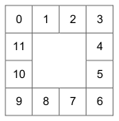

Épreuve Pratique BNS 2025¶
Merci à Gilles Lassus pour son travail de recopie.
 Téléchargements
Téléchargements
-
Une archive contenant les 48 dossiers (contenant chacun le sujet en
.pdfet le script en.py) : BNS_2025.zip (1,6 Mo) -
Un pdf unique de tous les sujets : BNS_2025_pdf_unique.pdf (667 Ko)
▶ Sujet 01¶
Version originale du sujet en pdf.
Exercice 01.1¶
Exercice 01.1
On considère dans cet exercice un graphe orienté représenté sous forme de listes d’adjacence.
On suppose que les sommets sont numérotés de 0 à n-1.
Par exemple, le graphe suivant :

est représenté par la liste d’adjacence suivante :
adj = [[1, 2], [2], [0], [0]]
Écrire une fonction voisins_entrants(adj, x) qui prend en paramètre le graphe
donné sous forme de liste d’adjacence et qui renvoie une liste contenant les voisins entrants
du sommet x, c’est-à-dire les sommets y tels qu’il existe une arête de y vers x.
Exemples :
>>> voisins_entrants([[1, 2], [2], [0], [0]], 0)
[2, 3]
>>> voisins_entrants([[1, 2], [2], [0], [0]], 1)
[0]
| 🐍 Script Python | |
|---|---|
1 2 3 4 5 6 | |
On considère dans cet exercice un graphe orienté représenté sous forme de listes d’adjacence.
On suppose que les sommets sont numérotés de `0` à `n-1`.
Par exemple, le graphe suivant :
{: .center}
est représenté par la liste d’adjacence suivante :
```python
adj = [[1, 2], [2], [0], [0]]
```
Écrire une fonction `voisins_entrants(adj, x)` qui prend en paramètre le graphe
donné sous forme de liste d’adjacence et qui renvoie une liste contenant les voisins entrants
du sommet `x`, c’est-à-dire les sommets `y` tels qu’il existe une arête de `y` vers `x`.
Exemples :
```python
>>> voisins_entrants([[1, 2], [2], [0], [0]], 0)
[2, 3]
>>> voisins_entrants([[1, 2], [2], [0], [0]], 1)
[0]
```

Exercice 01.2¶
Exercice 01.2
On considère dans cet exercice la suite de nombre suivante : 1, 11, 21, 1211, 111221, ...
Cette suite est construite ainsi : pour passer d’une valeur à la suivante, on la lit et on l’écrit sous la forme d’un nombre. Ainsi, pour 1211 :
- on lit un 1, un 2, deux 1 ;
- on écrit donc en nombre 1 1, 1 2, 2 1 ;
- puis on concatène 111221.
Compléter la fonction nombre_suivant qui prend en entrée un nombre sous forme de
chaine de caractères et qui renvoie le nombre suivant par ce procédé, encore sous forme de
chaîne de caractères.
| 🐍 Script Python | |
|---|---|
1 2 3 4 5 6 7 8 9 10 11 12 13 14 15 16 | |
Exemples :
>>> nombre_suivant('1211')
'111221'
>>> nombre_suivant('311')
'1321'
| 🐍 Script Python | |
|---|---|
1 2 3 4 5 6 7 8 9 10 11 12 13 14 15 16 | |
On considère dans cet exercice la suite de nombre suivante : 1, 11, 21, 1211, 111221, ...
Cette suite est construite ainsi : pour passer d’une valeur à la suivante, on la lit et on l’écrit sous la forme d’un nombre. Ainsi, pour 1211 :
- on lit *un 1, un 2, deux 1* ;
- on écrit donc en nombre *1 1, 1 2, 2 1* ;
- puis on concatène *111221*.
Compléter la fonction `nombre_suivant` qui prend en entrée un nombre sous forme de
chaine de caractères et qui renvoie le nombre suivant par ce procédé, encore sous forme de
chaîne de caractères.
```python linenums='1'
def nombre_suivant(s):
'''Renvoie le nombre suivant de celui representé par s
en appliquant le procédé de lecture.'''
resultat = ''
chiffre = s[0]
compte = 1
for i in range(...):
if s[i] == chiffre:
compte = ...
else:
resultat += ... + ...
chiffre = ...
...
lecture_... = ... + ...
resultat += lecture_chiffre
return resultat
Exemples :
>>> nombre_suivant('1211')
'111221'
>>> nombre_suivant('311')
'1321'
▶ Sujet 02¶
Version originale du sujet en pdf.
Exercice 02.1¶
Exercice 02.1
Écrire une fonction max_et_indice qui prend en paramètre un tableau non vide tab de
nombres entiers et qui renvoie la valeur du plus grand élément de ce tableau ainsi que
l’indice de sa première apparition dans ce tableau.
L’utilisation de la fonction native max n’est pas autorisée.
Exemples :
>>> max_et_indice([1, 5, 6, 9, 1, 2, 3, 7, 9, 8])
(9, 3)
>>> max_et_indice([-2])
(-2, 0)
>>> max_et_indice([-1, -1, 3, 3, 3])
(3, 2)
>>> max_et_indice([1, 1, 1, 1])
(1, 0)
| 🐍 Script Python | |
|---|---|
1 2 3 4 5 6 7 8 9 10 11 12 | |
Écrire une fonction `max_et_indice` qui prend en paramètre un tableau non vide `tab` de
nombres entiers et qui renvoie la valeur du plus grand élément de ce tableau ainsi que
l’indice de sa première apparition dans ce tableau.
L’utilisation de la fonction native `max` n’est pas autorisée.
Exemples :
```python
>>> max_et_indice([1, 5, 6, 9, 1, 2, 3, 7, 9, 8])
(9, 3)
>>> max_et_indice([-2])
(-2, 0)
>>> max_et_indice([-1, -1, 3, 3, 3])
(3, 2)
>>> max_et_indice([1, 1, 1, 1])
(1, 0)
```
Exercice 02.2¶
Exercice 02.2
L’ordre des gènes sur un chromosome est représenté par un tableau ordre de n cases
d’entiers distincts deux à deux et compris entre 1 et n.
Par exemple, ordre = [5, 4, 3, 6, 7, 2, 1, 8, 9] dans le cas n = 9.
On dit qu’il y a un point de rupture dans ordre dans chacune des situations suivantes :
- la première valeur de
ordren’est pas 1 ; - l’écart entre deux gènes consécutifs n’est pas égal à 1 ;
- la dernière valeur de
ordren’est pas n.
Par exemple, si ordre = [5, 4, 3, 6, 7, 2, 1, 8, 9] avec n = 9, on a
- un point de rupture au début car 5 est différent de 1
- un point de rupture entre 3 et 6 (l’écart est de 3)
- un point de rupture entre 7 et 2 (l’écart est de 5)
- un point de rupture entre 1 et 8 (l’écart est de 7)
Il y a donc 4 points de rupture.
Compléter les fonctions Python est_un_ordre et nombre_points_rupture
proposées à la page suivante pour que :
-
la fonction
est_un_ordrerenvoieTruesi le tableau passé en paramètre représente bien un ordre de gènes de chromosome etFalsesinon ; -
la fonction
nombre_points_rupturerenvoie le nombre de points de rupture d’un tableau passé en paramètre représentant l’ordre de gènes d’un chromosome.
| 🐍 Script Python | |
|---|---|
1 2 3 4 5 6 7 8 9 10 11 12 13 14 15 16 17 18 19 20 21 22 23 24 25 26 27 28 29 30 31 32 33 34 | |
Exemples :
>>> est_un_ordre([1, 6, 2, 8, 3, 7])
False
>>> est_un_ordre([5, 4, 3, 6, 7, 2, 1, 8, 9])
True
>>> nombre_points_rupture([5, 4, 3, 6, 7, 2, 1, 8, 9])
4
>>> nombre_points_rupture([1, 2, 3, 4, 5])
0
>>> nombre_points_rupture([1, 6, 2, 8, 3, 7, 4, 5])
7
>>> nombre_points_rupture([2, 1, 3, 4])
2
| 🐍 Script Python | |
|---|---|
1 2 3 4 5 6 7 8 9 10 11 12 13 14 15 16 17 18 19 20 21 22 23 24 25 26 27 28 29 30 31 32 33 34 | |
L’ordre des gènes sur un chromosome est représenté par un tableau `ordre` de `n` cases
d’entiers distincts deux à deux et compris entre 1 et `n`.
Par exemple, `ordre = [5, 4, 3, 6, 7, 2, 1, 8, 9]` dans le cas `n = 9`.
On dit qu’il y a un point de rupture dans `ordre` dans chacune des situations suivantes :
- la première valeur de `ordre` n’est pas 1 ;
- l’écart entre deux gènes consécutifs n’est pas égal à 1 ;
- la dernière valeur de `ordre` n’est pas n.
Par exemple, si `ordre = [5, 4, 3, 6, 7, 2, 1, 8, 9]` avec `n = 9`, on a
- un point de rupture au début car 5 est différent de 1
- un point de rupture entre 3 et 6 (l’écart est de 3)
- un point de rupture entre 7 et 2 (l’écart est de 5)
- un point de rupture entre 1 et 8 (l’écart est de 7)
Il y a donc 4 points de rupture.
Compléter les fonctions Python `est_un_ordre` et `nombre_points_rupture`
proposées à la page suivante pour que :
- la fonction `est_un_ordre` renvoie `True` si le tableau passé en paramètre
représente bien un ordre de gènes de chromosome et `False` sinon ;
- la fonction `nombre_points_rupture` renvoie le nombre de points de rupture
d’un tableau passé en paramètre représentant l’ordre de gènes d’un
chromosome.
```python linenums='1'
def est_un_ordre(tab):
'''
Renvoie True si tab est de longueur n et contient tous les
entiers de 1 à n, False sinon
'''
n = len(tab)
# les entiers vus lors du parcours
vus = ...
for x in tab:
if x < ... or x >... or ...:
return False
... .append(...)
return True
def nombre_points_rupture(ordre):
'''
Renvoie le nombre de point de rupture de ordre qui représente
un ordre de gènes de chromosome
'''
# on vérifie que ordre est un ordre de gènes
assert ...
n = len(ordre)
nb = 0
if ordre[...] != 1: # le premier n'est pas 1
nb = nb + 1
i = 0
while i < ...:
if ... not in [-1, 1]: # l'écart n'est pas 1
nb = nb + 1
i = i + 1
if ordre[i] != ...: # le dernier n'est pas n
nb = nb + 1
return nb
Exemples :
>>> est_un_ordre([1, 6, 2, 8, 3, 7])
False
>>> est_un_ordre([5, 4, 3, 6, 7, 2, 1, 8, 9])
True
>>> nombre_points_rupture([5, 4, 3, 6, 7, 2, 1, 8, 9])
4
>>> nombre_points_rupture([1, 2, 3, 4, 5])
0
>>> nombre_points_rupture([1, 6, 2, 8, 3, 7, 4, 5])
7
>>> nombre_points_rupture([2, 1, 3, 4])
2
▶ Sujet 03¶
Version originale du sujet en pdf.
Exercice 03.1¶
Exercice 03.1
On s’intéresse à la suite d’entiers définie par :
- les deux premières valeurs sont égales à 1 ;
- ensuite, chaque valeur est obtenue en faisant la somme des deux valeurs qui la précèdent.
La troisième valeur est donc \(1+1 = 2\), la quatrième est \(1+2 = 3\), la cinquième est \(2+3 = 5\), la sixième est \(3 + 5 = 8\), et ainsi de suite.
Cette suite d’entiers est connue sous le nom de suite de Fibonacci.
Écrire en Python une fonction fibonacci qui prend en paramètre un entier n supposé
strictement positif et qui renvoie le terme d’indice n de cette suite.
Exemples :
>>> fibonacci(1)
1
>>> fibonacci(2)
1
>>> fibonacci(25)
75025
Version récursive :
| 🐍 Script Python | |
|---|---|
1 2 3 4 5 | |
Version programmation dynamique bottom-up:
| 🐍 Script Python | |
|---|---|
1 2 3 4 5 6 7 | |
Version programmation dynamique top-down avec mémoïsation:
| 🐍 Script Python | |
|---|---|
1 2 3 4 5 6 | |
On peut constater que la version récursive échoue à calculer fibonacci(45), alors que les deux autres versions le font quasi-immédiatement.
On s’intéresse à la suite d’entiers définie par :
- les deux premières valeurs sont égales à 1 ;
- ensuite, chaque valeur est obtenue en faisant la somme des deux valeurs qui la précèdent.
La troisième valeur est donc $1+1 = 2$, la quatrième est $1+2 = 3$, la cinquième est $2+3 = 5$,
la sixième est $3 + 5 = 8$, et ainsi de suite.
Cette suite d’entiers est connue sous le nom de suite de Fibonacci.
Écrire en Python une fonction `fibonacci` qui prend en paramètre un entier `n` supposé
strictement positif et qui renvoie le terme d’indice `n` de cette suite.
Exemples :
```python
>>> fibonacci(1)
1
>>> fibonacci(2)
1
>>> fibonacci(25)
75025
```
Exercice 03.2¶
Exercice 03.2
On considère la fonction eleves_du_mois prenant en paramètres eleves et notes deux
tableaux non vides de même longueur, le premier contenant le nom des élèves et le second, des
entiers positifs désignant leur note à un contrôle de sorte que eleves[i] a obtenu la
note notes[i].
Cette fonction renvoie le couple constitué de la note maximale attribuée et des noms des élèves ayant obtenu cette note regroupés dans un tableau.
Ainsi, l’instruction eleves_du_mois(['a', 'b', 'c', 'd'], [15, 18, 12, 18]) renvoie
le couple (18, ['b', 'd']).
| 🐍 Script Python | |
|---|---|
1 2 3 4 5 6 7 8 9 10 11 12 | |
Compléter ce code.
Exemples :
>>> eleves_nsi = ['a','b','c','d','e','f','g','h','i','j']
>>> notes_nsi = [30, 40, 80, 60, 58, 80, 75, 80, 60, 24]
>>> eleves_du_mois(eleves_nsi, notes_nsi)
(80, ['c', 'f', 'h'])
| 🐍 Script Python | |
|---|---|
1 2 3 4 5 6 7 8 9 10 11 12 | |
On considère la fonction `eleves_du_mois` prenant en paramètres `eleves` et `notes` deux
tableaux non vides de même longueur, le premier contenant le nom des élèves et le second, des
entiers positifs désignant leur note à un contrôle de sorte que `eleves[i]` a obtenu la
note `notes[i]`.
Cette fonction renvoie le couple constitué de la note maximale attribuée et des noms
des élèves ayant obtenu cette note regroupés dans un tableau.
Ainsi, l’instruction `eleves_du_mois(['a', 'b', 'c', 'd'], [15, 18, 12, 18])` renvoie
le couple `(18, ['b', 'd'])`.
```python linenums='1'
def eleves_du_mois(eleves, notes):
note_maxi = 0
meilleurs_eleves = ...
for i in range(...) :
if notes[i] == ... :
meilleurs_eleves.append(...)
elif notes[i] > note_maxi:
note_maxi = ...
meilleurs_eleves = [...]
return (note_maxi,meilleurs_eleves)
Compléter ce code.
Exemples :
>>> eleves_nsi = ['a','b','c','d','e','f','g','h','i','j']
>>> notes_nsi = [30, 40, 80, 60, 58, 80, 75, 80, 60, 24]
>>> eleves_du_mois(eleves_nsi, notes_nsi)
(80, ['c', 'f', 'h'])
▶ Sujet 04¶
Version originale du sujet en pdf.
Exercice 04.1¶
Exercice 04.1
Écrire une fonction ecriture_binaire_entier_positif qui prend en paramètre un
entier positif n et renvoie une une chaine de caractère correspondant à l‘écriture binaire de n.
On rappelle que :
- l’écriture binaire de 25 est 11001 car \(25 = 1 \times 2^4 + 1 \times 2^3 + 0 \times 2^2 + 0 \times 2^1 + 1 \times 2^0\) ;
n % 2vaut 0 ou 1 selon quenest pair ou impair ;n // 2donne le quotient de la division euclidienne denpar 2.
Il est interdit dans cet exercice d’utiliser la fonction bin de Python.
Exemples :
>>> 5 % 2
1
>>> 5 // 2
2
>>> ecriture_binaire_entier_positif(0)
'0'
>>> ecriture_binaire_entier_positif(2)
'10'
>>> ecriture_binaire_entier_positif(105)
'1101001'
| 🐍 Script Python | |
|---|---|
1 2 3 4 5 6 7 8 | |
Écrire une fonction `ecriture_binaire_entier_positif` qui prend en paramètre un
entier positif `n` et renvoie une une chaine de caractère correspondant à l‘écriture binaire de `n`.
On rappelle que :
- l’écriture binaire de 25 est 11001 car $25 = 1 \times 2^4 + 1 \times 2^3 + 0 \times 2^2 + 0 \times 2^1 + 1 \times 2^0$ ;
- `n % 2` vaut 0 ou 1 selon que `n` est pair ou impair ;
- `n // 2` donne le quotient de la division euclidienne de `n` par 2.
Il est interdit dans cet exercice d’utiliser la fonction `bin` de Python.
Exemples :
```python
>>> 5 % 2
1
>>> 5 // 2
2
>>> ecriture_binaire_entier_positif(0)
'0'
>>> ecriture_binaire_entier_positif(2)
'10'
>>> ecriture_binaire_entier_positif(105)
'1101001'
```
Exercice 04.2¶
Exercice 04.2
La fonction tri_bulles prend en paramètre une liste tab d’entiers (type list) et le modifie pour le trier par ordre croissant.
Le tri à bulles est un tri en place qui commence par placer le plus grand élément en
dernière position en parcourant le tableau de gauche à droite et en échangeant au passage
les éléments voisins mal ordonnés (si la valeur de l’élément d’indice i a une valeur
strictement supérieure à celle de l’indice i + 1, ils sont échangés). Le tri place ensuite
en avant-dernière position le plus grand élément du tableau privé de son dernier élément
en procédant encore à des échanges d’éléments voisins. Ce principe est répété jusqu’à
placer le minimum en première position.
Exemple : pour trier le tableau [7, 9, 4, 3] :
- première étape : 7 et 9 ne sont pas échangés, puis 9 et 4 sont échangés, puis 9 et
3 sont échangés, le tableau est alors
[7, 4, 3, 9] - deuxième étape : 7 et 4 sont échangés, puis 7 et 3 sont échangés, le tableau est
alors
[4, 3, 7, 9] - troisième étape : 4 et 3 sont échangés, le tableau est alors
[3, 4, 7, 9]
Compléter le code Python ci-dessous qui implémente la fonction tri_bulles.
| 🐍 Script Python | |
|---|---|
1 2 3 4 5 6 7 8 9 10 11 12 13 14 | |
Exemples :
>>> tab = []
>>> tri_bulles(tab)
>>> tab
[]
>>> tab2 = [9, 3, 7, 2, 3, 1, 6]
>>> tri_bulles(tab2)
>>> tab2
[1, 2, 3, 3, 6, 7, 9]
>>> tab3 = [9, 7, 4, 3]
>>> tri_bulles(tab3)
>>> tab3
[3, 4, 7, 9]
| 🐍 Script Python | |
|---|---|
1 2 3 4 5 6 7 8 9 10 11 12 13 14 | |
La fonction `tri_bulles` prend en paramètre une liste `tab` d’entiers (type `list`) et le modifie pour le trier par ordre croissant.
Le tri à bulles est un tri en place qui commence par placer le plus grand élément en
dernière position en parcourant le tableau de gauche à droite et en échangeant au passage
les éléments voisins mal ordonnés (si la valeur de l’élément d’indice `i` a une valeur
strictement supérieure à celle de l’indice `i + 1`, ils sont échangés). Le tri place ensuite
en avant-dernière position le plus grand élément du tableau privé de son dernier élément
en procédant encore à des échanges d’éléments voisins. Ce principe est répété jusqu’à
placer le minimum en première position.
Exemple : pour trier le tableau `[7, 9, 4, 3]` :
- première étape : 7 et 9 ne sont pas échangés, puis 9 et 4 sont échangés, puis 9 et
3 sont échangés, le tableau est alors `[7, 4, 3, 9]`
- deuxième étape : 7 et 4 sont échangés, puis 7 et 3 sont échangés, le tableau est
alors `[4, 3, 7, 9]`
- troisième étape : 4 et 3 sont échangés, le tableau est alors `[3, 4, 7, 9]`
Compléter le code Python ci-dessous qui implémente la fonction tri_bulles.
```python linenums='1'
def echange(tab, i, j):
'''Echange les éléments d'indice i et j dans le tableau tab.'''
temp = ...
tab[i] = ...
tab[j] = ...
def tri_bulles(tab):
'''Trie le tableau tab dans l'ordre croissant
par la méthode du tri à bulles.'''
n = len(tab)
for i in range(...):
for j in range(...):
if ... > ...:
echange(tab, j, ...)
Exemples :
>>> tab = []
>>> tri_bulles(tab)
>>> tab
[]
>>> tab2 = [9, 3, 7, 2, 3, 1, 6]
>>> tri_bulles(tab2)
>>> tab2
[1, 2, 3, 3, 6, 7, 9]
>>> tab3 = [9, 7, 4, 3]
>>> tri_bulles(tab3)
>>> tab3
[3, 4, 7, 9]
```
▶ Sujet 05¶
Version originale du sujet en pdf.
Exercice 05.1¶
Exercice 05.1
Programmer une fonction renverse, prenant en paramètre une chaîne de caractères mot et renvoie cette chaîne de caractères en ordre inverse.
Exemple :
>>> renverse("")
""
>>> renverse("abc")
"cba"
>>> renverse("informatique")
"euqitamrofni"
| 🐍 Script Python | |
|---|---|
1 2 3 4 5 | |
Programmer une fonction `renverse`, prenant en paramètre une chaîne de caractères `mot` et renvoie cette chaîne de caractères en ordre inverse.
Exemple :
```python
>>> renverse("")
""
>>> renverse("abc")
"cba"
>>> renverse("informatique")
"euqitamrofni"
```
Exercice 05.2¶
Exercice 05.2
Un nombre premier est un nombre entier naturel qui admet exactement deux diviseurs distincts entiers et positifs : 1 et lui-même.
Le crible d’Ératosthène permet de déterminer les nombres premiers plus petit qu’un certain
nombre n fixé.
On considère pour cela un tableau tab de nbooléens, initialement tous égaux à True, sauf
tab[0] et tab[1] qui valent False, 0 et 1 n’étant pas des nombres premiers.
On parcourt alors ce tableau de gauche à droite.
Pour chaque indice i :
-
si
tab[i]vautTrue: le nombreiest premier et on donne la valeurFalseà toutes les cases du tableau dont l’indice est un multiple dei, à partir de2*i(c’est-à-dire2*i,3*i...). -
si
tab[i]vautFalse: le nombrein’est pas premier et on n’effectue aucun changement sur le tableau.
On dispose de la fonction crible, incomplète et donnée ci-dessous, prenant en paramètre un
entier n supérieur à 1 et renvoyant un tableau contenant tous les nombres premiers plus
petits que n.
| 🐍 Script Python | |
|---|---|
1 2 3 4 5 6 7 8 9 10 11 12 13 14 | |
Exemples :
>>> crible(40)
[2, 3, 5, 7, 11, 13, 17, 19, 23, 29, 31, 37]
>>> crible(5)
[2, 3]
| 🐍 Script Python | |
|---|---|
1 2 3 4 5 6 7 8 9 10 11 12 13 14 | |
Un nombre premier est un nombre entier naturel qui admet exactement deux diviseurs distincts
entiers et positifs : 1 et lui-même.
Le crible d’Ératosthène permet de déterminer les nombres premiers plus petit qu’un certain
nombre `n` fixé.
On considère pour cela un tableau `tab` de `n`booléens, initialement tous égaux à `True`, sauf
`tab[0]` et `tab[1]` qui valent `False`, 0 et 1 n’étant pas des nombres premiers.
On parcourt alors ce tableau de gauche à droite.
Pour chaque indice `i` :
- si `tab[i]` vaut `True` : le nombre `i` est premier et on donne la valeur `False` à toutes les
cases du tableau dont l’indice est un multiple de `i`, à partir de `2*i` (c’est-à-dire `2*i`, `3*i` ...).
- si `tab[i]` vaut `False` : le nombre `i` n’est pas premier et on n’effectue aucun
changement sur le tableau.
On dispose de la fonction `crible`, incomplète et donnée ci-dessous, prenant en paramètre un
entier `n` supérieur à 1 et renvoyant un tableau contenant tous les nombres premiers plus
petits que `n`.
```python linenums='1'
def crible(n):
"""Renvoie un tableau contenant tous les nombres premiers
plus petits que n."""
premiers = []
tab = [True] * n
tab[0], tab[1] = False, False
for i in range(n):
if tab[i]:
premiers....
multiple = ...
while multiple < n:
tab[multiple] = ...
multiple = ...
return premiers
Exemples :
>>> crible(40)
[2, 3, 5, 7, 11, 13, 17, 19, 23, 29, 31, 37]
>>> crible(5)
[2, 3]
```
▶ Sujet 06¶
Version originale du sujet en pdf.
Exercice 06.1¶
Exercice 06.1
On rappelle que :
- le nombre \(a^n\) est le nombre \(a \times a \times a \times \dots \times a\), où le facteur \(a\) apparaît \(n\) fois,
- en langage Python, l’instruction
t[-1]permet d’accéder au dernier élément du tableaut.
Dans cet exercice, l’opérateur ** et la fonction pow ne sont pas autorisés.
Programmer en langage Python une fonction liste_puissances qui prend en arguments
un nombre entier a, un entier strictement positif n et qui renvoie la liste de ses puissances
\(\rm{[a^1, a^2, ..., a^n]}\).
Programmer également une fonction liste_puisssances_borne qui prend en
arguments un nombre entier a supérieur ou égal à 2 et un entier borne, et qui renvoie la
liste de ses puissances, à l’exclusion de \(\rm{a^0}\), strictement inférieures à borne.
Exemples :
>>> liste_puissances(3, 5)
[3, 9, 27, 81, 243]
>>> liste_puissances(-2, 4)
[-2, 4, -8, 16]
>>> liste_puissances_borne(2, 16)
[2, 4, 8]
>>> liste_puissances_borne(2, 17)
[2, 4, 8, 16]
>>> liste_puissances_borne(5, 5)
[]
| 🐍 Script Python | |
|---|---|
1 2 3 4 5 6 7 8 9 10 11 12 13 | |
On rappelle que :
- le nombre $a^n$ est le nombre $a \times a \times a \times \dots \times a$, où le facteur $a$ apparaît $n$ fois,
- en langage Python, l’instruction `t[-1]` permet d’accéder au dernier élément du
tableau `t`.
Dans cet exercice, l’opérateur ```**``` et la fonction `pow` ne sont pas autorisés.
Programmer en langage Python une fonction `liste_puissances` qui prend en arguments
un nombre entier `a`, un entier strictement positif `n` et qui renvoie la liste de ses puissances
$\rm{[a^1, a^2, ..., a^n]}$.
Programmer également une fonction `liste_puisssances_borne` qui prend en
arguments un nombre entier `a` supérieur ou égal à 2 et un entier `borne`, et qui renvoie la
liste de ses puissances, à l’exclusion de $\rm{a^0}$, strictement inférieures à `borne`.
Exemples :
```python
>>> liste_puissances(3, 5)
[3, 9, 27, 81, 243]
>>> liste_puissances(-2, 4)
[-2, 4, -8, 16]
>>> liste_puissances_borne(2, 16)
[2, 4, 8]
>>> liste_puissances_borne(2, 17)
[2, 4, 8, 16]
>>> liste_puissances_borne(5, 5)
[]
```
Exercice 06.2¶
Exercice 06.2
On affecte à chaque lettre de l'alphabet un code selon le tableau ci-dessous :
| A | B | C | D | E | F | G | H | I | J | K | L | M |
|---|---|---|---|---|---|---|---|---|---|---|---|---|
| 1 | 2 | 3 | 4 | 5 | 6 | 7 | 8 | 9 | 10 | 11 | 12 | 13 |
| N | O | P | Q | R | S | T | U | V | W | X | Y | Z |
|---|---|---|---|---|---|---|---|---|---|---|---|---|
| 14 | 15 | 16 | 17 | 18 | 19 | 20 | 21 | 22 | 23 | 24 | 25 | 26 |
Cette table de correspondance est stockée dans un dictionnaire dico où les clés sont les
lettres de l’alphabet et les valeurs les codes correspondants.
dico = {"A": 1, "B": 2, "C": 3, "D": 4, "E": 5, "F": 6,
"G": 7, "H": 8, "I": 9, "J": 10, "K": 11, "L": 12,
"M": 13, "N": 14, "O": 15, "P": 16, "Q": 17,
"R": 18, "S": 19, "T": 20, "U": 21, "V": 22,
"W": 23, "X": 24, "Y": 25, "Z": 26}
Pour un mot donné, on détermine d’une part son code alphabétique concaténé, obtenu par la juxtaposition des codes de chacun de ses caractères, et d’autre part, son code additionné, qui est la somme des codes de chacun de ses caractères.
Par ailleurs, on dit que ce mot est « parfait » si le code additionné divise le code concaténé.
Exemples :
-
Pour le mot
"PAUL", le code concaténé est la chaîne'1612112', soit l’entier 1 612 112. Son code additionné est l’entier 50 car 16 + 1 + 21 + 12 = 50. 50 ne divise pas l’entier 1 612 112 ; par conséquent, le mot"PAUL"n’est pas parfait. -
Pour le mot
"ALAIN", le code concaténé est la chaîne'1121914', soit l’entier 1 121 914. Le code additionné est l’entier 37 car 1 + 12 + 1 + 9 + 14 = 37. 37 divise l’entier 1 121 914 ; par conséquent, le mot"ALAIN"est parfait.
Compléter la fonction codes_parfait située à la page suivante et qui prend en paramètre
un mot en majuscule et renvoie un triplet constitué du code additionné, du code concaténé
et d’un booléen indiquant si le mot est parfait ou non.
On rappelle que pour tester si un entier b divise un entier a, on utilise l'opérateur modulo a % b qui renvoie le reste de la division euclidienne de a par b. Si a % b vaut 0, alors b divise a.
| 🐍 Script Python | |
|---|---|
1 2 3 4 5 6 7 8 9 10 11 12 13 14 | |
Exemples :
>>> codes_parfait("PAUL")
(50, 1612112, False)
>>> codes_parfait("ALAIN")
(37, 1121914, True)
| 🐍 Script Python | |
|---|---|
1 2 3 4 5 6 7 8 9 10 11 12 13 14 15 16 17 | |
On affecte à chaque lettre de l'alphabet un code selon le tableau ci-dessous :
| A | B | C | D | E | F | G | H | I | J | K | L | M |
|:-:|:-:|:-:|:-:|:-:|:-:|:-:|:-:|:-:|:-:|:-:|:-:|:-:|
| 1 | 2 | 3 | 4 | 5 | 6 | 7 | 8 | 9 | 10 | 11 | 12 | 13 |
| N | O | P | Q | R | S | T | U | V | W | X | Y | Z |
|:-:|:-:|:-:|:-:|:-:|:-:|:-:|:-:|:-:|:-:|:-:|:-:|:-:|
| 14 | 15 | 16 | 17 | 18 | 19 | 20 | 21 | 22 | 23 | 24 | 25 | 26 |
Cette table de correspondance est stockée dans un dictionnaire `dico` où les clés sont les
lettres de l’alphabet et les valeurs les codes correspondants.
```python
dico = {"A": 1, "B": 2, "C": 3, "D": 4, "E": 5, "F": 6,
"G": 7, "H": 8, "I": 9, "J": 10, "K": 11, "L": 12,
"M": 13, "N": 14, "O": 15, "P": 16, "Q": 17,
"R": 18, "S": 19, "T": 20, "U": 21, "V": 22,
"W": 23, "X": 24, "Y": 25, "Z": 26}
Pour un mot donné, on détermine d’une part son code alphabétique concaténé, obtenu par la juxtaposition des codes de chacun de ses caractères, et d’autre part, son code additionné, qui est la somme des codes de chacun de ses caractères.
Par ailleurs, on dit que ce mot est « parfait » si le code additionné divise le code concaténé.
Exemples :
-
Pour le mot
"PAUL", le code concaténé est la chaîne'1612112', soit l’entier 1 612 112. Son code additionné est l’entier 50 car 16 + 1 + 21 + 12 = 50. 50 ne divise pas l’entier 1 612 112 ; par conséquent, le mot"PAUL"n’est pas parfait. -
Pour le mot
"ALAIN", le code concaténé est la chaîne'1121914', soit l’entier 1 121 914. Le code additionné est l’entier 37 car 1 + 12 + 1 + 9 + 14 = 37. 37 divise l’entier 1 121 914 ; par conséquent, le mot"ALAIN"est parfait.
Compléter la fonction codes_parfait située à la page suivante et qui prend en paramètre
un mot en majuscule et renvoie un triplet constitué du code additionné, du code concaténé
et d’un booléen indiquant si le mot est parfait ou non.
On rappelle que pour tester si un entier b divise un entier a, on utilise l'opérateur modulo a % b qui renvoie le reste de la division euclidienne de a par b. Si a % b vaut 0, alors b divise a.
| 🐍 Script Python | |
|---|---|
1 2 3 4 5 6 7 8 9 10 11 12 13 14 | |
Exemples :
>>> codes_parfait("PAUL")
(50, 1612112, False)
>>> codes_parfait("ALAIN")
(37, 1121914, True)
▶ Sujet 07¶
Version originale du sujet en pdf.
Exercice 07.1¶
Exercice 07.1
Le nombre d’occurrences d’un caractère dans une chaîne de caractère est le nombre d’apparitions de ce caractère dans la chaîne.
Exemples :
- le nombre d’occurrences du caractère
‘o’dans‘bonjour’est 2 ; - le nombre d’occurrences du caractère
‘b’dans‘Bébé’est 1 ; - le nombre d’occurrences du caractère
‘B’dans‘Bébé’est 1 ; - le nombre d’occurrences du caractère
‘ ‘dans‘Hello world !’est 2.
On cherche les occurrences des caractères dans une phrase. On souhaite stocker ces occurrences dans un dictionnaire dont les clefs seraient les caractères de la phrase et les valeurs le nombre d’occurrences de ces caractères.
Par exemple : avec la phrase 'Hello world !' le dictionnaire est le suivant :
{'H': 1,'e': 1,'l': 3,'o': 2,' ': 2,'w': 1,'r': 1,'d': 1,'!': 1}
L’ordre des clefs n’a pas d’importance.
Écrire une fonction nbr_occurrences prenant comme paramètre une chaîne de
caractères chaine et renvoyant le dictionnaire des nombres d’occurrences des
caractères de cette chaîne.
| 🐍 Script Python | |
|---|---|
1 2 3 4 5 6 7 8 | |
Le nombre d’occurrences d’un caractère dans une chaîne de caractère est le nombre
d’apparitions de ce caractère dans la chaîne.
Exemples :
- le nombre d’occurrences du caractère `‘o’` dans `‘bonjour’` est 2 ;
- le nombre d’occurrences du caractère `‘b’` dans `‘Bébé’` est 1 ;
- le nombre d’occurrences du caractère `‘B’` dans `‘Bébé’` est 1 ;
- le nombre d’occurrences du caractère `‘ ‘` dans `‘Hello world !’` est 2.
On cherche les occurrences des caractères dans une phrase. On souhaite stocker ces
occurrences dans un dictionnaire dont les clefs seraient les caractères de la phrase et
les valeurs le nombre d’occurrences de ces caractères.
Par exemple : avec la phrase `'Hello world !'` le dictionnaire est le suivant :
`{'H': 1,'e': 1,'l': 3,'o': 2,' ': 2,'w': 1,'r': 1,'d': 1,'!': 1}`
*L’ordre des clefs n’a pas d’importance.*
Écrire une fonction `nbr_occurrences` prenant comme paramètre une chaîne de
caractères `chaine` et renvoyant le dictionnaire des nombres d’occurrences des
caractères de cette chaîne.
Exercice 07.2¶
Exercice 07.2
La fonction fusion prend deux tableaux tab1, tab2 (type list) d’entiers triés par ordre
croissant et les fusionne en un tableau trié tab12 qu’elle renvoie.
Compléter le code de la fonction fusion ci-dessous.
| 🐍 Script Python | |
|---|---|
1 2 3 4 5 6 7 8 9 10 11 12 13 14 15 16 17 18 19 20 21 22 23 24 25 | |
Compléter le code.
Exemple :
>>> fusion([1, 6, 10],[0, 7, 8, 9])
[0, 1, 6, 7, 8, 9, 10]
| 🐍 Script Python | |
|---|---|
1 2 3 4 5 6 7 8 9 10 11 12 13 14 15 16 17 18 19 20 21 22 23 24 | |
La fonction `fusion` prend deux tableaux `tab1`, `tab2` (type `list`) d’entiers triés par ordre
croissant et les fusionne en un tableau trié `tab12` qu’elle renvoie.
Compléter le code de la fonction `fusion` ci-dessous.
```python linenums='1'
def fusion(tab1,tab2):
'''Fusionne deux tableaux triés et renvoie le nouveau tableau trié.'''
n1 = len(tab1)
n2 = len(tab2)
tab12 = [0] * (n1 + n2)
i1 = 0
i2 = 0
i = 0
while i1 < n1 and ...:
if tab1[i1] < tab2[i2]:
tab12[i] = ...
i1 = ...
else:
tab12[i] = tab2[i2]
i2 = ...
i += 1
while i1 < n1:
tab12[i] = ...
i1 = i1 + 1
i = ...
while i2 < n2:
tab12[i] = ...
i2 = i2 + 1
i = ...
return tab12
Compléter le code.
Exemple :
>>> fusion([1, 6, 10],[0, 7, 8, 9])
[0, 1, 6, 7, 8, 9, 10]
▶ Sujet 08¶
Version originale du sujet en pdf.
Exercice 08.1¶
Exercice 08.1
Écrire la fonction maximum_tableau, prenant en paramètre un tableau non vide de nombres tab (de type
list) et renvoyant le plus grand élément de ce tableau.
Exemples :
>>> maximum_tableau([98, 12, 104, 23, 131, 9])
131
>>> maximum_tableau([-27, 24, -3, 15])
24
| 🐍 Script Python | |
|---|---|
1 2 3 4 5 6 | |
Écrire la fonction `maximum_tableau`, prenant en paramètre un tableau non vide de nombres `tab` (de type
`list`) et renvoyant le plus grand élément de ce tableau.
Exemples :
```python
>>> maximum_tableau([98, 12, 104, 23, 131, 9])
131
>>> maximum_tableau([-27, 24, -3, 15])
24
```
Exercice 08.2¶
Exercice 08.2
On dispose de chaînes de caractères contenant uniquement des parenthèses ouvrantes et fermantes.
Un parenthésage est correct si :
- le nombre de parenthèses ouvrantes de la chaîne est égal au nombre de parenthèses fermantes.
- en parcourant la chaîne de gauche à droite, le nombre de parenthèses déjà ouvertes doit être, à tout moment, supérieur ou égal au nombre de parenthèses déjà fermées.
Ainsi, ((()())(())) est un parenthésage correct.
Les parenthésages ())(() et (())(() sont, eux, incorrects.
On dispose du code de la classe Pile suivant :
| 🐍 Script Python | |
|---|---|
1 2 3 4 5 6 7 8 9 10 11 12 13 14 15 16 17 18 19 20 | |
On souhaite programmer une fonction bon_parenthesage qui prend en paramètre une chaîne de caractères ch formée de
parenthèses et renvoie True si la chaîne est bien parenthésée et False sinon.
Cette fonction utilise une pile et suit le principe suivant : en parcourant la chaîne de gauche à droite, si on trouve une parenthèse ouvrante, on l’empile au sommet de la pile et si on trouve une parenthèse fermante, on dépile (si possible) la parenthèse ouvrante stockée au sommet de la pile.
La chaîne est alors bien parenthésée si, à la fin du parcours, la pile est vide.
Elle est, par contre, mal parenthésée :
- si dans le parcours, on trouve une parenthèse fermante, alors que la pile est vide ;
- ou si, à la fin du parcours, la pile n’est pas vide.
Compléter le code de la fonction bon_parenthesage ci-dessous:
| 🐍 Script Python | |
|---|---|
1 2 3 4 5 6 7 8 9 10 11 12 13 | |
Exemples :
>>> bon_parenthesage("((()())(()))")
True
>>> bon_parenthesage("())(()")
False
>>> bon_parenthesage("(())(()")
False
| 🐍 Script Python | |
|---|---|
1 2 3 4 5 6 7 8 9 10 11 12 13 14 15 16 17 18 19 20 21 22 23 24 25 26 27 28 29 30 31 32 33 | |
On dispose de chaînes de caractères contenant uniquement des parenthèses ouvrantes et
fermantes.
Un parenthésage est correct si :
- le nombre de parenthèses ouvrantes de la chaîne est égal au nombre de parenthèses
fermantes.
- en parcourant la chaîne de gauche à droite, le nombre de parenthèses déjà ouvertes doit
être, à tout moment, supérieur ou égal au nombre de parenthèses déjà fermées.
Ainsi, `((()())(()))` est un parenthésage correct.
Les parenthésages `())(()` et `(())(()` sont, eux, incorrects.
On dispose du code de la classe `Pile` suivant :
```python linenums='1'
class Pile:
"""Classe définissant une structure de pile."""
def __init__(self):
self.contenu = []
def est_vide(self):
"""Renvoie un booléen indiquant si la pile est vide."""
return self.contenu == []
def empiler(self, v):
"""Place l'élément v au sommet de la pile"""
self.contenu.append(v)
def depiler(self):
"""
Retire et renvoie l'élément placé au sommet de la pile,
si la pile n’est pas vide. Produit une erreur sinon.
"""
assert not self.est_vide()
return self.contenu.pop()
On souhaite programmer une fonction bon_parenthesage qui prend en paramètre une chaîne de caractères ch formée de
parenthèses et renvoie True si la chaîne est bien parenthésée et False sinon.
Cette fonction utilise une pile et suit le principe suivant : en parcourant la chaîne de gauche à droite, si on trouve une parenthèse ouvrante, on l’empile au sommet de la pile et si on trouve une parenthèse fermante, on dépile (si possible) la parenthèse ouvrante stockée au sommet de la pile.
La chaîne est alors bien parenthésée si, à la fin du parcours, la pile est vide.
Elle est, par contre, mal parenthésée :
- si dans le parcours, on trouve une parenthèse fermante, alors que la pile est vide ;
- ou si, à la fin du parcours, la pile n’est pas vide.
Compléter le code de la fonction bon_parenthesage ci-dessous:
| 🐍 Script Python | |
|---|---|
1 2 3 4 5 6 7 8 9 10 11 12 13 | |
Exemples :
>>> bon_parenthesage("((()())(()))")
True
>>> bon_parenthesage("())(()")
False
>>> bon_parenthesage("(())(()")
False
▶ Sujet 09¶
Version originale du sujet en pdf.
Exercice 09.1¶
Exercice 09.1
Programmer la fonction multiplication, prenant en paramètres deux nombres entiers relatifs
n1 et n2, et qui renvoie le produit de ces deux nombres.
Les seules opérations autorisées sont l’addition et la soustraction.
>>> multiplication(3, 5)
15
>>> multiplication(-4, -8)
32
>>> multiplication(-2, 6)
-12
>>> multiplication(-2, 0)
0
| 🐍 Script Python | |
|---|---|
1 2 3 4 5 6 7 8 9 10 11 | |
Programmer la fonction `multiplication`, prenant en paramètres deux nombres entiers relatifs
`n1` et `n2`, et qui renvoie le produit de ces deux nombres.
Les seules opérations autorisées sont l’addition et la soustraction.
```python
>>> multiplication(3, 5)
15
>>> multiplication(-4, -8)
32
>>> multiplication(-2, 6)
-12
>>> multiplication(-2, 0)
0
```
Exercice 09.2¶
Exercice 09.2
On s’intéresse dans cet exercice à la recherche dichotomique dans un tableau trié d’entiers. Compléter la fonction suivante en respectant la spécification.
| 🐍 Script Python | |
|---|---|
1 2 3 4 5 6 7 8 9 10 11 12 13 14 15 16 17 | |
Exemples :
>>> dichotomie([15, 16, 18, 19, 23, 24, 28, 29, 31, 33],28)
True
>>> dichotomie([15, 16, 18, 19, 23, 24, 28, 29, 31, 33],27)
False
| 🐍 Script Python | |
|---|---|
1 2 3 4 5 6 7 8 9 10 11 12 13 14 15 16 17 | |
On s’intéresse dans cet exercice à la recherche dichotomique dans un tableau trié d’entiers.
Compléter la fonction suivante en respectant la spécification.
```python linenums='1'
def dichotomie(tab, x):
"""
tab : tableau d'entiers trié dans l'ordre croissant
x : nombre entier
La fonction renvoie True si tab contient x et False sinon
"""
debut = 0
fin = len(tab) - 1
while debut <= fin:
m = ...
if x == tab[m]:
return ...
if x > tab[m]:
debut = m + 1
else:
fin = ...
return ...
Exemples :
>>> dichotomie([15, 16, 18, 19, 23, 24, 28, 29, 31, 33],28)
True
>>> dichotomie([15, 16, 18, 19, 23, 24, 28, 29, 31, 33],27)
False
▶ Sujet 10¶
Version originale du sujet en pdf.
Exercice 10.1¶
Exercice 10.1
Écrire une fonction recherche qui prend en paramètres un tableau tab de nombres
entiers triés par ordre croissant et un nombre entier n, et qui effectue une recherche
dichotomique du nombre entier n dans le tableau non vide tab.
Cette fonction doit renvoyer un indice correspondant au nombre cherché s’il est dans le
tableau, None sinon.
Exemples :
>>> recherche([2, 3, 4, 5, 6], 5)
3
>>> recherche([2, 3, 4, 6, 7], 5) # renvoie None
| 🐍 Script Python | |
|---|---|
1 2 3 4 5 6 7 8 9 10 11 12 | |
Écrire une fonction `recherche` qui prend en paramètres un tableau `tab` de nombres
entiers triés par ordre croissant et un nombre entier `n`, et qui effectue une recherche
dichotomique du nombre entier `n` dans le tableau non vide `tab`.
Cette fonction doit renvoyer un indice correspondant au nombre cherché s’il est dans le
tableau, `None` sinon.
Exemples :
```python
>>> recherche([2, 3, 4, 5, 6], 5)
3
>>> recherche([2, 3, 4, 6, 7], 5) # renvoie None
```
Exercice 10.2¶
Exercice 10.2
Le codage de César transforme un message en changeant chaque lettre en la décalant dans l’alphabet. Par exemple, avec un décalage de 3, le A se transforme en D, le B en E, ..., le X en A, le Y en B et le Z en C. Les autres caractères (‘!’,’ ?’ ...) ne sont pas codés.
La fonction position_alphabet ci-dessous prend en paramètre un caractère lettre
et renvoie la position de lettre dans la chaîne de caractères alphabet s’il s’y trouve.
La fonction cesar prend en paramètres une chaîne de caractères message et un nombre
entier decalage et renvoie le nouveau message codé avec le codage de César utilisant
le décalage decalage.
| 🐍 Script Python | |
|---|---|
1 2 3 4 5 6 7 8 9 10 11 12 13 14 15 16 17 | |
Compléter la fonction cesar.
Exemples :
>>> cesar('BONJOUR A TOUS. VIVE LA MATIERE NSI !', 4)
'FSRNSYV E XSYW. ZMZI PE QEXMIVI RWM !'
>>> cesar('GTSOTZW F YTZX. ANAJ QF RFYNJWJ SXN !', -5)
'BONJOUR A TOUS. VIVE LA MATIERE NSI !'
| 🐍 Script Python | |
|---|---|
1 2 3 4 5 6 7 8 9 10 11 12 13 14 15 16 17 | |
Le codage de César transforme un message en changeant chaque lettre en la décalant
dans l’alphabet.
Par exemple, avec un décalage de 3, le A se transforme en D, le B en E, ..., le X en A,
le Y en B et le Z en C. Les autres caractères (‘!’,’ ?’ ...) ne sont pas codés.
La fonction `position_alphabet` ci-dessous prend en paramètre un caractère `lettre`
et renvoie la position de `lettre` dans la chaîne de caractères `alphabet` s’il s’y trouve.
La fonction `cesar` prend en paramètres une chaîne de caractères `message` et un nombre
entier `decalage` et renvoie le nouveau message codé avec le codage de César utilisant
le décalage `decalage`.
```python linenums='1'
alphabet = 'ABCDEFGHIJKLMNOPQRSTUVWXYZ'
def position_alphabet(lettre):
'''Renvoie la position de la lettre dans l'alphabet'''
return ord(lettre) - ord('A')
def cesar(message, decalage):
'''Renvoie le message codé par la méthode de César
pour le decalage donné'''
resultat = ''
for ... in message:
if 'A' <= c and c <= 'Z':
indice = (...) % 26
resultat = resultat + alphabet[indice]
else:
resultat = ...
return resultat
Compléter la fonction cesar.
Exemples :
>>> cesar('BONJOUR A TOUS. VIVE LA MATIERE NSI !', 4)
'FSRNSYV E XSYW. ZMZI PE QEXMIVI RWM !'
>>> cesar('GTSOTZW F YTZX. ANAJ QF RFYNJWJ SXN !', -5)
'BONJOUR A TOUS. VIVE LA MATIERE NSI !'
▶ Sujet 11¶
Version originale du sujet en pdf.
Exercice 11.1¶
Exercice 11.1
Un arbre binaire est soit vide, représenté en Python par la valeur None, soit un nœud
représenté par un triplet (g, x, d) où x est l’étiquette du nœud et g et d sont les sous-arbres gauche et droit.
On souhaite écrire une fonction parcours_largeur qui prend en paramètre un arbre
binaire et qui renvoie la liste des étiquettes des nœuds de l’arbre parcourus en largeur.
Exemples :
>>> arbre = ( ( (None, 1, None), 2, (None, 3, None) ), 4, ( (None, 5, None), 6, (None, 7, None) ) )
>>> parcours_largeur(arbre)
[4, 2, 6, 1, 3, 5, 7]
| 🐍 Script Python | |
|---|---|
1 2 3 4 5 6 7 8 9 10 11 | |
Un arbre binaire est soit vide, représenté en Python par la valeur `None`, soit un nœud
représenté par un triplet `(g, x, d)` où `x` est l’étiquette du nœud et `g` et `d` sont les sous-arbres gauche et droit.
On souhaite écrire une fonction `parcours_largeur` qui prend en paramètre un arbre
binaire et qui renvoie la liste des étiquettes des nœuds de l’arbre parcourus en largeur.
Exemples :
```python
>>> arbre = ( ( (None, 1, None), 2, (None, 3, None) ), 4, ( (None, 5, None), 6, (None, 7, None) ) )
>>> parcours_largeur(arbre)
[4, 2, 6, 1, 3, 5, 7]
```
Exercice 11.2¶
Exercice 11.2
On considère un tableau non vide de nombre entiers, positifs ou négatifs, et on souhaite déterminer la plus grande somme possible de ses éléments consécutifs.
Par exemple, dans le tableau [1, -2, 3, 10, -4, 7, 2, -5], la plus grande
somme est 18 obtenue en additionnant les éléments 3, 10, -4, 7, 2.
Pour cela, on va résoudre le problème par programmation dynamique. Si on note tab le
tableau considéré et i un indice dans ce tableau, on se ramène à un problème plus simple : déterminer la plus grande somme possible de ses éléments consécutifs se terminant à
l’indice i.
Si on connait la plus grande somme possible de ses éléments consécutifs se terminant à
l’indice i-1, on peut déterminer la plus grande somme possible de ses éléments consécutifs
se terminant à l’indice i :
- soit on obtient une plus grande somme en ajoutant
tab[i]à cette somme précédente ; - soit on commence une nouvelle somme à partir de
tab[i].
Remarque : les sommes considérées contiennent toujours au moins un terme.
Compléter la fonction somme_max ci-dessous qui réalise cet algorithme.
| 🐍 Script Python | |
|---|---|
1 2 3 4 5 6 7 8 9 10 11 12 13 14 15 16 17 | |
Exemples :
>>> somme_max([1, 2, 3, 4, 5])
15
>> somme_max([1, 2, -3, 4, 5])
9
>>> somme_max([1, 2, -2, 4, 5])
10
>>> somme_max([1, -2, 3, 10, -4, 7, 2, -5])
18
| 🐍 Script Python | |
|---|---|
1 2 3 4 5 6 7 8 9 10 11 12 13 14 15 16 | |
Merci à N. Maier pour la correction
On considère un tableau non vide de nombre entiers, positifs ou négatifs, et on souhaite déterminer
la plus grande somme possible de ses éléments consécutifs.
Par exemple, dans le tableau `[1, -2, 3, 10, -4, 7, 2, -5]`, la plus grande
somme est 18 obtenue en additionnant les éléments 3, 10, -4, 7, 2.
Pour cela, on va résoudre le problème par programmation dynamique. Si on note `tab` le
tableau considéré et `i` un indice dans ce tableau, on se ramène à un problème plus simple : déterminer la plus grande somme possible de ses éléments consécutifs se terminant à
l’indice `i`.
Si on connait la plus grande somme possible de ses éléments consécutifs se terminant à
l’indice `i-1`, on peut déterminer la plus grande somme possible de ses éléments consécutifs
se terminant à l’indice `i` :
- soit on obtient une plus grande somme en ajoutant `tab[i]` à cette somme précédente ;
- soit on commence une nouvelle somme à partir de `tab[i]`.
*Remarque :* les sommes considérées contiennent toujours au moins un terme.
Compléter la fonction `somme_max` ci-dessous qui réalise cet algorithme.
```python linenums='1'
def somme_max(tab):
n = len(tab)
sommes_max = [0]*n
sommes_max[0] = tab[0]
# on calcule la plus grande somme se terminant en i
for i in range(1,n):
if ... + ... > ...:
sommes_max[i] = ...
else:
sommes_max[i] = ...
# on en déduit la plus grande somme de celles-ci
maximum = 0
for i in range(1, n):
if ... > ...:
maximum = i
return sommes_max[...]
Exemples :
>>> somme_max([1, 2, 3, 4, 5])
15
>> somme_max([1, 2, -3, 4, 5])
9
>>> somme_max([1, 2, -2, 4, 5])
10
>>> somme_max([1, -2, 3, 10, -4, 7, 2, -5])
18
▶ Sujet 12¶
Version originale du sujet en pdf.
Exercice 12.1¶
Exercice 12.1
Programmer la fonction fusion prenant en paramètres deux tableaux non vides tab1 et tab2
(type list) d'entiers, chacun dans l’ordre croissant, et renvoyant un tableau trié dans l’ordre croissant et contenant l’ensemble des valeurs de tab1 et tab2.
Exemples :
>>> fusion([3, 5], [2, 5])
[2, 3, 5, 5]
>>> fusion([-2, 4], [-3, 5, 10])
[-3, -2, 4, 5, 10]
>>> fusion([4], [2, 6])
[2, 4, 6]
>>> fusion([], [])
[]
>>> fusion([1, 2, 3], [])
[1, 2, 3]
| 🐍 Script Python | |
|---|---|
1 2 3 4 5 6 7 8 9 10 11 12 13 14 15 16 17 18 19 20 21 22 | |
Programmer la fonction `fusion` prenant en paramètres deux tableaux non vides `tab1` et `tab2`
(type `list`) d'entiers, chacun dans l’ordre croissant, et renvoyant un tableau trié dans l’ordre croissant et contenant l’ensemble des valeurs de `tab1` et `tab2`.
Exemples :
```python
>>> fusion([3, 5], [2, 5])
[2, 3, 5, 5]
>>> fusion([-2, 4], [-3, 5, 10])
[-3, -2, 4, 5, 10]
>>> fusion([4], [2, 6])
[2, 4, 6]
>>> fusion([], [])
[]
>>> fusion([1, 2, 3], [])
[1, 2, 3]
```
Exercice 12.2¶
Exercice 12.2
Le but de cet exercice est d’écrire une fonction récursive traduire_romain qui prend
en paramètre une chaîne de caractères, non vide, représentant un nombre écrit en
chiffres romains et qui renvoie son écriture décimale.
Les chiffres romains considérés sont : I, V, X, L, C, D et M. Ils représentent respectivement les nombres 1, 5, 10, 50, 100, 500, et 1000 en base dix.
On dispose d’un dictionnaire romains dont les clés sont les caractères apparaissant
dans l’écriture en chiffres romains et les valeurs sont les nombres entiers associés en
écriture décimale :
romains = {"I":1, "V":5, "X":10, "L":50, "C":100, "D":500, "M":1000}
Le code de la fonction traduire_romain fournie repose sur le
principe suivant :
-
la valeur d’un caractère est ajoutée à la valeur du reste de la chaîne si ce caractère a une valeur supérieure (ou égale) à celle du caractère qui le suit ;
-
la valeur d’un caractère est retranchée à la valeur du reste de la chaîne si ce caractère a une valeur strictement inférieure à celle du caractère qui le suit.
Ainsi, XIV correspond au nombre 10 + 5 - 1 puisque :
-
la valeur de X (10) est supérieure à celle de I (1), on ajoute donc 10 à la valeur du reste de la chaîne, c’est-à-dire IV ;
-
la valeur de I (1) est strictement inférieure à celle de V (5), on soustrait donc 1 à la valeur du reste de la chaîne, c’est-à-dire V.
On rappelle que pour priver une chaîne de caractères de son premier caractère, on utilisera l’instruction :
nom_de_variable[1:]
Par exemple, si la variable mot contient la chaîne "CDI", mot[1:] renvoie "DI".
| 🐍 Script Python | |
|---|---|
1 2 3 4 5 6 7 8 9 10 11 | |
Exemples :
>>> traduire_romain("XIV")
14
>>> traduire_romain("CXLII")
142
>>> traduire_romain("MMXXIV")
2024
| 🐍 Script Python | |
|---|---|
1 2 3 4 5 6 7 8 9 10 11 | |
Le but de cet exercice est d’écrire une fonction récursive `traduire_romain` qui prend
en paramètre une chaîne de caractères, non vide, représentant un nombre écrit en
chiffres romains et qui renvoie son écriture décimale.
Les chiffres romains considérés sont : I, V, X, L, C, D et M. Ils représentent
respectivement les nombres 1, 5, 10, 50, 100, 500, et 1000 en base dix.
On dispose d’un dictionnaire `romains` dont les clés sont les caractères apparaissant
dans l’écriture en chiffres romains et les valeurs sont les nombres entiers associés en
écriture décimale :
`romains = {"I":1, "V":5, "X":10, "L":50, "C":100, "D":500, "M":1000}`
Le code de la fonction `traduire_romain` fournie repose sur le
principe suivant :
- la valeur d’un caractère est ajoutée à la valeur du reste de la chaîne si ce
caractère a une valeur supérieure (ou égale) à celle du caractère qui le suit ;
- la valeur d’un caractère est retranchée à la valeur du reste de la chaîne si ce
caractère a une valeur strictement inférieure à celle du caractère qui le suit.
Ainsi, XIV correspond au nombre 10 + 5 - 1 puisque :
- la valeur de X (10) est supérieure à celle de I (1), on ajoute donc 10 à la valeur du
reste de la chaîne, c’est-à-dire IV ;
- la valeur de I (1) est strictement inférieure à celle de V (5), on soustrait donc 1 à
la valeur du reste de la chaîne, c’est-à-dire V.
On rappelle que pour priver une chaîne de caractères de son premier caractère, on
utilisera l’instruction :
`nom_de_variable[1:]`
Par exemple, si la variable `mot` contient la chaîne `"CDI"`, `mot[1:]` renvoie `"DI"`.
```python linenums='1'
romains = {"I":1, "V":5, "X":10, "L":50, "C":100, "D":500, "M":1000}
def traduire_romain(nombre):
""" Renvoie l’écriture décimale du nombre donné en chiffres
romains """
if len(nombre) == 1:
return ...
elif romains[nombre[0]] >= ...
return romains[nombre[0]] + ...
else:
return ...
Exemples :
>>> traduire_romain("XIV")
14
>>> traduire_romain("CXLII")
142
>>> traduire_romain("MMXXIV")
2024
▶ Sujet 13¶
Version originale du sujet en pdf.
Exercice 13.1¶
Exercice 13.1
Écrire une fonction recherche qui prend en paramètres elt un nombre entier et tab
un tableau de nombres entiers (type list), et qui renvoie l’indice de la première occurrence de elt dans tab si elt est dans tab et None sinon.
L’objectif de cet exercice est de parcourir un tableau, il est interdit d’utiliser la méthode
index des listes Python.
Exemples :
>>> recherche(1, [2, 3, 4]) # renvoie None
>>> recherche(1, [10, 12, 1, 56])
2
>>> recherche(50, [1, 50, 1])
1
>>> recherche(15, [8, 9, 10, 15])
3
| 🐍 Script Python | |
|---|---|
1 2 3 4 5 | |
Écrire une fonction `recherche` qui prend en paramètres `elt` un nombre entier et `tab`
un tableau de nombres entiers (type `list`), et qui renvoie l’indice de la première occurrence de `elt` dans `tab` si `elt` est dans `tab` et `None` sinon.
L’objectif de cet exercice est de parcourir un tableau, il est interdit d’utiliser la méthode
`index` des listes Python.
Exemples :
```python
>>> recherche(1, [2, 3, 4]) # renvoie None
>>> recherche(1, [10, 12, 1, 56])
2
>>> recherche(50, [1, 50, 1])
1
>>> recherche(15, [8, 9, 10, 15])
3
```
Exercice 13.2¶
Exercice 13.2
On considère la fonction insere ci-dessous qui prend en argument un tableau tab d’entiers triés par ordre croissant et un entier a.
Cette fonction crée et renvoie un nouveau tableau à partir de celui fourni en paramètre en y
insérant la valeur a de sorte que le tableau renvoyé soit encore trié par ordre croissant. Les
tableaux seront représentés sous la forme de listes Python.
| 🐍 Script Python | |
|---|---|
1 2 3 4 5 6 7 8 9 10 11 12 13 14 | |
Compléter la fonction insere ci-dessus.
Exemples :
>>> insere([1, 2, 4, 5], 3)
[1, 2, 3, 4, 5]
>>> insere([1, 2, 7, 12, 14, 25], 30)
[1, 2, 7, 12, 14, 25, 30]
>>> insere([2, 3, 4], 1)
[1, 2, 3, 4]
>>> insere([], 1)
[1]
| 🐍 Script Python | |
|---|---|
1 2 3 4 5 6 7 8 9 10 11 12 13 14 | |
On considère la fonction `insere` ci-dessous qui prend en argument un tableau `tab` d’entiers triés par ordre croissant et un entier `a`.
Cette fonction crée et renvoie un nouveau tableau à partir de celui fourni en paramètre en y
insérant la valeur `a` de sorte que le tableau renvoyé soit encore trié par ordre croissant. Les
tableaux seront représentés sous la forme de listes Python.
```python linenums='1'
def insere(tab, a):
"""
Insère l'élément a (int) dans le tableau tab (list)
trié par ordre croissant à sa place et renvoie le
nouveau tableau.
"""
tab_a = [ a ] + tab # nouveau tableau contenant a
# suivi des éléments de tab
i = 0
while i < ... and a > ...:
tab_a[i] = ...
tab_a[i+1] = a
i = ...
return tab_a
Compléter la fonction insere ci-dessus.
Exemples :
>>> insere([1, 2, 4, 5], 3)
[1, 2, 3, 4, 5]
>>> insere([1, 2, 7, 12, 14, 25], 30)
[1, 2, 7, 12, 14, 25, 30]
>>> insere([2, 3, 4], 1)
[1, 2, 3, 4]
>>> insere([], 1)
[1]
▶ Sujet 14¶
Version originale du sujet en pdf.
Exercice 14.1¶
Exercice 14.1
Dans cet exercice les tableaux sont représentés par des listes Python (type list).
Écrire en python deux fonctions :
lancerde paramètren, un entier positif, qui renvoie un tableau denentiers obtenus aléatoirement entre 1 et 6 (1 et 6 inclus) ;paire_6de paramètretab, un tableau de n entiers compris entre 1 et 6 et qui renvoie un booléen égal àTruesi le nombre de 6 est supérieur ou égal à 2,Falsesinon.
On pourra utiliser la fonction randint(a,b) du module random pour laquelle la
documentation officielle est la suivante :
random.randint(a, b)
Renvoie un entier aléatoire N tel que a <=N <= b.
Exemples :
>>> lancer1 = lancer(5)
>>> lancer1
[5, 6, 6, 2, 2]
>>> paire_6(lancer1)
True
>>> lancer2 = lancer(5)
>>> lancer2
[6, 5, 1, 6, 6]
>>> paire_6(lancer2)
True
>>> lancer3 = lancer(3)
>>> lancer3
[2, 2, 6]
>>> paire_6(lancer3)
False
>>> lancer4 = lancer(0)
>>> lancer4
[]
>>> paire_6(lancer4)
False
| 🐍 Script Python | |
|---|---|
1 2 3 4 5 6 7 8 9 10 11 12 13 14 | |
Dans cet exercice les tableaux sont représentés par des listes Python (type `list`).
Écrire en python deux fonctions :
- `lancer` de paramètre `n`, un entier positif, qui renvoie un tableau de `n` entiers obtenus
aléatoirement entre 1 et 6 (1 et 6 inclus) ;
- `paire_6` de paramètre `tab`, un tableau de n entiers compris entre 1 et 6 et qui
renvoie un booléen égal à `True` si le nombre de 6 est supérieur ou égal à 2, `False`
sinon.
On pourra utiliser la fonction `randint(a,b)` du module `random` pour laquelle la
documentation officielle est la suivante :
`random.randint(a, b)`
` Renvoie un entier aléatoire N tel que a <=N <= b.`
Exemples :
```python
>>> lancer1 = lancer(5)
>>> lancer1
[5, 6, 6, 2, 2]
>>> paire_6(lancer1)
True
>>> lancer2 = lancer(5)
>>> lancer2
[6, 5, 1, 6, 6]
>>> paire_6(lancer2)
True
>>> lancer3 = lancer(3)
>>> lancer3
[2, 2, 6]
>>> paire_6(lancer3)
False
>>> lancer4 = lancer(0)
>>> lancer4
[]
>>> paire_6(lancer4)
False
```
Exercice 14.2¶
Exercice 14.2
On considère une image en 256 niveaux de gris que l’on représente par une grille de nombres, c’est-à-dire une liste composée de sous-listes toutes de longueurs identiques.
La largeur de l’image est donc la longueur d’une sous-liste et la hauteur de l’image est le nombre de sous-listes.
Chaque sous-liste représente une ligne de l’image et chaque élément des sous-listes est un entier compris entre 0 et 255, représentant l’intensité lumineuse du pixel.
Le négatif d’une image est l’image constituée des pixels x_n tels que
x_n + x_i = 255 où x_i est le pixel correspondant de l’image initiale.
Étant donné une valeur seuil, la binarisation d'une image est l'image constituée des pixels x_b valant 0 si x_i < seuil et 255 sinon, où x_i est le pixel correspondant de l'image initiale.
Compléter le programme suivant :
| 🐍 Script Python | |
|---|---|
1 2 3 4 5 6 7 8 9 10 11 12 13 14 15 16 17 18 19 20 21 22 23 24 25 26 27 28 29 30 31 32 33 34 35 | |
Exemples :
>>> img=[[20, 34, 254, 145, 6], [23, 124, 237, 225, 69],
[197, 174, 207, 25, 87], [255, 0, 24, 197, 189]]
>>> nombre_lignes(img)
4
>>> nombre_colonnes(img)
5
>>> negatif(img)
[[235, 221, 1, 110, 249], [232, 131, 18, 30, 186],
[58, 81, 48, 230, 168], [0, 255, 231, 58, 66]]
>>> binaire(img,120)
[[0, 0, 255, 255, 0],[0, 255, 255, 255, 0],
[255, 255, 255, 0, 0],[255, 0, 0, 255, 255]]
| 🐍 Script Python | |
|---|---|
1 2 3 4 5 6 7 8 9 10 11 12 13 14 15 16 17 18 19 20 21 22 23 24 25 26 27 28 29 30 31 32 33 34 35 | |
On considère une image en 256 niveaux de gris que l’on représente par une grille de
nombres, c’est-à-dire une liste composée de sous-listes toutes de longueurs identiques.
La largeur de l’image est donc la longueur d’une sous-liste et la hauteur de l’image est le
nombre de sous-listes.
Chaque sous-liste représente une ligne de l’image et chaque élément des sous-listes est
un entier compris entre 0 et 255, représentant l’intensité lumineuse du pixel.
Le négatif d’une image est l’image constituée des pixels `x_n` tels que
`x_n + x_i = 255` où `x_i` est le pixel correspondant de l’image initiale.
Étant donné une valeur `seuil`, la binarisation d'une image est l'image constituée des pixels `x_b` valant `0` si `x_i < seuil` et `255` sinon, où `x_i` est le pixel correspondant de l'image initiale.
Compléter le programme suivant :
```python linenums='1'
def nombre_lignes(image):
'''renvoie le nombre de lignes de l'image'''
return ...
def nombre_colonnes(image):
'''renvoie la largeur de l'image'''
return ...
def negatif(image):
'''renvoie le negatif de l'image sous la forme
d'une liste de listes'''
# on cree une image de 0 aux memes dimensions
# que le parametre image
nouvelle_image = [[0 for k in range(nombre_colonnes(image))]
for i in range(nombre_lignes(image))]
for i in range(nombre_lignes(image)):
for j in range(...):
nouvelle_image[i][j] = ...
return nouvelle_image
def binaire(image, seuil):
'''renvoie une image binarisee de l'image sous la forme
d'une liste de listes contenant des 0 si la valeur
du pixel est strictement inferieure au seuil et 255 sinon'''
nouvelle_image = [[0] * nombre_colonnes(image)
for i in range(nombre_lignes(image))]
for i in range(nombre_lignes(image)):
for j in range(...):
if image[i][j] < ... :
nouvelle_image[i][j] = ...
else:
nouvelle_image[i][j] = ...
return nouvelle_image
Exemples :
>>> img=[[20, 34, 254, 145, 6], [23, 124, 237, 225, 69],
[197, 174, 207, 25, 87], [255, 0, 24, 197, 189]]
>>> nombre_lignes(img)
4
>>> nombre_colonnes(img)
5
>>> negatif(img)
[[235, 221, 1, 110, 249], [232, 131, 18, 30, 186],
[58, 81, 48, 230, 168], [0, 255, 231, 58, 66]]
>>> binaire(img,120)
[[0, 0, 255, 255, 0],[0, 255, 255, 255, 0],
[255, 255, 255, 0, 0],[255, 0, 0, 255, 255]]
```
▶ Sujet 15¶
Version originale du sujet en pdf.
Exercice 15.1¶
Exercice 15.1
Programmer la fonction multiplication, prenant en paramètres deux nombres entiers relatifs
n1 et n2, et qui renvoie le produit de ces deux nombres.
Les seules opérations arithmétiques autorisées sont l’addition et la soustraction.
Exemples :
>>> multiplication(3,5)
15
>>> multiplication(-4,-8)
32
>>> multiplication(-2,6)
-12
>>> multiplication(-2,0)
0
| 🐍 Script Python | |
|---|---|
1 2 3 4 5 6 7 8 9 | |
Programmer la fonction `multiplication`, prenant en paramètres deux nombres entiers relatifs
`n1` et `n2`, et qui renvoie le produit de ces deux nombres.
Les seules opérations arithmétiques autorisées sont l’addition et la soustraction.
Exemples :
```python
>>> multiplication(3,5)
15
>>> multiplication(-4,-8)
32
>>> multiplication(-2,6)
-12
>>> multiplication(-2,0)
0
```
Exercice 15.2¶
Exercice 15.2
Soit tab un tableau non vide d'entiers triés dans l'ordre croissant et n un entier.
La fonction chercher ci-dessous doit renvoyer un indice où la valeur n
apparaît dans tab si cette valeur y figure et None sinon.
Les paramètres de la fonction sont :
tab, le tableau dans lequel s'effectue la recherche ;x, l'entier à chercher dans le tableau ;i, l'indice de début de la partie du tableau où s'effectue la recherche ;j, l'indice de fin de la partie du tableau où s'effectue la recherche.
L’algorithme demandé est une recherche dichotomique récursive.
Recopier et compléter le code de la fonction chercher suivante :
| 🐍 Script Python | |
|---|---|
1 2 3 4 5 6 7 8 9 10 11 12 13 | |
Exemples :
>>> chercher([1, 5, 6, 6, 9, 12], 7, 0, 5)
>>> chercher([1, 5, 6, 6, 9, 12], 9, 0, 5)
4
>>> chercher([1, 5, 6, 6, 9, 12], 6, 0, 5)
2
>>> chercher([1], 0, 0, 0)
>>> chercher([1], 1, 0, 0)
0
| 🐍 Script Python | |
|---|---|
1 2 3 4 5 6 7 8 9 10 11 12 13 | |
Soit `tab` un tableau non vide d'entiers triés dans l'ordre croissant et `n` un entier.
La fonction `chercher` ci-dessous doit renvoyer un indice où la valeur `n`
apparaît dans `tab` si cette valeur y figure et `None` sinon.
Les paramètres de la fonction sont :
- `tab`, le tableau dans lequel s'effectue la recherche ;
- `x`, l'entier à chercher dans le tableau ;
- `i`, l'indice de début de la partie du tableau où s'effectue la recherche ;
- `j`, l'indice de fin de la partie du tableau où s'effectue la recherche.
L’algorithme demandé est une recherche dichotomique récursive.
Recopier et compléter le code de la fonction `chercher` suivante :
```python linenums='1'
def chercher(tab, x, i, j):
'''Renvoie l'indice de x dans tab, si x est dans tab,
None sinon.
On suppose que tab est trié dans l'ordre croissant.'''
if i > j:
return None
m = (i + j) // ...
if ... < x:
return chercher(tab, x, ... , ...)
elif tab[m] > x:
return chercher(tab, x, ... , ...)
else:
return ...
Exemples :
>>> chercher([1, 5, 6, 6, 9, 12], 7, 0, 5)
>>> chercher([1, 5, 6, 6, 9, 12], 9, 0, 5)
4
>>> chercher([1, 5, 6, 6, 9, 12], 6, 0, 5)
2
>>> chercher([1], 0, 0, 0)
>>> chercher([1], 1, 0, 0)
0
▶ Sujet 16¶
Version originale du sujet en pdf.
Exercice 16.1¶
Exercice 16.1
Écrire une fonction moyenne(notes) qui renvoie la moyenne pondérée des
résultats contenus dans le tableau notes, non vide, donné en paramètre. Ce
tableau contient des couples (note, coefficient) dans lesquels :
noteest un nombre de type flottant (float) compris entre 0 et 20 ;coefficientest un nombre entier strictement positif.
Ainsi l’expression moyenne([(15.0,2),(9.0,1),(12.0,3)]) devra renvoyer 12.5.
\(\dfrac{2 \times 15 + 1 \times 9 + 3 \times 12 }{2+1+3}=12,5\)
| 🐍 Script Python | |
|---|---|
1 2 3 4 5 6 7 8 9 | |
Écrire une fonction `moyenne(notes)` qui renvoie la moyenne pondérée des
résultats contenus dans le tableau `notes`, non vide, donné en paramètre. Ce
tableau contient des couples `(note, coefficient)` dans lesquels :
- `note` est un nombre de type flottant (`float`) compris entre 0 et 20 ;
- `coefficient` est un nombre entier strictement positif.
Ainsi l’expression `moyenne([(15.0,2),(9.0,1),(12.0,3)])` devra renvoyer `12.5`.
$\dfrac{2 \times 15 + 1 \times 9 + 3 \times 12 }{2+1+3}=12,5$
Exercice 16.2¶
Exercice 16.2
On cherche à déterminer les valeurs du triangle de Pascal (Figure 1).
Dans le triangle de Pascal, chaque ligne commence et se termine par le nombre 1. Comme l’illustre la Figure 2, on additionne deux valeurs successives d’une ligne pour obtenir la valeur qui se situe sous la deuxième valeur.

Compléter les fonctions ligne_suivante et pascal ci-dessous. La fonction
ligne_suivante prend en paramètre une liste d’entiers ligne correspondant à une
ligne du triangle de Pascal et renvoie la liste correspondant à la ligne suivante du triangle
de Pascal. La fonction pascal prend en paramètre un entier n et l’utilise pour construire
le triangle de Pascal ayant n+1 lignes sous la forme d’une liste de listes.
| 🐍 Script Python | |
|---|---|
1 2 3 4 5 6 7 8 9 10 11 12 13 14 15 | |
Exemples:
>>> ligne_suivante([1, 3, 3, 1])
[1, 4, 6, 4, 1]
>>> pascal(2)
[[1], [1, 1], [1, 2, 1]]
>>> pascal(3)
[[1], [1, 1], [1, 2, 1], [1, 3, 3, 1]]
| 🐍 Script Python | |
|---|---|
1 2 3 4 5 6 7 8 9 10 11 12 13 14 15 | |
On cherche à déterminer les valeurs du triangle de Pascal (Figure 1).
Dans le triangle de Pascal, chaque ligne commence et se termine par le nombre 1.
Comme l’illustre la Figure 2, on additionne deux valeurs successives d’une ligne pour
obtenir la valeur qui se situe sous la deuxième valeur.
{: .center width=60%}
Compléter les fonctions `ligne_suivante` et `pascal` ci-dessous. La fonction
`ligne_suivante` prend en paramètre une liste d’entiers `ligne` correspondant à une
ligne du triangle de Pascal et renvoie la liste correspondant à la ligne suivante du triangle
de Pascal. La fonction `pascal` prend en paramètre un entier n et l’utilise pour construire
le triangle de Pascal ayant `n+1` lignes sous la forme d’une liste de listes.
```python linenums='1'
def ligne_suivante(ligne):
'''Renvoie la ligne suivant ligne du triangle de Pascal'''
ligne_suiv = [...]
for i in range(...):
ligne_suiv.append(...)
ligne_suiv.append(...)
return ligne_suiv
def pascal(n):
'''Renvoie le triangle de Pascal de hauteur n'''
triangle = [ [1] ]
for k in range(...):
ligne_k = ...
triangle.append(ligne_k)
return triangle
Exemples:
>>> ligne_suivante([1, 3, 3, 1])
[1, 4, 6, 4, 1]
>>> pascal(2)
[[1], [1, 1], [1, 2, 1]]
>>> pascal(3)
[[1], [1, 1], [1, 2, 1], [1, 3, 3, 1]]
```
▶ Sujet 17¶
Version originale du sujet en pdf.
Exercice 17.1¶
Exercice 17.1
Un arbre binaire est soit vide, représenté en Python par la valeur None, soit un nœud, contenant une étiquette et deux sous-arbres gauche et droit représentés par une instance de la classe Noeud donnée ci-dessous.
class Noeud:
def __init__(self, etiquette, gauche, droit):
self.v = etiquette
self.gauche = gauche
self.droit = droit

L’arbre ci-dessus sera donc implémenté de la manière suivante :
a = Noeud(1, Noeud(4, None, None), Noeud(0, None, Noeud(7, None, None)))
Écrire une fonction récursive taille prenant en paramètre un arbre a et qui renvoie la
taille de l’arbre que cette instance implémente.
Écrire de même une fonction récursive hauteur prenant en paramètre un arbre a et qui
renvoie la hauteur de l’arbre que cette instance implémente.
On considère que la hauteur d’un arbre vide est -1 et la taille d’un arbre vide est 0.
Exemples :
>>> hauteur(a)
2
>>> taille(a)
4
>>> hauteur(None)
-1
>>> taille(None)
0
>>> hauteur(Noeud(1, None, None))
0
>>> taille(Noeud(1, None, None))
1
| 🐍 Script Python | |
|---|---|
1 2 3 4 5 6 7 8 9 10 11 12 13 14 15 16 17 | |
Un arbre binaire est soit vide, représenté en Python par la valeur `None`, soit un nœud, contenant une étiquette et deux sous-arbres gauche et droit représentés par une instance de la classe `Noeud` donnée ci-dessous.
```python
class Noeud:
def __init__(self, etiquette, gauche, droit):
self.v = etiquette
self.gauche = gauche
self.droit = droit
```
{: .center}
L’arbre ci-dessus sera donc implémenté de la manière suivante :
```python
a = Noeud(1, Noeud(4, None, None), Noeud(0, None, Noeud(7, None, None)))
```
Écrire une fonction récursive `taille` prenant en paramètre un arbre `a` et qui renvoie la
taille de l’arbre que cette instance implémente.
Écrire de même une fonction récursive `hauteur` prenant en paramètre un arbre `a` et qui
renvoie la hauteur de l’arbre que cette instance implémente.
On considère que la hauteur d’un arbre vide est -1 et la taille d’un arbre vide est 0.
Exemples :
```python
>>> hauteur(a)
2
>>> taille(a)
4
>>> hauteur(None)
-1
>>> taille(None)
0
>>> hauteur(Noeud(1, None, None))
0
>>> taille(Noeud(1, None, None))
1
```
Exercice 17.2¶
Exercice 17.2
On rappelle que les tableaux sont représentés par des listes en Python du type list.
Le but de cet exercice est d’écrire une fonction ajoute qui prend en paramètres trois
arguments indice, element et tab et renvoie un tableau tab_ins dans lequel les
éléments sont ceux du tableau tab avec, en plus, l’élément element à l’indice indice.
On considère que les variables indice et element sont des entiers positifs et que les
éléments de tab sont également des entiers.
En réalisant cette insertion, Les éléments du tableau tab dont les indices sont supérieurs
ou égaux à indice apparaissent décalés vers la droite dans le tableau tab_ins.
Si indice est égal au nombre d’éléments du tableau tab, l’élément element est ajouté
dans tab_ins après tous les éléments du tableau tab.
Exemples :
>>> ajoute(1, 4, [7, 8, 9])
[7, 4, 8, 9]
>>> ajoute(3, 4, [7, 8, 9])
[7, 8, 9, 4]
>>> ajoute(0, 4, [7, 8, 9])
[4, 7, 8, 9]
Compléter et tester le code ci-dessous :
| 🐍 Script Python | |
|---|---|
1 2 3 4 5 6 7 8 9 10 11 | |
| 🐍 Script Python | |
|---|---|
1 2 3 4 5 6 7 8 9 10 11 | |
On rappelle que les tableaux sont représentés par des listes en Python du type `list`.
Le but de cet exercice est d’écrire une fonction ajoute qui prend en paramètres trois
arguments `indice`, `element` et `tab` et renvoie un tableau `tab_ins` dans lequel les
éléments sont ceux du tableau `tab` avec, en plus, l’élément `element` à l’indice `indice`.
On considère que les variables `indice` et `element` sont des entiers positifs et que les
éléments de `tab` sont également des entiers.
En réalisant cette insertion, Les éléments du tableau `tab` dont les indices sont supérieurs
ou égaux à `indice` apparaissent décalés vers la droite dans le tableau `tab_ins`.
Si `indice` est égal au nombre d’éléments du tableau `tab`, l’élément `element` est ajouté
dans `tab_ins` après tous les éléments du tableau `tab`.
Exemples :
```python
>>> ajoute(1, 4, [7, 8, 9])
[7, 4, 8, 9]
>>> ajoute(3, 4, [7, 8, 9])
[7, 8, 9, 4]
>>> ajoute(0, 4, [7, 8, 9])
[4, 7, 8, 9]
Compléter et tester le code ci-dessous :
| 🐍 Script Python | |
|---|---|
1 2 3 4 5 6 7 8 9 10 11 | |
```
▶ Sujet 18¶
Version originale du sujet en pdf.
Exercice 18.1¶
Exercice 18.1
Écrire une fonction moyenne qui prend en paramètre un tableau d’entiers non vide et qui
renvoie un nombre flottant donnant la moyenne de ces entiers.
Attention : il est interdit d’utiliser la fonction sum ou la fonction mean (module statistics) de Python.
Exemples :
>>> moyenne([1])
1.0
>>> moyenne([1, 2, 3, 4, 5, 6, 7])
4.0
>>> moyenne([1, 2])
1.5
| 🐍 Script Python | |
|---|---|
1 2 3 4 5 | |
Écrire une fonction `moyenne` qui prend en paramètre un tableau d’entiers non vide et qui
renvoie un nombre flottant donnant la moyenne de ces entiers.
**Attention** : il est interdit d’utiliser la fonction `sum` ou la fonction `mean` (module `statistics`) de Python.
Exemples :
```python
>>> moyenne([1])
1.0
>>> moyenne([1, 2, 3, 4, 5, 6, 7])
4.0
>>> moyenne([1, 2])
1.5
```
Exercice 18.2¶
Exercice 18.2
Le but de l'exercice est de compléter une fonction qui détermine si une valeur est présente dans un tableau de valeurs triées dans l'ordre croissant.
Compléter l'algorithme de dichotomie donné ci-après.
| 🐍 Script Python | |
|---|---|
1 2 3 4 5 6 7 8 9 10 11 12 13 14 15 16 | |
Exemples :
>>> dichotomie([15, 16, 18, 19, 23, 24, 28, 29, 31, 33], 28)
True
>>> dichotomie([15, 16, 18, 19, 23, 24, 28, 29, 31, 33], 27)
False
>>> dichotomie([15, 16, 18, 19, 23, 24, 28, 29, 31, 33], 1)
False
>>> dichotomie([], 28)
False
| 🐍 Script Python | |
|---|---|
1 2 3 4 5 6 7 8 9 10 11 12 13 14 15 16 | |
Le but de l'exercice est de compléter une fonction qui détermine si une valeur est présente
dans un tableau de valeurs triées dans l'ordre croissant.
Compléter l'algorithme de dichotomie donné ci-après.
```python linenums='1'
def dichotomie(tab, x):
"""applique une recherche dichotomique pour déterminer
si x est dans le tableau trié tab.
La fonction renvoie True si tab contient x et False sinon"""
debut = 0
fin = ...
while debut <= fin:
m = ...
if x == tab[m]:
return ...
if x > tab[m]:
debut = ...
else:
fin = ...
return False
Exemples :
>>> dichotomie([15, 16, 18, 19, 23, 24, 28, 29, 31, 33], 28)
True
>>> dichotomie([15, 16, 18, 19, 23, 24, 28, 29, 31, 33], 27)
False
>>> dichotomie([15, 16, 18, 19, 23, 24, 28, 29, 31, 33], 1)
False
>>> dichotomie([], 28)
False
▶ Sujet 19¶
Version originale du sujet en pdf.
Exercice 19.1¶
Exercice 19.1
Écrire une fonction recherche_min qui prend en paramètre un tableau de nombres tab non vide, et qui renvoie l'indice de la première occurrence du minimum de ce tableau. Les tableaux seront représentés sous forme de liste Python.
Exemples :
>>> recherche_min([5])
0
>>> recherche_min([2, 4, 1])
2
>>> recherche_min([5, 3, 2, 2, 4])
2
>>> recherche_min([-1, -2, -3, -3])
2
| 🐍 Script Python | |
|---|---|
1 2 3 4 5 6 | |
Écrire une fonction `recherche_min` qui prend en paramètre un tableau de nombres `tab` non vide, et qui renvoie l'indice de la première occurrence du minimum de ce tableau. Les tableaux seront représentés sous forme de liste Python.
Exemples :
```python
>>> recherche_min([5])
0
>>> recherche_min([2, 4, 1])
2
>>> recherche_min([5, 3, 2, 2, 4])
2
>>> recherche_min([-1, -2, -3, -3])
2
```
Exercice 19.2¶
Exercice 19.2
On considère la fonction separe ci-dessous qui prend en argument un tableau tab dont
les éléments sont des 0 et des 1 et qui sépare les 0 des 1 en plaçant les 0 en début de
tableau et les 1 à la suite.
| 🐍 Script Python | |
|---|---|
1 2 3 4 5 6 7 8 9 10 11 12 | |
Compléter la fonction separe ci-dessus.
Exemples :
>>> separe([1, 0, 1, 0, 1, 0, 1, 0])
[0, 0, 0, 0, 1, 1, 1, 1]
>>> separe([1, 0, 0, 0, 1, 1, 0, 1, 1, 0, 1, 0, 1, 1, 1, 0])
[0, 0, 0, 0, 0, 0, 0, 1, 1, 1, 1, 1, 1, 1, 1, 1]
Description d’étapes effectuées par la fonction separe sur le tableau ci-dessous, les caractères ^ indiquent les cases pointées par les indices gauche et droite :
tab = [1, 0, 1, 0, 1, 0, 1, 0]
^ ^
-
Etape 1 : on regarde la première case, qui contient un 1 : ce 1 va aller dans la seconde partie du tableau final et on l’échange avec la dernière case. Il est à présent bien positionné : on ne prend plus la dernière case en compte.
🐍 Script Pythontab = [0, 0, 1, 0, 1, 0, 1, 1] ^ ^ -
Etape 2 : on regarde à nouveau la première case, qui contient maintenant un 0 : ce 0 va aller dans la première partie du tableau final et est bien positionné : on ne prend plus la première case en compte.
🐍 Script Pythontab = [0, 0, 1, 0, 1, 0, 1, 1] ^ ^ -
Etape 3 : on regarde la seconde case, qui contient un 0 : ce 0 va aller dans la première partie du tableau final et est bien positionné : on ne prend plus la seconde case en compte.
🐍 Script Pythontab = [0, 0, 1, 0, 1, 0, 1, 1] ^ ^ -
Etape 4 : on regarde la troisième case, qui contient un 1 : ce 1 va aller dans la seconde partie du tableau final et on l’échange avec l’avant-dernière case. Il est à présent bien positionné : on ne prend plus l’avant-dernière case en compte.
🐍 Script Pythontab = [0, 0, 1, 0, 1, 0, 1, 1] ^ ^
Et ainsi de suite...
tab = [0, 0, 0, 0, 1, 1, 1, 1]
| 🐍 Script Python | |
|---|---|
1 2 3 4 5 6 7 8 9 10 11 12 | |
On considère la fonction `separe` ci-dessous qui prend en argument un tableau `tab` dont
les éléments sont des `0` et des `1` et qui sépare les `0` des `1` en plaçant les `0` en début de
tableau et les `1` à la suite.
```python linenums='1'
def separe(tab):
'''Separe les 0 et les 1 dans le tableau tab'''
gauche = 0
droite = ...
while gauche < droite:
if tab[gauche] == 0 :
gauche = ...
else :
tab[gauche] = ...
tab[droite] = ...
droite = ...
return tab
Compléter la fonction separe ci-dessus.
Exemples :
>>> separe([1, 0, 1, 0, 1, 0, 1, 0])
[0, 0, 0, 0, 1, 1, 1, 1]
>>> separe([1, 0, 0, 0, 1, 1, 0, 1, 1, 0, 1, 0, 1, 1, 1, 0])
[0, 0, 0, 0, 0, 0, 0, 1, 1, 1, 1, 1, 1, 1, 1, 1]
Description d’étapes effectuées par la fonction separe sur le tableau ci-dessous, les caractères ^ indiquent les cases pointées par les indices gauche et droite :
tab = [1, 0, 1, 0, 1, 0, 1, 0]
^ ^
-
Etape 1 : on regarde la première case, qui contient un 1 : ce 1 va aller dans la seconde partie du tableau final et on l’échange avec la dernière case. Il est à présent bien positionné : on ne prend plus la dernière case en compte.
🐍 Script Pythontab = [0, 0, 1, 0, 1, 0, 1, 1] ^ ^ -
Etape 2 : on regarde à nouveau la première case, qui contient maintenant un 0 : ce 0 va aller dans la première partie du tableau final et est bien positionné : on ne prend plus la première case en compte.
🐍 Script Pythontab = [0, 0, 1, 0, 1, 0, 1, 1] ^ ^ -
Etape 3 : on regarde la seconde case, qui contient un 0 : ce 0 va aller dans la première partie du tableau final et est bien positionné : on ne prend plus la seconde case en compte.
🐍 Script Pythontab = [0, 0, 1, 0, 1, 0, 1, 1] ^ ^ -
Etape 4 : on regarde la troisième case, qui contient un 1 : ce 1 va aller dans la seconde partie du tableau final et on l’échange avec l’avant-dernière case. Il est à présent bien positionné : on ne prend plus l’avant-dernière case en compte.
🐍 Script Pythontab = [0, 0, 1, 0, 1, 0, 1, 1] ^ ^
Et ainsi de suite...
tab = [0, 0, 0, 0, 1, 1, 1, 1]
```
▶ Sujet 20¶
Version originale du sujet en pdf.
Exercice 20.1¶
Exercice 20.1
Écrire une fonction min_et_max qui prend en paramètre un tableau de nombres tab non vide, et qui renvoie la plus petite et la plus grande valeur du tableau sous la
forme d’un dictionnaire à deux clés min et max.
Les tableaux seront représentés sous forme de liste Python.
L’utilisation des fonctions natives min, max et sorted, ainsi que la méthode sort n’est pas
autorisée.
Exemples :
>>> min_et_max([0, 1, 4, 2, -2, 9, 3, 1, 7, 1])
{'min': -2, 'max': 9}
>>> min_et_max([0, 1, 2, 3])
{'min': 0, 'max': 3}
>>> min_et_max([3])
{'min': 3, 'max': 3}
>>> min_et_max([1, 3, 2, 1, 3])
{'min': 1, 'max': 3}
>>> min_et_max([-1, -1, -1, -1, -1])
{'min': -1, 'max': -1}
| 🐍 Script Python | |
|---|---|
1 2 3 4 5 6 7 8 9 10 | |
Écrire une fonction `min_et_max` qui prend en paramètre un tableau de nombres `tab` non vide, et qui renvoie la plus petite et la plus grande valeur du tableau sous la
forme d’un dictionnaire à deux clés `min` et `max`.
Les tableaux seront représentés sous forme de liste Python.
L’utilisation des fonctions natives `min`, `max` et `sorted`, ainsi que la méthode `sort` n’est pas
autorisée.
Exemples :
```python
>>> min_et_max([0, 1, 4, 2, -2, 9, 3, 1, 7, 1])
{'min': -2, 'max': 9}
>>> min_et_max([0, 1, 2, 3])
{'min': 0, 'max': 3}
>>> min_et_max([3])
{'min': 3, 'max': 3}
>>> min_et_max([1, 3, 2, 1, 3])
{'min': 1, 'max': 3}
>>> min_et_max([-1, -1, -1, -1, -1])
{'min': -1, 'max': -1}
```
Exercice 20.2¶
Exercice 20.2
On dispose d’une classe Carte permettant de créer des objets modélisant des cartes à
jouer.
Compléter la classe Paquet_de_cartes suivante en respectant les spécifications
données dans les chaînes de documentation.
Ajouter une assertion dans la méthode recuperer_carte de la classe Paquet_de_cartes afin de vérifier que le paramètre pos est correct.
On rappelle que l’instruction
assert condition, message
permet de vérifier que la condition est vraie. Si ce n’est pas le cas, le programme s’arrête et affiche le message d’erreur fourni.
| 🐍 Script Python | |
|---|---|
1 2 3 4 5 6 7 8 9 10 11 12 13 14 15 16 17 18 19 20 21 22 23 24 25 26 27 28 29 30 | |
Exemple :
>>> jeu = Paquet_de_cartes()
>>> carte1 = jeu.recuperer_carte(20)
>>> carte1.recuperer_valeur() + " de " + carte1.recuperer_couleur()
"8 de coeur"
>>> carte2 = jeu.recuperer_carte(0)
>>> carte2.recuperer_valeur() + " de " + carte2.recuperer_couleur()
"As de pique"
>>> carte3 = jeu.recuperer_carte(52)
AssertionError : paramètre pos invalide
| 🐍 Script Python | |
|---|---|
1 2 3 4 5 6 7 8 9 10 11 12 13 14 15 16 17 18 19 20 21 22 23 24 25 26 27 28 29 30 31 32 33 34 35 | |
On dispose d’une classe `Carte` permettant de créer des objets modélisant des cartes à
jouer.
Compléter la classe `Paquet_de_cartes` suivante en respectant les spécifications
données dans les chaînes de documentation.
Ajouter une assertion dans la méthode `recuperer_carte` de la classe `Paquet_de_cartes` afin de vérifier que le paramètre `pos` est correct.
On rappelle que l’instruction
```python
assert condition, message
permet de vérifier que la condition est vraie. Si ce n’est pas le cas, le programme s’arrête et affiche le message d’erreur fourni.
| 🐍 Script Python | |
|---|---|
1 2 3 4 5 6 7 8 9 10 11 12 13 14 15 16 17 18 19 20 21 22 23 24 25 26 27 28 29 30 | |
Exemple :
>>> jeu = Paquet_de_cartes()
>>> carte1 = jeu.recuperer_carte(20)
>>> carte1.recuperer_valeur() + " de " + carte1.recuperer_couleur()
"8 de coeur"
>>> carte2 = jeu.recuperer_carte(0)
>>> carte2.recuperer_valeur() + " de " + carte2.recuperer_couleur()
"As de pique"
>>> carte3 = jeu.recuperer_carte(52)
AssertionError : paramètre pos invalide
▶ Sujet 21¶
Version originale du sujet en pdf.
Exercice 21.1¶
Exercice 21.1
Écrire une fonction indices_maxi qui prend en paramètre un tableau non vide de nombre
entiers tab, représenté par une liste Python et qui renvoie un tuple (maxi, indices)
où :
maxiest le plus grand élément du tableautab;indicesest une liste Python contenant les indices du tableautaboù apparaît ce plus grand élément.
Exemple :
>>> indices_maxi([1, 5, 6, 9, 1, 2, 3, 7, 9, 8])
(9, [3, 8])
>>> indices_maxi([7])
(7, [0])
| 🐍 Script Python | |
|---|---|
1 2 3 4 5 6 7 8 9 10 | |
Écrire une fonction `indices_maxi` qui prend en paramètre un tableau non vide de nombre
entiers `tab`, représenté par une liste Python et qui renvoie un tuple (`maxi`, `indices`)
où :
- `maxi` est le plus grand élément du tableau `tab` ;
- `indices` est une liste Python contenant les indices du tableau `tab` où apparaît ce
plus grand élément.
Exemple :
```python
>>> indices_maxi([1, 5, 6, 9, 1, 2, 3, 7, 9, 8])
(9, [3, 8])
>>> indices_maxi([7])
(7, [0])
```
Exercice 21.2¶
Exercice 21.2
Cet exercice utilise des piles qui seront représentées par des listes Python.
Si pile est une pile, alors pile == [] indique si la pile est vide, pile.pop() retire
et renvoie le sommet de la pile et pile.append(v) ajoute la valeur v au sommet de la
pile.
Si on considère qu’une fonction manipule une pile, elle ne peut pas utiliser d’autres opéra- tions que celles décrites ci-dessus.
On cherche à écrire une fonction positifs qui prend une pile de nombres entiers en
paramètre et qui renvoie une nouvelle pile contenant les entiers positifs de la pile initiale,
dans le même ordre, quitte à modifier la pile initiale.
Pour cela, on va également écrire une fonction renverse qui prend une pile en paramètre
et qui renvoie une nouvelle pile contenant les mêmes éléments que la pile initiale, mais
dans l’ordre inverse. Cette fonction sera également amenée à modifier la pile passée en
paramètre.
Compléter le code Python des fonctions renverse et positifs ci-après
| 🐍 Script Python | |
|---|---|
1 2 3 4 5 6 7 8 9 10 11 12 13 14 15 16 17 18 19 | |
Exemple :
>>> renverse([1, 2, 3, 4, 5])
[5, 4, 3, 2, 1]
>>> positifs([-1, 0, 5, -3, 4, -6, 10, 9, -8])
[0, 5, 4, 10, 9]
>>> positifs([-2])
[]
| 🐍 Script Python | |
|---|---|
1 2 3 4 5 6 7 8 9 10 11 12 13 14 15 16 17 18 19 | |
Cet exercice utilise des piles qui seront représentées par des listes Python.
Si `pile` est une pile, alors `pile == []` indique si la pile est vide, `pile.pop()` retire
et renvoie le sommet de la pile et `pile.append(v)` ajoute la valeur `v` au sommet de la
pile.
Si on considère qu’une fonction manipule une pile, elle ne peut pas utiliser d’autres opéra-
tions que celles décrites ci-dessus.
On cherche à écrire une fonction `positifs` qui prend une pile de nombres entiers en
paramètre et qui renvoie une nouvelle pile contenant les entiers positifs de la pile initiale,
dans le même ordre, quitte à modifier la pile initiale.
Pour cela, on va également écrire une fonction `renverse` qui prend une pile en paramètre
et qui renvoie une nouvelle pile contenant les mêmes éléments que la pile initiale, mais
dans l’ordre inverse. Cette fonction sera également amenée à modifier la pile passée en
paramètre.
Compléter le code Python des fonctions `renverse` et `positifs` ci-après
```python linenums='1'
def renverse(pile):
'''renvoie une pile contenant les mêmes éléments que pile,
mais dans l'ordre inverse.
Cette fonction détruit pile.'''
pile_inverse = ...
while pile != []:
... .append(...)
return ...
def positifs(pile):
'''renvoie une pile contenant les éléments positifs de pile,
dans le même ordre. Cette fonction détruit pile.'''
pile_positifs = ...
while pile != []:
... = pile.pop()
if ... >= 0:
...
return ...
Exemple :
>>> renverse([1, 2, 3, 4, 5])
[5, 4, 3, 2, 1]
>>> positifs([-1, 0, 5, -3, 4, -6, 10, 9, -8])
[0, 5, 4, 10, 9]
>>> positifs([-2])
[]
▶ Sujet 22¶
Version originale du sujet en pdf.
Exercice 22.1¶
Exercice 22.1
Écrire une fonction recherche qui prend en paramètres elt un nombre entier et tab
un tableau de nombres entiers (type list ), et qui renvoie l’indice de la dernière occurrence de elt dans tab si elt est dans tab et None sinon.
Exemples :
>>> recherche(1, [2, 3, 4]) # renvoie None
>>> recherche(1, [10, 12, 1, 56])
2
>>> recherche(1, [1, 0, 42, 7])
0
>>> recherche(1, [1, 50, 1])
2
>>> recherche(1, [8, 1, 10, 1, 7, 1, 8])
5
| 🐍 Script Python | |
|---|---|
1 2 3 4 5 | |
Écrire une fonction `recherche` qui prend en paramètres `elt` un nombre entier et `tab`
un tableau de nombres entiers (type ```list``` ), et qui renvoie l’indice de la dernière occurrence de `elt` dans `tab` si `elt` est dans `tab` et `None` sinon.
Exemples :
```python
>>> recherche(1, [2, 3, 4]) # renvoie None
>>> recherche(1, [10, 12, 1, 56])
2
>>> recherche(1, [1, 0, 42, 7])
0
>>> recherche(1, [1, 50, 1])
2
>>> recherche(1, [8, 1, 10, 1, 7, 1, 8])
5
```
Exercice 22.2¶
Exercice 22.2
On définit une classe gérant une adresse IPv4.
On rappelle qu’une adresse IPv4 est une adresse de longueur 4 octets, notée en décimale
à point, en séparant chacun des octets par un point. On considère un réseau privé avec
une plage d’adresses IP de 192.168.0.0 à 192.168.0.255.
On considère que les adresses IP saisies sont valides.
Les adresses IP 192.168.0.0 et 192.168.0.255 sont des adresses réservées.
Le code ci-dessous implémente la classe AdresseIP.
| 🐍 Script Python | |
|---|---|
1 2 3 4 5 6 7 8 9 10 11 12 13 14 15 16 17 18 19 20 21 22 23 24 25 | |
adresse1, adresse2,
adresse3 avec respectivement les arguments suivants :
'192.168.0.1', '192.168.0.2', '192.168.0.0'
Vérifier que :
>>> adresse1.liste_octets()
[192, 168, 0, 1]
>>> adresse1.est_reservee()
False
>>> adresse3.est_reservee()
True
>>> adresse2.adresse_suivante().adresse # acces valide à adresse
# ici car on sait que l'adresse suivante existe
'192.168.0.3'
| 🐍 Script Python | |
|---|---|
1 2 3 4 5 6 7 8 9 10 11 12 13 14 15 16 17 18 19 20 21 22 23 24 25 26 27 28 29 30 31 | |
On définit une classe gérant une adresse IPv4.
On rappelle qu’une adresse IPv4 est une adresse de longueur 4 octets, notée en décimale
à point, en séparant chacun des octets par un point. On considère un réseau privé avec
une plage d’adresses IP de `192.168.0.0` à `192.168.0.255`.
On considère que les adresses IP saisies sont valides.
Les adresses IP `192.168.0.0` et `192.168.0.255` sont des adresses réservées.
Le code ci-dessous implémente la classe `AdresseIP`.
```python linenums='1'
class AdresseIP:
def __init__(self, adresse):
self.adresse = ...
def liste_octets(self):
"""renvoie une liste de nombres entiers,
la liste des octets de l'adresse IP"""
# Note : split découpe la chaine de caractères
# en fonction du séparateur
return [int(i) for i in self.adresse.split(".")]
def est_reservee(self):
"""renvoie True si l'adresse IP est une adresse
réservée, False sinon"""
reservees = [ ... ]
return ...
def adresse_suivante(self):
"""renvoie un objet de AdresseIP avec l'adresse
IP qui suit l'adresse self si elle existe et None sinon"""
octets = ...
if ... == 254:
return None
octet_nouveau = ... + ...
return AdresseIP('192.168.0.' + ...)
adresse1, adresse2,
adresse3 avec respectivement les arguments suivants :
'192.168.0.1', '192.168.0.2', '192.168.0.0'
Vérifier que :
>>> adresse1.liste_octets()
[192, 168, 0, 1]
>>> adresse1.est_reservee()
False
>>> adresse3.est_reservee()
True
>>> adresse2.adresse_suivante().adresse # acces valide à adresse
# ici car on sait que l'adresse suivante existe
'192.168.0.3'
▶ Sujet 23¶
Version originale du sujet en pdf.
Exercice 23.1¶
Exercice 23.1
On veut trier par ordre croissant les notes d’une évaluation qui sont des nombres entiers compris entre 0 et 10 (inclus).
Ces notes sont contenues dans un tableau notes_eval (type list)
Écrire une fonction effectif_notes prenant en paramètre le tableau notes_eval et
renvoyant un tableau de longueur 11 tel que la valeur d’indice i soit le nombre de notes
valant i dans le tableau notes_eval.
Écrire ensuite une fonction notes_triees prenant en paramètre le tableau des effectifs
des notes et renvoyant un tableau contenant les mêmes valeurs que notes_eval mais
triées dans l’ordre croissant.
Exemple :
>>> notes_eval = [2, 0, 5, 9, 6, 9, 10, 5, 7, 9, 9, 5, 0, 9, 6, 5, 4]
>>> eff = effectif_notes(notes_eval)
>>> eff
[2, 0, 1, 0, 1, 4, 2, 1, 0, 5, 1]
>>> notes_triees(eff)
[0, 0, 2, 4, 5, 5, 5, 5, 6, 6, 7, 9, 9, 9, 9, 9, 10]
| 🐍 Script Python | |
|---|---|
1 2 3 4 5 6 7 8 9 10 11 12 13 | |
- On peut ne pas effectuer ce test, car si
eff[i]vaut 0, on ne rentrera pas dans la bouclefor _ in range(0)et donc on ne touchera pas à la listetriees.
On veut trier par ordre croissant les notes d’une évaluation qui sont des nombres entiers
compris entre 0 et 10 (inclus).
Ces notes sont contenues dans un tableau `notes_eval` (type `list`)
Écrire une fonction `effectif_notes` prenant en paramètre le tableau `notes_eval` et
renvoyant un tableau de longueur 11 tel que la valeur d’indice `i` soit le nombre de notes
valant `i` dans le tableau `notes_eval`.
Écrire ensuite une fonction `notes_triees` prenant en paramètre le tableau des effectifs
des notes et renvoyant un tableau contenant les mêmes valeurs que `notes_eval` mais
triées dans l’ordre croissant.
Exemple :
```python
>>> notes_eval = [2, 0, 5, 9, 6, 9, 10, 5, 7, 9, 9, 5, 0, 9, 6, 5, 4]
>>> eff = effectif_notes(notes_eval)
>>> eff
[2, 0, 1, 0, 1, 4, 2, 1, 0, 5, 1]
>>> notes_triees(eff)
[0, 0, 2, 4, 5, 5, 5, 5, 6, 6, 7, 9, 9, 9, 9, 9, 10]
```
Exercice 23.2¶
Exercice 23.2
L’objectif de cet exercice est d’écrire deux fonctions récursives dec_to_bin et
bin_to_dec assurant respectivement la conversion de l’écriture décimale d’un nombre
entier vers son écriture en binaire et, réciproquement, la conversion de l’écriture en
binaire d’un nombre vers son écriture décimale.
Dans cet exercice, on s’interdit l’usage des fonctions Python bin et int.
L'exemple suivant montre comment obtenir l’écriture en binaire du nombre 25 :
\(25 = 2 \times 12 + 1\)
\(\phantom{25} = 2 \times (2 \times 6 + 0) + 1\)
\(\phantom{25} = 2 \times (2 \times (2 \times 3 + 0) + 0) + 1\)
\(\phantom{25} = 2 \times (2 \times (2 \times (2 \times 1+1) + 0) + 0) + 1\)
\(\phantom{25} = 2 \times (2 \times (2 \times (2 \times (2 \times 0 + 1)+1) + 0) + 0) + 1\)
\(\phantom{25} = 1 \times 2^4 + 1 \times 2^3 + 0 \times 2^2 + 0 \times 2^1 + 1 \times 2^0\)
\(\phantom{25} = \overline{11001}_2\)
L'écriture binaire de 25 est donc 11001.
0n rappelle également que :
a // 2renvoie le quotient de la division euclidienne deapar 2.a % 2renvoie le reste dans la division euclidienne deapar 2.
On indique enfin qu’en Python si mot = "informatique" alors :
mot[-1]renvoie'e', c’est-à-dire le dernier caractère de la chaîne de caractèresmot.mot[:-1]renvoie'informatiqu', c’est-à-dire l’ensemble de la chaîne de caractèresmotprivée de son dernier caractère.
Compléter, puis tester, les codes de deux fonctions ci-dessous.
On précise que la fonction récursive dec_to_bin prend en paramètre un nombre entier
et renvoie une chaîne de caractères contenant l’écriture en binaire du nombre passé en
paramètre.
Exemple :
>>> dec_to_bin(25)
'11001'
La fonction récursive bin_to_dec prend en paramètre une chaîne de caractères
représentant l’écriture d’un nombre en binaire et renvoie l’écriture décimale de ce
nombre.
>>> bin_to_dec('101010')
42
| 🐍 Script Python | |
|---|---|
1 2 3 4 5 6 7 8 9 10 11 12 13 14 15 16 17 18 19 | |
| 🐍 Script Python | |
|---|---|
1 2 3 4 5 6 7 8 9 10 11 12 13 14 15 16 17 18 19 | |
L’objectif de cet exercice est d’écrire deux fonctions récursives `dec_to_bin` et
`bin_to_dec` assurant respectivement la conversion de l’écriture décimale d’un nombre
entier vers son écriture en binaire et, réciproquement, la conversion de l’écriture en
binaire d’un nombre vers son écriture décimale.
Dans cet exercice, on s’interdit l’usage des fonctions Python `bin` et `int`.
L'exemple suivant montre comment obtenir l’écriture en binaire du
nombre 25 :
$25 = 2 \times 12 + 1$
$\phantom{25} = 2 \times (2 \times 6 + 0) + 1$
$\phantom{25} = 2 \times (2 \times (2 \times 3 + 0) + 0) + 1$
$\phantom{25} = 2 \times (2 \times (2 \times (2 \times 1+1) + 0) + 0) + 1$
$\phantom{25} = 2 \times (2 \times (2 \times (2 \times (2 \times 0 + 1)+1) + 0) + 0) + 1$
$\phantom{25} = 1 \times 2^4 + 1 \times 2^3 + 0 \times 2^2 + 0 \times 2^1 + 1 \times 2^0$
$\phantom{25} = \overline{11001}_2$
L'écriture binaire de 25 est donc ```11001```.
0n rappelle également que :
- `a // 2` renvoie le quotient de la division euclidienne de `a` par 2.
- ` a % 2` renvoie le reste dans la division euclidienne de `a` par 2.
On indique enfin qu’en Python si `mot = "informatique"` alors :
- `mot[-1]` renvoie `'e'`, c’est-à-dire le dernier caractère de la chaîne de caractères `mot`.
- `mot[:-1]` renvoie `'informatiqu'` , c’est-à-dire l’ensemble de la chaîne de
caractères `mot` privée de son dernier caractère.
Compléter, puis tester, les codes de deux fonctions ci-dessous.
On précise que la fonction récursive `dec_to_bin` prend en paramètre un nombre entier
et renvoie une chaîne de caractères contenant l’écriture en binaire du nombre passé en
paramètre.
Exemple :
```python
>>> dec_to_bin(25)
'11001'
La fonction récursive bin_to_dec prend en paramètre une chaîne de caractères
représentant l’écriture d’un nombre en binaire et renvoie l’écriture décimale de ce
nombre.
>>> bin_to_dec('101010')
42
| 🐍 Script Python | |
|---|---|
1 2 3 4 5 6 7 8 9 10 11 12 13 14 15 16 17 18 19 | |
▶ Sujet 24¶
Version originale du sujet en pdf.
Exercice 24.1¶
Exercice 24.1
Écrire une fonction enumere qui prend en paramètre un tableau tab (type list) et renvoie
un dictionnaire d dont les clés sont les éléments de tab avec pour valeur associée la liste
des indices de l’élément dans le tableau tab.
Exemple :
>>> enumere([])
{}
>>> enumere([1, 2, 3])
{1: [0], 2: [1], 3: [2]}
>>> enumere([1, 1, 2, 3, 2, 1])
{1: [0, 1, 5], 2: [2, 4], 3: [3]}
| 🐍 Script Python | |
|---|---|
1 2 3 4 5 6 7 8 | |
Écrire une fonction `enumere` qui prend en paramètre un tableau `tab` (type `list`) et renvoie
un dictionnaire `d` dont les clés sont les éléments de `tab` avec pour valeur associée la liste
des indices de l’élément dans le tableau `tab`.
Exemple :
```python
>>> enumere([])
{}
>>> enumere([1, 2, 3])
{1: [0], 2: [1], 3: [2]}
>>> enumere([1, 1, 2, 3, 2, 1])
{1: [0, 1, 5], 2: [2, 4], 3: [3]}
```
Exercice 24.2¶
Exercice 24.2
Un arbre binaire est soit vide, représenté en Python par la valeur None, soit un nœud,
contenant une étiquette et deux sous-arbres gauche et droit et représenté par une instance
de la classe Noeud donnée ci-dessous.
| 🐍 Script Python | |
|---|---|
1 2 3 4 5 6 7 8 9 10 11 12 13 14 15 16 17 | |
La fonction récursive parcours renvoie la liste des étiquettes des nœuds de l’arbre implé-
menté par l’instance arbre dans l’ordre du parcours en profondeur infixe à partir d’une liste
vide passée en argument.
Compléter le code de la fonction insere, présenté page suivante, qui prend en argument
un arbre binaire de recherche arbre représenté ainsi et une étiquette cle, non présente
dans l’arbre, et qui :
- renvoie une nouvelle feuille d’étiquette
cles’il est vide ; - renvoie l’arbre après l’avoir modifié en insérant
clesinon ; - garantit que l’arbre ainsi complété soit encore un arbre binaire de recherche.
Tester ensuite ce code en utilisant la fonction parcours et en insérant successivement
des nœuds d’étiquette 1, 4, 6 et 8 dans l’arbre binaire de recherche représenté ci-
dessous :

| 🐍 Script Python | |
|---|---|
1 2 3 4 5 6 7 8 9 10 11 12 | |
| 🐍 Script Python | |
|---|---|
1 2 3 4 5 6 7 8 9 10 11 12 | |
Tests :
>>> a = Noeud(5, None, None)
>>> a = insere(a, 2)
>>> a = insere(a, 3)
>>> a = insere(a, 7)
>>> parcours(a, [])
[2, 3, 5, 7]
>>> a = insere(a, 1)
>>> a = insere(a, 4)
>>> a = insere(a, 6)
>>> a = insere(a, 8)
>>> parcours(a, [])
[1, 2, 3, 4, 5, 6, 7, 8]
Un arbre binaire est soit vide, représenté en Python par la valeur `None`, soit un nœud,
contenant une étiquette et deux sous-arbres gauche et droit et représenté par une instance
de la classe `Noeud` donnée ci-dessous.
```python linenums='1'
class Noeud:
"""Classe représentant un noeud d'un arbre binaire"""
def __init__(self, etiquette, gauche, droit):
"""Crée un noeud de valeur etiquette avec
gauche et droit comme fils."""
self.etiquette = etiquette
self.gauche = gauche
self.droit = droit
def parcours(arbre, liste):
"""parcours récursivement l'arbre en ajoutant les étiquettes
de ses noeuds à la liste passée en argument en ordre infixe."""
if arbre != None:
parcours(arbre.gauche, liste)
liste.append(arbre.etiquette)
parcours(arbre.droit, liste)
return liste
La fonction récursive parcours renvoie la liste des étiquettes des nœuds de l’arbre implé-
menté par l’instance arbre dans l’ordre du parcours en profondeur infixe à partir d’une liste
vide passée en argument.
Compléter le code de la fonction insere, présenté page suivante, qui prend en argument
un arbre binaire de recherche arbre représenté ainsi et une étiquette cle, non présente
dans l’arbre, et qui :
- renvoie une nouvelle feuille d’étiquette
cles’il est vide ; - renvoie l’arbre après l’avoir modifié en insérant
clesinon ; - garantit que l’arbre ainsi complété soit encore un arbre binaire de recherche.
Tester ensuite ce code en utilisant la fonction parcours et en insérant successivement
des nœuds d’étiquette 1, 4, 6 et 8 dans l’arbre binaire de recherche représenté ci-
dessous :
| 🐍 Script Python | |
|---|---|
1 2 3 4 5 6 7 8 9 10 11 12 | |
▶ Sujet 25¶
Version originale du sujet en pdf.
Exercice 25.1¶
Exercice 25.1
On a relevé les valeurs moyennes annuelles des températures à Paris pour la période
allant de 2013 à 2019. Les résultats ont été récupérés sous la forme de deux tableaux (de type
list) : l’un pour les températures, l’autre pour les années :
t_moy = [14.9, 13.3, 13.1, 12.5, 13.0, 13.6, 13.7]
annees = [2013, 2014, 2015, 2016, 2017, 2018, 2019]
Écrire la fonction annee_temperature_minimale qui prend en paramètres ces deux
tableaux et qui renvoie la plus petite valeur relevée au cours de la période et l’année correspondante.
On suppose que la température minimale est atteinte une seule fois.
Exemple :
>>> annee_temperature_minimale(t_moy, annees)
(12.5, 2016)
| 🐍 Script Python | |
|---|---|
1 2 3 4 5 6 7 8 9 10 11 | |
On a relevé les valeurs moyennes annuelles des températures à Paris pour la période
allant de 2013 à 2019. Les résultats ont été récupérés sous la forme de deux tableaux (de type
`list`) : l’un pour les températures, l’autre pour les années :
```python
t_moy = [14.9, 13.3, 13.1, 12.5, 13.0, 13.6, 13.7]
annees = [2013, 2014, 2015, 2016, 2017, 2018, 2019]
```
Écrire la fonction `annee_temperature_minimale` qui prend en paramètres ces deux
tableaux et qui renvoie la plus petite valeur relevée au cours de la période et l’année correspondante.
On suppose que la température minimale est atteinte une seule fois.
Exemple :
```python
>>> annee_temperature_minimale(t_moy, annees)
(12.5, 2016)
```
Exercice 25.2¶
Exercice 25.2
Un mot palindrome peut se lire de la même façon de gauche à droite ou de droite à gauche : kayak, radar, et non sont des mots palindromes.
De même certains nombres ont des écritures décimales qui sont des palindromes : 33, 121, 345543.
L’objectif de cet exercice est d’obtenir un programme Python permettant de tester si un nombre est un nombre palindrome.
Pour remplir cette tâche, on vous demande de compléter le code des trois fonctions ci- dessous qui s’appuient les unes sur les autres :
inverse_chaine: qui renvoie une chaîne de caractères inversée ;est_palindrome: qui teste si une chaîne de caractères est un palindrome ;est_nbre_palindrome: qui teste si un nombre est un palindrome.
Compléter le code des trois fonctions ci-dessous.
| 🐍 Script Python | |
|---|---|
1 2 3 4 5 6 7 8 9 10 11 12 13 14 15 16 17 18 | |
Exemples :
>>> inverse_chaine('bac')
'cab'
>>> est_palindrome('NSI')
False
>>> est_palindrome('ISN-NSI')
True
>>> est_nbre_palindrome(214312)
False
>>> est_nbre_palindrome(213312)
True
| 🐍 Script Python | |
|---|---|
1 2 3 4 5 6 7 8 9 10 11 12 13 14 15 16 17 18 | |
Un mot palindrome peut se lire de la même façon de gauche à droite ou de droite à gauche :
*kayak*, *radar*, et *non* sont des mots palindromes.
De même certains nombres ont des écritures décimales qui sont des palindromes : 33, 121,
345543.
L’objectif de cet exercice est d’obtenir un programme Python permettant de tester si un
nombre est un nombre palindrome.
Pour remplir cette tâche, on vous demande de compléter le code des trois fonctions ci-
dessous qui s’appuient les unes sur les autres :
- `inverse_chaine` : qui renvoie une chaîne de caractères inversée ;
- `est_palindrome` : qui teste si une chaîne de caractères est un palindrome ;
- `est_nbre_palindrome` : qui teste si un nombre est un palindrome.
Compléter le code des trois fonctions ci-dessous.
```python linenums='1'
def inverse_chaine(chaine):
'''Retourne la chaine inversée'''
resultat = ...
for caractere in chaine:
resultat = ...
return resultat
def est_palindrome(chaine):
'''Renvoie un booléen indiquant si la chaine ch
est un palindrome'''
inverse = inverse_chaine(chaine)
return ...
def est_nbre_palindrome(nbre):
'''Renvoie un booléen indiquant si le nombre nbre
est un palindrome'''
chaine = ...
return est_palindrome(chaine)
Exemples :
>>> inverse_chaine('bac')
'cab'
>>> est_palindrome('NSI')
False
>>> est_palindrome('ISN-NSI')
True
>>> est_nbre_palindrome(214312)
False
>>> est_nbre_palindrome(213312)
True
▶ Sujet 26¶
Version originale du sujet en pdf.
Exercice 26.1¶
Exercice 26.1
Écrire une fonction ajoute_dictionnaires qui prend en paramètres deux
dictionnaires d1 et d2 dont les clés sont des nombres et renvoie le dictionnaire d défini de
la façon suivante :
- Les clés de
dsont celles ded1et celles ded2réunies. - Si une clé est présente dans les deux dictionnaires
d1etd2, sa valeur associée dans le dictionnairedest la somme de ses valeurs dans les dictionnairesd1etd2. - Si une clé n’est présente que dans un des deux dictionnaires, sa valeur associée
dans le dictionnaire
dest la même que sa valeur dans le dictionnaire où elle est présente.
Exemples :
>>> ajoute_dictionnaires({1: 5, 2: 7}, {2: 9, 3: 11})
{1: 5, 2: 16, 3: 11}
>>> ajoute_dictionnaires({}, {2: 9, 3: 11})
{2: 9, 3: 11}
>>> ajoute_dictionnaires({1: 5, 2: 7}, {})
{1: 5, 2: 7}
| 🐍 Script Python | |
|---|---|
1 2 3 4 5 6 7 8 9 10 | |
Écrire une fonction `ajoute_dictionnaires` qui prend en paramètres deux
dictionnaires `d1` et `d2` dont les clés sont des nombres et renvoie le dictionnaire `d` défini de
la façon suivante :
- Les clés de `d` sont celles de `d1` et celles de `d2` réunies.
- Si une clé est présente dans les deux dictionnaires `d1` et `d2`, sa valeur associée
dans le dictionnaire `d` est la somme de ses valeurs dans les dictionnaires `d1` et `d2`.
- Si une clé n’est présente que dans un des deux dictionnaires, sa valeur associée
dans le dictionnaire `d` est la même que sa valeur dans le dictionnaire où elle est
présente.
Exemples :
```python
>>> ajoute_dictionnaires({1: 5, 2: 7}, {2: 9, 3: 11})
{1: 5, 2: 16, 3: 11}
>>> ajoute_dictionnaires({}, {2: 9, 3: 11})
{2: 9, 3: 11}
>>> ajoute_dictionnaires({1: 5, 2: 7}, {})
{1: 5, 2: 7}
```
Exercice 26.2¶
Exercice 26.2
On considère une piste carrée qui contient 4 cases par côté. Les cases sont numérotées de 0 inclus à 12 exclu comme ci-dessous :

L’objectif de l’exercice est d’implémenter le jeu suivant :
Au départ, le joueur place son pion sur la case 0. A chaque coup, il lance un dé équilibré à six faces et avance son pion d’autant de cases que le nombre indiqué par le dé (entre 1 et 6 inclus) dans le sens des aiguilles d’une montre.
Par exemple, s’il obtient 2 au premier lancer, il pose son pion sur la case 2 puis s’il obtient 6 au deuxième lancer, il le pose sur la case 8, puis s’il obtient à nouveau 6, il pose le pion sur la case 2.
Le jeu se termine lorsque le joueur a posé son pion sur toutes les cases de la piste.
Compléter la fonction nombre_coups ci-dessous de sorte qu’elle renvoie le nombre de
lancers aléatoires nécessaires pour terminer le jeu.
| 🐍 Script Python | |
|---|---|
1 2 3 4 5 6 7 8 9 10 11 12 13 14 15 16 17 18 19 20 | |
| 🐍 Script Python | |
|---|---|
1 2 3 4 5 6 7 8 9 10 11 12 13 14 15 16 17 18 19 20 | |
On considère une piste carrée qui contient 4 cases par côté. Les cases sont numérotées
de 0 inclus à 12 exclu comme ci-dessous :
{: .center width=20%}
L’objectif de l’exercice est d’implémenter le jeu suivant :
Au départ, le joueur place son pion sur la case 0. A chaque coup, il lance un dé équilibré
à six faces et avance son pion d’autant de cases que le nombre indiqué par le dé (entre
1 et 6 inclus) dans le sens des aiguilles d’une montre.
Par exemple, s’il obtient 2 au premier lancer, il pose son pion sur la case 2 puis s’il
obtient 6 au deuxième lancer, il le pose sur la case 8, puis s’il obtient à nouveau 6, il
pose le pion sur la case 2.
Le jeu se termine lorsque le joueur a posé son pion sur **toutes les cases** de la piste.
Compléter la fonction `nombre_coups` ci-dessous de sorte qu’elle renvoie le nombre de
lancers aléatoires nécessaires pour terminer le jeu.
```python linenums='1'
from random import randint
def nombre_coups():
'''Simule un jeu de plateau avec 12 cases et renvoie le nombre
nécessaire de coups pour visiter toutes les cases.'''
nombre_cases = 12
# indique si une case a été vue
cases_vues = [ False ] * nombre_cases
nombre_cases_vues = 1
cases_vues[0] = True
case_en_cours = 0
n = ...
while ... < ...:
x = randint(1, 6)
case_en_cours = (case_en_cours + ...) % ...
if ...:
cases_vues[case_en_cours] = True
nombre_cases_vues = ...
n = ...
return n
```
▶ Sujet 27¶
Version originale du sujet en pdf.
Exercice 27.1¶
Exercice 27.1
Écrire une fonction verifie qui prend en paramètre un tableau de valeurs numériques et qui renvoie True si ce tableau est trié dans l’ordre croissant, False sinon.
Un tableau vide est considéré comme trié.
Exemples :
Exemples :
>>> verifie([0, 5, 8, 8, 9])
True
>>> verifie([8, 12, 4])
False
>>> verifie([-1, 4])
True
>>> verifie([])
True
>>> verifie([5])
True
| 🐍 Script Python | |
|---|---|
1 2 3 4 5 | |
Écrire une fonction `verifie` qui prend en paramètre un tableau de valeurs numériques et qui renvoie `True` si ce tableau est trié dans l’ordre croissant, `False` sinon.
Un tableau vide est considéré comme trié.
Exemples :
```python
Exemples :
>>> verifie([0, 5, 8, 8, 9])
True
>>> verifie([8, 12, 4])
False
>>> verifie([-1, 4])
True
>>> verifie([])
True
>>> verifie([5])
True
```
Exercice 27.2¶
Exercice 27.2
On considère dans cet exercice l’élection d’un vainqueur à l’issue d’un vote. Les résultats
du vote sont stockés dans un tableau : chaque vote exprimé est le nom d’un ou d’une
candidate.
Par exemple, les résultats pourraient correspondre au tableau :
urne = ['A', 'A', 'A', 'B', 'C', 'B', 'C', 'B', 'C', 'B']
indiquant que 3 candidats ont obtenu au moins un vote chacun : A, B et C.
On cherche à déterminer le ou les candidats ayant obtenu le plus de suffrages. Pour cela, on propose d’écrire deux fonctions :
- La fonction
depouilledoit permettre de compter le nombre de votes exprimés pour chaque artiste. Elle prend en paramètre un tableau et renvoie le résultat dans un dictionnaire dont les clés sont les noms des issues et les valeurs le nombre de votes en leur faveur. - La fonction
vainqueursdoit désigner le nom du ou des gagnants. Elle prend en paramètre un dictionnaire non vide dont la structure est celle du dictionnaire renvoyé par la fonctiondepouilleet renvoie un tableau. Ce tableau peut donc contenir plusieurs éléments s’il y a des artistes ex- aequo. Compléter les fonctionsdepouilleetvainqueursci-après pour qu’elles renvoient les résultats attendus.
| 🐍 Script Python | |
|---|---|
1 2 3 4 5 6 7 8 9 10 11 12 13 14 15 16 17 18 19 20 | |
Exemples d’utilisation :
>>> depouille([ 'A', 'B', 'A' ])
{'A': 2, 'B': 1}
>>> depouille([])
{}
>>> election = depouille(['A', 'A', 'A', 'B', 'C',
'B', 'C', 'B', 'C', 'B'])
>>> election
{'A': 3, 'B': 4, 'C': 3}
>>> vainqueurs(election)
['B']
>>> vainqueurs({ 'A' : 2, 'B' : 2, 'C' : 1})
['A', 'B']
| 🐍 Script Python | |
|---|---|
1 2 3 4 5 6 7 8 9 10 11 12 13 14 15 16 17 18 19 20 | |
On considère dans cet exercice l’élection d’un vainqueur à l’issue d’un vote. Les résultats
du vote sont stockés dans un tableau : chaque vote exprimé est le nom d’un ou d’une
candidate.
Par exemple, les résultats pourraient correspondre au tableau :
```python
urne = ['A', 'A', 'A', 'B', 'C', 'B', 'C', 'B', 'C', 'B']
indiquant que 3 candidats ont obtenu au moins un vote chacun : A, B et C.
On cherche à déterminer le ou les candidats ayant obtenu le plus de suffrages. Pour cela, on propose d’écrire deux fonctions :
- La fonction
depouilledoit permettre de compter le nombre de votes exprimés pour chaque artiste. Elle prend en paramètre un tableau et renvoie le résultat dans un dictionnaire dont les clés sont les noms des issues et les valeurs le nombre de votes en leur faveur. - La fonction
vainqueursdoit désigner le nom du ou des gagnants. Elle prend en paramètre un dictionnaire non vide dont la structure est celle du dictionnaire renvoyé par la fonctiondepouilleet renvoie un tableau. Ce tableau peut donc contenir plusieurs éléments s’il y a des artistes ex- aequo. Compléter les fonctionsdepouilleetvainqueursci-après pour qu’elles renvoient les résultats attendus.
| 🐍 Script Python | |
|---|---|
1 2 3 4 5 6 7 8 9 10 11 12 13 14 15 16 17 18 19 20 | |
Exemples d’utilisation :
>>> depouille([ 'A', 'B', 'A' ])
{'A': 2, 'B': 1}
>>> depouille([])
{}
>>> election = depouille(['A', 'A', 'A', 'B', 'C',
'B', 'C', 'B', 'C', 'B'])
>>> election
{'A': 3, 'B': 4, 'C': 3}
>>> vainqueurs(election)
['B']
>>> vainqueurs({ 'A' : 2, 'B' : 2, 'C' : 1})
['A', 'B']
```
▶ Sujet 28¶
Version originale du sujet en pdf.
Exercice 28.1¶
Exercice 28.1
Écrire une fonction a_doublon qui prend en paramètre un tableau trié de nombres dans
l’ordre croissant et renvoie True si ce tableau contient au moins deux nombres identiques,
False sinon.
Exemple :
>>> a_doublon([])
False
>>> a_doublon([1])
False
>>> a_doublon([1, 2, 4, 6, 6])
True
>>> a_doublon([2, 5, 7, 7, 7, 9])
True
>>> a_doublon([0, 2, 3])
False
| 🐍 Script Python | |
|---|---|
1 2 3 4 5 | |
Écrire une fonction `a_doublon` qui prend en paramètre un tableau **trié** de nombres dans
l’ordre croissant et renvoie `True` si ce tableau contient au moins deux nombres identiques,
`False` sinon.
Exemple :
```python
>>> a_doublon([])
False
>>> a_doublon([1])
False
>>> a_doublon([1, 2, 4, 6, 6])
True
>>> a_doublon([2, 5, 7, 7, 7, 9])
True
>>> a_doublon([0, 2, 3])
False
```
Exercice 28.2¶
Exercice 28.2
On souhaite générer des grilles du jeu de démineur à partir de la position des bombes à
placer.
On se limite à la génération de grilles carrées de taille \(n \times n\) où \(n\) est le nombre de bombes du jeu.
Dans le jeu du démineur, chaque case de la grille contient soit une bombe, soit une valeur qui correspond aux nombres de bombes situées dans le voisinage direct de la case (au- dessus, en dessous, à droite, à gauche ou en diagonale : chaque case a donc 8 voisins si elle n'est pas située au bord de la grille).
Voici un exemple de grille \(5 \times 5\) de démineur dans laquelle la bombe est représentée par une étoile :

On utilise une liste de listes pour représenter la grille et on choisit de coder une bombe par la valeur -1.
L'exemple ci-contre sera donc codé par la liste :
[[1, 1, 1, 0, 0],
[1, -1, 1, 1, 1],
[2, 2, 3, 2, -1],
[1, -1, 2, -1, 3],
[1, 1, 2, 2, -1]]
Compléter le code suivant afin de générer des grilles de démineur, on pourra vérifier que l'appel
genere_grille([(1, 1), (2, 4), (3, 1), (3, 3), (4, 4)])
renvoie bien la liste donnée en exemple.
| 🐍 Script Python | |
|---|---|
1 2 3 4 5 6 7 8 9 10 11 12 13 14 15 16 17 18 19 20 21 22 23 24 25 26 27 28 29 30 31 32 33 34 35 36 37 | |
| 🐍 Script Python | |
|---|---|
1 2 3 4 5 6 7 8 9 10 11 12 13 14 15 16 17 18 19 20 21 22 23 24 25 26 27 28 29 30 31 32 33 34 | |
On souhaite générer des grilles du jeu de démineur à partir de la position des bombes à
placer.
On se limite à la génération de grilles carrées de taille $n \times n$ où $n$ est le nombre de bombes du jeu.
Dans le jeu du démineur, chaque case de la grille contient soit une bombe, soit une valeur
qui correspond aux nombres de bombes situées dans le voisinage direct de la case (au-
dessus, en dessous, à droite, à gauche ou en diagonale : chaque case a donc 8 voisins si
elle n'est pas située au bord de la grille).
Voici un exemple de grille $5 \times 5$ de démineur dans laquelle la bombe est représentée par une étoile :
{: .center}
On utilise une liste de listes pour représenter la grille et on choisit de coder une bombe par la valeur -1.
L'exemple ci-contre sera donc codé par la liste :
```python
[[1, 1, 1, 0, 0],
[1, -1, 1, 1, 1],
[2, 2, 3, 2, -1],
[1, -1, 2, -1, 3],
[1, 1, 2, 2, -1]]
Compléter le code suivant afin de générer des grilles de démineur, on pourra vérifier que l'appel
genere_grille([(1, 1), (2, 4), (3, 1), (3, 3), (4, 4)])
renvoie bien la liste donnée en exemple.
| 🐍 Script Python | |
|---|---|
1 2 3 4 5 6 7 8 9 10 11 12 13 14 15 16 17 18 19 20 21 22 23 24 25 26 27 28 29 30 31 32 33 34 35 36 37 | |
```
▶ Sujet 29¶
Version originale du sujet en pdf.
Exercice 29.1¶
Exercice 29.1
On considère des tables, c’est-à-dire des tableaux de dictionnaires ayant tous les mêmes
clés, qui contiennent des enregistrements relatifs à des animaux hébergés dans un refuge.
Les attributs des enregistrements sont 'nom', 'espece', 'age', 'enclos'.
Voici un exemple d'une telle table :
animaux = [ {'nom':'Medor', 'espece':'chien', 'age':5, 'enclos':2},
{'nom':'Titine', 'espece':'chat', 'age':2, 'enclos':5},
{'nom':'Tom', 'espece':'chat', 'age':7, 'enclos':4},
{'nom':'Belle', 'espece':'chien', 'age':6, 'enclos':3},
{'nom':'Mirza', 'espece':'chat', 'age':6, 'enclos':5}]
Programmer une fonction selection_enclos qui :
- prend en paramètres :
- une table
animauxcontenant des enregistrements relatifs à des animaux (comme dans l'exemple ci-dessus), - un numéro d'enclos
num_enclos;
- une table
- renvoie une table contenant les enregistrements de
animauxdont l'attribut'enclos'estnum_enclos.
Exemples avec la table animaux ci-dessus :
>>> selection_enclos(animaux, 5)
[{'nom':'Titine', 'espece':'chat', 'age':2, 'enclos':5},
{'nom':'Mirza', 'espece':'chat', 'age':6, 'enclos':5}]
>>> selection_enclos(animaux, 2)
[{'nom':'Medor', 'espece':'chien', 'age':5, 'enclos':2}]
>>> selection_enclos(animaux, 7)
[]
| 🐍 Script Python | |
|---|---|
1 2 3 4 5 6 | |
On considère des tables, c’est-à-dire des tableaux de dictionnaires ayant tous les mêmes
clés, qui contiennent des enregistrements relatifs à des animaux hébergés dans un refuge.
Les attributs des enregistrements sont `'nom'`, `'espece'`, `'age'`, `'enclos'`.
Voici un exemple d'une telle table :
```python
animaux = [ {'nom':'Medor', 'espece':'chien', 'age':5, 'enclos':2},
{'nom':'Titine', 'espece':'chat', 'age':2, 'enclos':5},
{'nom':'Tom', 'espece':'chat', 'age':7, 'enclos':4},
{'nom':'Belle', 'espece':'chien', 'age':6, 'enclos':3},
{'nom':'Mirza', 'espece':'chat', 'age':6, 'enclos':5}]
```
Programmer une fonction `selection_enclos` qui :
- prend en paramètres :
- une table `animaux` contenant des enregistrements relatifs à des
animaux (comme dans l'exemple ci-dessus),
- un numéro d'enclos `num_enclos` ;
- renvoie une table contenant les enregistrements de `animaux` dont l'attribut
`'enclos'` est `num_enclos`.
Exemples avec la table `animaux` ci-dessus :
```python
>>> selection_enclos(animaux, 5)
[{'nom':'Titine', 'espece':'chat', 'age':2, 'enclos':5},
{'nom':'Mirza', 'espece':'chat', 'age':6, 'enclos':5}]
>>> selection_enclos(animaux, 2)
[{'nom':'Medor', 'espece':'chien', 'age':5, 'enclos':2}]
>>> selection_enclos(animaux, 7)
[]
```
Exercice 29.2¶
Exercice 29.2
On considère des tableaux de nombres dont tous les éléments sont présents exactement trois fois à la suite, sauf un élément qui est présent une unique fois et que l'on appelle « l'intrus ». Voici quelques exemples :
tab_a = [3, 3, 3, 9, 9, 9, 1, 1, 1, 7, 2, 2, 2, 4, 4, 4, 8, 8, 8, 5, 5, 5]
#l'intrus est 7
tab_b = [8, 5, 5, 5, 9, 9, 9, 18, 18, 18, 3, 3, 3]
#l'intrus est 8
tab_c = [5, 5, 5, 1, 1, 1, 0, 0, 0, 6, 6, 6, 3, 8, 8, 8]
#l'intrus est 3
- pour les indices multiples de 3 situés strictement avant l'intrus, l'élément correspondant et son voisin de droite sont égaux,
- pour les indices multiples de 3 situés après l'intrus, l'élément correspondant et son voisin de droite - s'il existe - sont différents.
Ce que l'on peut observer ci-dessous en observant les valeurs des paires de voisins marquées par des caractères ^ :
[3, 3, 3, 9, 9, 9, 1, 1, 1, 7, 2, 2, 2, 4, 4, 4, 8, 8, 8, 5, 5, 5]
^ ^ ^ ^ ^ ^ ^ ^ ^ ^ ^ ^ ^ ^ ^
0 3 6 9 12 15 18 21
Dans des listes comme ceux ci-dessus, un algorithme récursif pour trouver l'intrus consiste
alors à choisir un indice i multiple de 3 situé approximativement au milieu des indices parmi
lesquels se trouve l'intrus.
Puis, en fonction des valeurs de l'élément d'indice i et de son voisin de droite, à appliquer
récursivement l'algorithme à la moitié droite ou à la moitié gauche des indices parmi lesquels
se trouve l'intrus.
Par exemple, si on s’intéresse à l’indice 12, on voit les valeurs 2 et 4 qui sont différentes : l’intrus est donc à gauche de l’indice 12 (indice 12 compris)
En revanche, si on s’intéresse à l’indice 3, on voit les valeurs 9 et 9 qui sont identiques : l’intrus est donc à droite des indices 3-4-5, donc à partir de l’indice 6.
Compléter la fonction récursive trouver_intrus proposée page suivante qui met
en œuvre cet algorithme.
| 🐍 Script Python | |
|---|---|
1 2 3 4 5 6 7 8 9 10 11 12 13 14 15 16 17 | |
Exemples :
>>> trouver_intrus([3, 3, 3, 9, 9, 9, 1, 1, 1, 7, 2, 2, 2, 4, 4, 4, 8, 8,
8, 5, 5, 5], 0, 21)
7
>>> trouver_intrus([8, 5, 5, 5, 9, 9, 9, 18, 18, 18, 3, 3, 3], 0, 12)
8
>>> trouver_intrus([5, 5, 5, 1, 1, 1, 0, 0, 0, 6, 6, 6, 3, 8, 8, 8], 0, 15)
3
| 🐍 Script Python | |
|---|---|
1 2 3 4 5 6 7 8 9 10 11 12 13 14 15 16 17 | |
On considère des tableaux de nombres dont tous les éléments sont présents exactement
trois fois à la suite, sauf un élément qui est présent une unique fois et que l'on appelle «
l'intrus ». Voici quelques exemples :
```python
tab_a = [3, 3, 3, 9, 9, 9, 1, 1, 1, 7, 2, 2, 2, 4, 4, 4, 8, 8, 8, 5, 5, 5]
#l'intrus est 7
tab_b = [8, 5, 5, 5, 9, 9, 9, 18, 18, 18, 3, 3, 3]
#l'intrus est 8
tab_c = [5, 5, 5, 1, 1, 1, 0, 0, 0, 6, 6, 6, 3, 8, 8, 8]
#l'intrus est 3
- pour les indices multiples de 3 situés strictement avant l'intrus, l'élément correspondant et son voisin de droite sont égaux,
- pour les indices multiples de 3 situés après l'intrus, l'élément correspondant et son voisin de droite - s'il existe - sont différents.
Ce que l'on peut observer ci-dessous en observant les valeurs des paires de voisins marquées par des caractères ^ :
[3, 3, 3, 9, 9, 9, 1, 1, 1, 7, 2, 2, 2, 4, 4, 4, 8, 8, 8, 5, 5, 5]
^ ^ ^ ^ ^ ^ ^ ^ ^ ^ ^ ^ ^ ^ ^
0 3 6 9 12 15 18 21
Dans des listes comme ceux ci-dessus, un algorithme récursif pour trouver l'intrus consiste
alors à choisir un indice i multiple de 3 situé approximativement au milieu des indices parmi
lesquels se trouve l'intrus.
Puis, en fonction des valeurs de l'élément d'indice i et de son voisin de droite, à appliquer
récursivement l'algorithme à la moitié droite ou à la moitié gauche des indices parmi lesquels
se trouve l'intrus.
Par exemple, si on s’intéresse à l’indice 12, on voit les valeurs 2 et 4 qui sont différentes : l’intrus est donc à gauche de l’indice 12 (indice 12 compris)
En revanche, si on s’intéresse à l’indice 3, on voit les valeurs 9 et 9 qui sont identiques : l’intrus est donc à droite des indices 3-4-5, donc à partir de l’indice 6.
Compléter la fonction récursive trouver_intrus proposée page suivante qui met
en œuvre cet algorithme.
| 🐍 Script Python | |
|---|---|
1 2 3 4 5 6 7 8 9 10 11 12 13 14 15 16 17 | |
Exemples :
>>> trouver_intrus([3, 3, 3, 9, 9, 9, 1, 1, 1, 7, 2, 2, 2, 4, 4, 4, 8, 8,
8, 5, 5, 5], 0, 21)
7
>>> trouver_intrus([8, 5, 5, 5, 9, 9, 9, 18, 18, 18, 3, 3, 3], 0, 12)
8
>>> trouver_intrus([5, 5, 5, 1, 1, 1, 0, 0, 0, 6, 6, 6, 3, 8, 8, 8], 0, 15)
3
▶ Sujet 30¶
Version originale du sujet en pdf.
Exercice 30.1¶
Exercice 30.1
Le codage par différence (delta encoding en anglais) permet de compresser un tableau d’entiers dont les valeurs sont proches les unes des autres. Le principe est de stocker la première donnée en indiquant pour chaque autre donnée sa différence avec la précédente plutôt que la donnée elle-même.
On se retrouve alors avec un tableau de données plus petit, nécessitant moins de place en mémoire. Cette méthode se révèle efficace lorsque les valeurs consécutives sont proches.
Programmer la fonction delta(liste) qui prend en paramètre un tableau non vide de nombres entiers
et qui renvoie un tableau contenant les valeurs entières compressées à l’aide cette technique.
Exemples :
>>> delta([1000, 800, 802, 1000, 1003])
[1000, -200, 2, 198, 3]
>>> delta([42])
[42]
| 🐍 Script Python | |
|---|---|
1 2 3 4 5 | |
Le codage par différence (*delta encoding* en anglais) permet de compresser un tableau
d’entiers dont les valeurs sont proches les unes des autres. Le principe est de stocker la
première donnée en indiquant pour chaque autre donnée sa différence avec la précédente
plutôt que la donnée elle-même.
On se retrouve alors avec un tableau de données plus petit, nécessitant
moins de place en mémoire. Cette méthode se révèle efficace lorsque les valeurs consécutives
sont proches.
Programmer la fonction `delta(liste)` qui prend en paramètre un tableau non vide de nombres entiers
et qui renvoie un tableau contenant les valeurs entières compressées à l’aide cette technique.
Exemples :
```python
>>> delta([1000, 800, 802, 1000, 1003])
[1000, -200, 2, 198, 3]
>>> delta([42])
[42]
```
Exercice 30.2¶
Exercice 30.2
Une expression arithmétique ne comportant que les quatre opérations +, −, ×, ÷ peut être représentée sous forme d’arbre binaire. Les nœuds internes sont des opérateurs et les feuilles sont des nombres. Dans un tel arbre, la disposition des nœuds joue le rôle des parenthèses que nous connaissons bien.

En parcourant en profondeur infixe l’arbre binaire ci-dessus, on retrouve l’expression notée habituellement :
La classe Expr ci-après permet d’implémenter une structure
d’arbre binaire pour représenter de telles expressions.
Compléter la méthode récursive infixe qui renvoie une chaîne de caractères contenant
des parenthèses représentant l’expression arithmétique sur laquelle on l’applique.
| 🐍 Script Python | |
|---|---|
1 2 3 4 5 6 7 8 9 10 11 12 13 14 15 16 17 18 19 20 21 22 23 24 25 26 27 | |
Exemples :
>>> a = Expr(Expr(None, 1, None), '+', Expr(None, 2, None))
>>> a.infixe()
'(1+2)'
>>> b = Expr(Expr(Expr(None, 1, None), '+', Expr(None, 2, None)), '*', Expr(Expr(None, 3, None), '+', Expr(None, 4, None)))
>>> b.infixe()
'((1+2)*(3+4))'
>>> e = Expr(Expr(Expr(None, 3, None), '*', Expr(Expr(None, 8, None), '+', Expr(None, 7, None))),
'-', Expr(Expr(None, 2, None), '+', Expr(None, 1, None)))
>>> e.infixe()
'((3*(8+7))-(2+1))'
| 🐍 Script Python | |
|---|---|
1 2 3 4 5 6 7 8 9 10 11 12 13 14 15 16 17 18 19 20 21 22 23 24 25 26 27 | |
Une expression arithmétique ne comportant que les quatre opérations +, −, ×, ÷ peut être
représentée sous forme d’arbre binaire. Les nœuds internes sont des opérateurs et les feuilles
sont des nombres. Dans un tel arbre, la disposition des nœuds joue le rôle des parenthèses que
nous connaissons bien.
{: .center width=30%}
En parcourant en profondeur infixe l’arbre binaire ci-dessus, on
retrouve l’expression notée habituellement :
$$(3 \times (8 + 7)) − (2 + 1)$$
La classe `Expr` ci-après permet d’implémenter une structure
d’arbre binaire pour représenter de telles expressions.
Compléter la méthode récursive `infixe` qui renvoie une chaîne de caractères contenant
des parenthèses représentant l’expression arithmétique sur laquelle on l’applique.
```python linenums='1'
class Expr:
"""Classe implémentant un arbre d'expression."""
def __init__(self, g, v, d):
"""un objet Expr possède 3 attributs :
- gauche : la sous-expression gauche ;
- valeur : la valeur de l'étiquette, opérateur ou nombre ;
- droite : la sous-expression droite."""
self.gauche = g
self.valeur = v
self.droite = d
def est_une_feuille(self):
"""renvoie True si et seulement
si le noeud est une feuille"""
return self.gauche is None and self.droite is None
def infixe(self):
"""renvoie la représentation infixe de l'expression en
chaine de caractères"""
s = ...
if self.gauche is not None:
s = s + '(' + ....infixe()
s = s + ...
if ... is not None:
s = s + ... + ...
return s
Exemples :
>>> a = Expr(Expr(None, 1, None), '+', Expr(None, 2, None))
>>> a.infixe()
'(1+2)'
>>> b = Expr(Expr(Expr(None, 1, None), '+', Expr(None, 2, None)), '*', Expr(Expr(None, 3, None), '+', Expr(None, 4, None)))
>>> b.infixe()
'((1+2)*(3+4))'
>>> e = Expr(Expr(Expr(None, 3, None), '*', Expr(Expr(None, 8, None), '+', Expr(None, 7, None))),
'-', Expr(Expr(None, 2, None), '+', Expr(None, 1, None)))
>>> e.infixe()
'((3*(8+7))-(2+1))'
▶ Sujet 31¶
Version originale du sujet en pdf.
Exercice 31.1¶
Exercice 31.1
Écrire une fonction recherche_motif qui prend en paramètre une chaîne de caractères
motif non vide et une chaîne de caractères texte et qui renvoie la liste des positions de
motif dans texte. Si motif n’apparaît pas, la fonction renvoie une liste vide.
Exemples:
>>> recherche_motif("ab", "")
[]
>>> recherche_motif("ab", "cdcdcdcd")
[]
>>> recherche_motif("ab", "abracadabra")
[0, 7]
>>> recherche_motif("ab", "abracadabraab")
[0, 7, 11]
| 🐍 Script Python | |
|---|---|
1 2 3 4 5 6 7 8 9 10 11 | |
Écrire une fonction `recherche_motif` qui prend en paramètre une chaîne de caractères
`motif` non vide et une chaîne de caractères `texte` et qui renvoie la liste des positions de
`motif` dans `texte`. Si `motif` n’apparaît pas, la fonction renvoie une liste vide.
Exemples:
```python
>>> recherche_motif("ab", "")
[]
>>> recherche_motif("ab", "cdcdcdcd")
[]
>>> recherche_motif("ab", "abracadabra")
[0, 7]
>>> recherche_motif("ab", "abracadabraab")
[0, 7, 11]
```
Exercice 31.2¶
Exercice 31.2
Dans cet exercice, on considère un graphe non orienté représenté sous forme de listes d’adjacence. On suppose que les sommets sont numérotés de 0 à n-1.
Ainsi, le graphe suivant:

sera représenté par la liste d’adjacence suivante:
adj = [[1, 2], [0, 3], [0], [1], [5], [4]]
On souhaite déterminer les sommets accessibles depuis un sommet donné dans le graphe. Pour cela, on va procéder à un parcours en profondeur du graphe.
Compléter la fonction suivante.
| 🐍 Script Python | |
|---|---|
1 2 3 4 5 6 7 8 9 10 11 12 13 14 15 16 17 | |
Exemples :
>>> accessibles([[1, 2], [0, 3], [0], [1], [5], [4]], 0)
[0, 1, 3, 2]
>>> accessibles([[1, 2], [0, 3], [0], [1], [5], [4]], 4)
[4, 5]
| 🐍 Script Python | |
|---|---|
1 2 3 4 5 6 7 8 9 10 11 12 13 14 15 16 17 18 19 | |
Dans cet exercice, on considère un graphe non orienté représenté sous forme de listes
d’adjacence. On suppose que les sommets sont numérotés de 0 à n-1.
Ainsi, le graphe suivant:
{: .center}
sera représenté par la liste d’adjacence suivante:
`adj = [[1, 2], [0, 3], [0], [1], [5], [4]]`
On souhaite déterminer les sommets accessibles depuis un sommet donné dans le graphe.
Pour cela, on va procéder à un parcours en profondeur du graphe.
Compléter la fonction suivante.
```python linenums='1'
def parcours(adj, x, acc):
'''Réalise un parcours en profondeur récursif
du graphe donné par les listes d'adjacence adj
depuis le sommet x en accumulant les sommets
rencontrés dans acc'''
if x ...:
acc.append(x)
for y in ...:
parcours(adj, ...)
def accessibles(adj, x):
'''Renvoie la liste des sommets accessibles dans le
graphe donné par les listes d'adjacence adj depuis
le sommet x.'''
acc = []
parcours(adj, ...)
return acc
Exemples :
>>> accessibles([[1, 2], [0, 3], [0], [1], [5], [4]], 0)
[0, 1, 3, 2]
>>> accessibles([[1, 2], [0, 3], [0], [1], [5], [4]], 4)
[4, 5]
▶ Sujet 32¶
Version originale du sujet en pdf.
Exercice 32.1¶
Exercice 32.1
Écrire une fonction occurrences(caractere, chaine) qui prend en paramètres
caractere, une chaîne de caractère de longueur 1, et chaine, une chaîne de caractères.
Cette fonction renvoie le nombre d’occurrences de caractere dans chaine, c’est-à-dire
le nombre de fois où caractere apparaît dans chaine.
Exemples :
>>> occurrences('e', "sciences")
2
>>> occurrences('i',"mississippi")
4
>>> occurrences('a',"mississippi")
0
| 🐍 Script Python | |
|---|---|
1 2 3 4 5 6 | |
Écrire une fonction `occurrences(caractere, chaine)` qui prend en paramètres
`caractere`, une chaîne de caractère de longueur 1, et `chaine`, une chaîne de caractères.
Cette fonction renvoie le nombre d’occurrences de `caractere` dans `chaine`, c’est-à-dire
le nombre de fois où `caractere` apparaît dans `chaine`.
Exemples :
```python
>>> occurrences('e', "sciences")
2
>>> occurrences('i',"mississippi")
4
>>> occurrences('a',"mississippi")
0
```
Exercice 32.2¶
Exercice 32.2
On s’intéresse à un algorithme récursif qui permet de rendre la monnaie à partir d’une liste donnée de valeurs de pièces et de billets.
Le système monétaire est donné sous forme d’une liste valeurs = [100, 50, 20,
10, 5, 2, 1]. On suppose que les pièces et billets sont disponibles sans limitation.
On cherche à donner la liste des valeurs à rendre pour une somme donnée en argument. L’algorithme utilisé est de type glouton.
Compléter le code Python ci-dessous de la fonction rendu_glouton qui implémente cet
algorithme et renvoie la liste des pièces à rendre.
| 🐍 Script Python | |
|---|---|
1 2 3 4 5 6 7 8 9 10 | |
On devra obtenir :
>>>rendu_glouton(67, 0)
[50, 10, 5, 2]
>>>rendu_glouton(291, 0)
[100, 100, 50, 20, 20, 1]
>>> rendu_glouton(291,1) # si on ne dispose pas de billets de 100
[50, 50, 50, 50, 50, 20, 20, 1]
| 🐍 Script Python | |
|---|---|
1 2 3 4 5 6 7 8 9 10 | |
On s’intéresse à un algorithme récursif qui permet de rendre la monnaie à partir d’une
liste donnée de valeurs de pièces et de billets.
Le système monétaire est donné sous forme d’une liste `valeurs = [100, 50, 20,
10, 5, 2, 1]`. On suppose que les pièces et billets sont disponibles sans limitation.
On cherche à donner la liste des valeurs à rendre pour une somme donnée en
argument. L’algorithme utilisé est de type glouton.
Compléter le code Python ci-dessous de la fonction `rendu_glouton` qui implémente cet
algorithme et renvoie la liste des pièces à rendre.
```python linenums='1'
valeurs = [100, 50, 20, 10, 5, 2, 1]
def rendu_glouton(a_rendre, rang):
if a_rendre == 0:
return ...
v = valeurs[rang]
if v <= ... :
return ... + rendu_glouton(a_rendre - v, rang)
else :
return rendu_glouton(a_rendre, ...)
On devra obtenir :
>>>rendu_glouton(67, 0)
[50, 10, 5, 2]
>>>rendu_glouton(291, 0)
[100, 100, 50, 20, 20, 1]
>>> rendu_glouton(291,1) # si on ne dispose pas de billets de 100
[50, 50, 50, 50, 50, 20, 20, 1]
```
▶ Sujet 33¶
Version originale du sujet en pdf.
Exercice 33.1¶
Exercice 33.1
Dans cet exercice, on considère des arbres binaires de recherche qui sont :
- soit l’arbre vide identifié par
None; - soit un nœud, contenant une clé et deux sous-arbres gauche et droit et représenté
par un triplet
(g, v, d)oùgetdsont les sous-arbres gauche et droit etvla clé.

Ainsi, l’arbre binaire de recherche abr1 ci-
contre est créé par le code python ci-
dessous
n0 = (None, 0, None)
n3 = (None, 3, None)
n2 = (None, 2, n3)
abr1 = (n0, 1, n2)
Écrire une fonction récursive insertion_abr(a, cle) qui prend en paramètres une
clé cle et un arbre binaire de recherche a, et qui renvoie un arbre binaire de recherche
dans lequel cle a été insérée.
Dans le cas où cle est déjà présente dans a, la fonction renvoie un arbre identique à a.
Résultats à obtenir :
>>> insertion_abr(abr1, 4)
((None,0,None),1,(None,2,(None,3,(None,4,None))))
>>> insertion_abr(abr1, -5)
(((None,-5,None),0,None),1,(None,2,(None,3,None)))
>>> insertion_abr(abr1, 2)
((None,0,None),1,(None,2,(None,3,None)))
| 🐍 Script Python | |
|---|---|
1 2 3 4 5 6 7 8 | |
Dans cet exercice, on considère des arbres binaires de recherche qui sont :
- soit l’arbre vide identifié par `None` ;
- soit un nœud, contenant une clé et deux sous-arbres gauche et droit et représenté
par un triplet `(g, v, d)` où `g` et `d` sont les sous-arbres gauche et droit et `v` la clé.
{: .center width=30%}
Ainsi, l’arbre binaire de recherche `abr1` ci-
contre est créé par le code python ci-
dessous
```python
n0 = (None, 0, None)
n3 = (None, 3, None)
n2 = (None, 2, n3)
abr1 = (n0, 1, n2)
```
Écrire une fonction récursive `insertion_abr(a, cle)` qui prend en paramètres une
clé `cle` et un arbre binaire de recherche `a`, et qui renvoie un arbre binaire de recherche
dans lequel `cle` a été insérée.
Dans le cas où `cle` est déjà présente dans `a`, la fonction renvoie un arbre identique à `a`.
Résultats à obtenir :
```python
>>> insertion_abr(abr1, 4)
((None,0,None),1,(None,2,(None,3,(None,4,None))))
>>> insertion_abr(abr1, -5)
(((None,-5,None),0,None),1,(None,2,(None,3,None)))
>>> insertion_abr(abr1, 2)
((None,0,None),1,(None,2,(None,3,None)))
```
Exercice 33.2¶
Exercice 33.2
On dispose d’un ensemble d’objets dont on connaît, pour chacun, la masse. On
souhaite ranger l’ensemble de ces objets dans des boites identiques de telle
manière que la somme des masses des objets contenus dans une boîte ne dépasse
pas la capacité c de la boîte. On souhaite utiliser le moins de boîtes possibles pour
ranger cet ensemble d’objets.
Pour résoudre ce problème, on utilisera un algorithme glouton consistant à placer chacun des objets dans la première boîte où cela est possible.
Par exemple, pour ranger dans des boîtes de capacité c = 5 un ensemble de trois
objets dont les masses sont représentées en Python par la liste [1, 5, 2], on
procède de la façon suivante :
- Le premier objet, de masse 1, va dans une première boite.
- Le deuxième objet, de masse 5, ne peut pas aller dans la même boite que le premier objet car cela dépasserait la capacité de la boite. On place donc cet objet dans une deuxième boîte.
- Le troisième objet, de masse 2, va dans la première boîte.
On a donc utilisé deux boîtes de capacité c = 5 pour ranger les 3 objets.
Compléter la fonction Python empaqueter(liste_masses, c) suivante pour
qu’elle renvoie le nombre de boîtes de capacité c nécessaires pour empaqueter un
ensemble d’objets dont les masses sont contenues dans la liste liste_masses.
| 🐍 Script Python | |
|---|---|
1 2 3 4 5 6 7 8 9 10 11 12 13 14 15 | |
Exemples :
>>> empaqueter([1, 2, 3, 4, 5], 10)
2
>>> empaqueter([1, 2, 3, 4, 5], 5)
4
>>> empaqueter([7, 6, 3, 4, 8, 5, 9, 2], 11)
5
| 🐍 Script Python | |
|---|---|
1 2 3 4 5 6 7 8 9 10 11 12 13 14 15 | |
On dispose d’un ensemble d’objets dont on connaît, pour chacun, la masse. On
souhaite ranger l’ensemble de ces objets dans des boites identiques de telle
manière que la somme des masses des objets contenus dans une boîte ne dépasse
pas la capacité `c` de la boîte. On souhaite utiliser le moins de boîtes possibles pour
ranger cet ensemble d’objets.
Pour résoudre ce problème, on utilisera un algorithme glouton consistant à placer
chacun des objets dans la première boîte où cela est possible.
Par exemple, pour ranger dans des boîtes de capacité `c = 5` un ensemble de trois
objets dont les masses sont représentées en Python par la liste `[1, 5, 2]`, on
procède de la façon suivante :
- Le premier objet, de masse 1, va dans une première boite.
- Le deuxième objet, de masse 5, ne peut pas aller dans la même boite que le
premier objet car cela dépasserait la capacité de la boite. On place donc cet
objet dans une deuxième boîte.
- Le troisième objet, de masse 2, va dans la première boîte.
On a donc utilisé deux boîtes de capacité `c = 5` pour ranger les 3 objets.
Compléter la fonction Python `empaqueter(liste_masses, c)` suivante pour
qu’elle renvoie le nombre de boîtes de capacité `c` nécessaires pour empaqueter un
ensemble d’objets dont les masses sont contenues dans la liste `liste_masses`.
```python linenums='1'
def empaqueter(liste_masses, c):
"""Renvoie le nombre minimal de boîtes nécessaires pour
empaqueter les objets de la liste liste_masses, sachant
que chaque boîte peut contenir au maximum c kilogrammes"""
n = len(liste_masses)
nb_boites = 0
boites = [ 0 for _ in range(n) ]
for masse in ...:
i = 0
while i < nb_boites and boites[i] + ... > c:
i = i + 1
if i == nb_boites:
...
boites[i] = ...
return ...
Exemples :
>>> empaqueter([1, 2, 3, 4, 5], 10)
2
>>> empaqueter([1, 2, 3, 4, 5], 5)
4
>>> empaqueter([7, 6, 3, 4, 8, 5, 9, 2], 11)
5
```
▶ Sujet 34¶
Version originale du sujet en pdf.
Exercice 34.1¶
Exercice 34.1
Écrire une fonction tri_selection qui prend en paramètre un tableau tab de nombres
entiers (type list) et qui le modifie afin qu’il soit trié par ordre croissant.
On utilisera l’algorithme suivant :
- on recherche le plus petit élément du tableau, en le parcourant du rang 0 au dernier rang, et on l’échange avec l’élément d’indice 0 ;
- on recherche ensuite le plus petit élément du tableau restreint du rang 1 au dernier rang, et on l’échange avec l’élément d’indice 1 ;
- on continue de cette façon jusqu’à ce que le tableau soit entièrement trié.
Exemple :
>>> tab = [1, 52, 6, -9, 12]
>>> tri_selection(tab)
>>> tab
[-9, 1, 6, 12, 52]
| 🐍 Script Python | |
|---|---|
1 2 3 4 5 6 7 8 | |
Écrire une fonction `tri_selection` qui prend en paramètre un tableau `tab` de nombres
entiers (type `list`) et qui le modifie afin qu’il soit trié par ordre croissant.
On utilisera l’algorithme suivant :
- on recherche le plus petit élément du tableau, en le parcourant du rang 0 au dernier
rang, et on l’échange avec l’élément d’indice 0 ;
- on recherche ensuite le plus petit élément du tableau restreint du rang 1 au dernier
rang, et on l’échange avec l’élément d’indice 1 ;
- on continue de cette façon jusqu’à ce que le tableau soit entièrement trié.
Exemple :
```python
>>> tab = [1, 52, 6, -9, 12]
>>> tri_selection(tab)
>>> tab
[-9, 1, 6, 12, 52]
```
Exercice 34.2¶
Exercice 34.2
Le jeu du « plus ou moins » consiste à deviner un nombre entier choisi entre 1 et 99.
Une élève de NSI décide de le coder en langage Python de la manière suivante :
- le programme génère un nombre entier aléatoire compris entre 1 et 99 ;
- si la proposition de l’utilisatrice est plus petite que le nombre cherché, l’utilisatrice en est avertie. Elle peut alors en tester un autre ;
- si la proposition de l’utilisatrice est plus grande que le nombre cherché, l’utilisatrice en est avertie. Elle peut alors en tester un autre ;
- si l’utilisatrice trouve le bon nombre en 10 essais ou moins, elle gagne ;
- si l’utilisatrice a fait plus de 10 essais sans trouver le bon nombre, elle perd.
La fonction randint est utilisée.
Si a et b sont des entiers tels que a <= b, randint(a,b) renvoie un
nombre entier compris entre a et b.
Compléter le code ci-dessous et le tester :
| 🐍 Script Python | |
|---|---|
1 2 3 4 5 6 7 8 9 10 11 12 13 14 15 16 17 18 19 | |
| 🐍 Script Python | |
|---|---|
1 2 3 4 5 6 7 8 9 10 11 12 13 14 15 16 17 18 19 | |
Le jeu du « plus ou moins » consiste à deviner un nombre entier choisi entre 1 et 99.
Une élève de NSI décide de le coder en langage Python de la manière suivante :
- le programme génère un nombre entier aléatoire compris entre 1 et 99 ;
- si la proposition de l’utilisatrice est plus petite que le nombre cherché, l’utilisatrice en
est avertie. Elle peut alors en tester un autre ;
- si la proposition de l’utilisatrice est plus grande que le nombre cherché, l’utilisatrice en
est avertie. Elle peut alors en tester un autre ;
- si l’utilisatrice trouve le bon nombre en 10 essais ou moins, elle gagne ;
- si l’utilisatrice a fait plus de 10 essais sans trouver le bon nombre, elle perd.
La fonction `randint` est utilisée.
Si a et b sont des entiers tels que `a <= b`, `randint(a,b)` renvoie un
nombre entier compris entre `a` et `b`.
Compléter le code ci-dessous et le tester :
```python linenums='1'
from random import randint
def plus_ou_moins():
nb_mystere = randint(1,...)
nb_test = int(input("Proposez un nombre entre 1 et 99 : "))
compteur = ...
while nb_mystere != ... and compteur < ... :
compteur = compteur + ...
if nb_mystere ... nb_test:
nb_test = int(input("Trop petit ! Testez encore : "))
else:
nb_test = int(input("Trop grand ! Testez encore : "))
if nb_mystere == nb_test:
print ("Bravo ! Le nombre était ",...)
print("Nombre d'essais: ",...)
else:
print ("Perdu ! Le nombre était ",...)
▶ Sujet 35¶
Version originale du sujet en pdf.
Exercice 35.1¶
Exercice 35.1
Sur le réseau social TipTop, on s’intéresse au nombre de « like » des abonnés. Les données sont stockées dans des dictionnaires où les clés sont les pseudos et les valeurs correspondantes sont les nombres de « like » comme ci-dessous :
{'Bob': 102, 'Ada': 201, 'Alice': 103, 'Tim': 50}
Écrire une fonction max_dico qui :
- Prend en paramètre un dictionnaire
diconon vide dont les clés sont des chaînes de caractères et les valeurs associées sont des entiers ; - Renvoie un tuple dont :
- La première valeur est une clé du dictionnaire associée à la valeur maximale ;
- la seconde valeur est cette valeur maximale.
Exemples :
>>> max_dico({'Bob': 102, 'Ada': 201, 'Alice': 103, 'Tim': 50})
('Ada', 201)
>>> max_dico({'Alan': 222, 'Ada': 201, 'Eve': 220, 'Tim': 50})
('Alan', 222)
| 🐍 Script Python | |
|---|---|
1 2 3 4 5 6 7 8 | |
Sur le réseau social TipTop, on s’intéresse au nombre de « like » des abonnés.
Les données sont stockées dans des dictionnaires où les clés sont les pseudos et les valeurs
correspondantes sont les nombres de « like » comme ci-dessous :
`{'Bob': 102, 'Ada': 201, 'Alice': 103, 'Tim': 50}`
Écrire une fonction `max_dico` qui :
- Prend en paramètre un dictionnaire `dico` non vide dont les clés sont des chaînes de
caractères et les valeurs associées sont des entiers ;
- Renvoie un tuple dont :
- La première valeur est une clé du dictionnaire associée à la valeur maximale ;
- la seconde valeur est cette valeur maximale.
Exemples :
```python
>>> max_dico({'Bob': 102, 'Ada': 201, 'Alice': 103, 'Tim': 50})
('Ada', 201)
>>> max_dico({'Alan': 222, 'Ada': 201, 'Eve': 220, 'Tim': 50})
('Alan', 222)
```
Exercice 35.2¶
Exercice 35.2
Nous avons l’habitude de noter les expressions arithmétiques avec des parenthèses comme par exemple : (2 + 3) × 5.
Il existe une autre notation utilisée par certaines calculatrices, appelée notation postfixe, qui n’utilise pas de parenthèses. L’expression arithmétique précédente est alors obtenue en
saisissant successivement 2, puis 3, puis l’opérateur +, puis 5, et enfin l’opérateur ×. On
modélise cette saisie par le tableau [2, 3, '+', 5, '*'].
Autre exemple, la notation postfixe de 3 × 2 + 5 est modélisée par le tableau :
[3, 2, '*', 5, '+'].
D’une manière plus générale, la valeur associée à une expression arithmétique en notation postfixe est déterminée à l’aide d’une pile en parcourant l’expression arithmétique de gauche à droite de la façon suivante :
- Si l’élément parcouru est un nombre, on le place au sommet de la pile ;
- Si l’élément parcouru est un opérateur, on récupère les deux éléments situés au sommet de la pile et on leur applique l’opérateur. On place alors le résultat au sommet de la pile.
- À la fin du parcours, il reste alors un seul élément dans la pile qui est le résultat de l’expression arithmétique.
Dans le cadre de cet exercice, on se limitera aux opérations × et +.
Pour cet exercice, on dispose d’une classe Pile qui implémente les méthodes de base sur la
structure de pile.
Compléter le script de la fonction eval_expression qui reçoit en paramètre une liste python
représentant la notation postfixe d’une expression arithmétique et qui renvoie sa valeur
associée.
| 🐍 Script Python | |
|---|---|
1 2 3 4 5 6 7 8 9 10 11 12 13 14 15 16 17 18 19 20 21 22 23 24 25 26 27 28 29 30 31 32 33 34 | |
Exemples :
>>> eval_expression([2, 3, '+', 5, '*'])
25
>>> eval_expression([1, 2, '+', 3, '*'])
9
>>> eval_expression([1, 2, 3, '+', '*'])
5
| 🐍 Script Python | |
|---|---|
1 2 3 4 5 6 7 8 9 10 11 12 13 14 15 16 17 18 19 20 21 22 23 24 25 26 27 28 29 30 31 32 33 34 | |
Nous avons l’habitude de noter les expressions arithmétiques avec des parenthèses comme
par exemple : (2 + 3) × 5.
Il existe une autre notation utilisée par certaines calculatrices, appelée notation postfixe, qui n’utilise pas de parenthèses. L’expression arithmétique précédente est alors obtenue en
saisissant successivement 2, puis 3, puis l’opérateur +, puis 5, et enfin l’opérateur ×. On
modélise cette saisie par le tableau `[2, 3, '+', 5, '*']`.
Autre exemple, la notation postfixe de 3 × 2 + 5 est modélisée par le tableau :
`[3, 2, '*', 5, '+']`.
D’une manière plus générale, la valeur associée à une expression arithmétique en notation
postfixe est déterminée à l’aide d’une pile en parcourant l’expression arithmétique de gauche
à droite de la façon suivante :
- Si l’élément parcouru est un nombre, on le place au sommet de la pile ;
- Si l’élément parcouru est un opérateur, on récupère les deux éléments situés au
sommet de la pile et on leur applique l’opérateur. On place alors le résultat au sommet
de la pile.
- À la fin du parcours, il reste alors un seul élément dans la pile qui est le résultat de
l’expression arithmétique.
Dans le cadre de cet exercice, on se limitera aux opérations × et +.
Pour cet exercice, on dispose d’une classe `Pile` qui implémente les méthodes de base sur la
structure de pile.
Compléter le script de la fonction `eval_expression` qui reçoit en paramètre une liste python
représentant la notation postfixe d’une expression arithmétique et qui renvoie sa valeur
associée.
```python linenums='1'
class Pile:
"""Classe définissant une structure de pile."""
def __init__(self):
self.contenu = []
def est_vide(self):
"""Renvoie le booléen True si la pile est vide, False sinon."""
return self.contenu == []
def empiler(self, v):
"""Place l'élément v au sommet de la pile"""
self.contenu.append(v)
def depiler(self):
"""
Retire et renvoie l’élément placé au sommet de la pile,
si la pile n’est pas vide. Produit une erreur sinon.
"""
assert not self.est_vide()
return self.contenu.pop()
def eval_expression(tab):
p = Pile()
for ... in tab:
if element != '+' ... element != '*':
p.empiler(...)
else:
if element == ...:
resultat = ... + ...
else:
resultat = ...
p.empiler(...)
return ...
Exemples :
>>> eval_expression([2, 3, '+', 5, '*'])
25
>>> eval_expression([1, 2, '+', 3, '*'])
9
>>> eval_expression([1, 2, 3, '+', '*'])
5
▶ Sujet 36¶
Version originale du sujet en pdf.
Exercice 36.1¶
Exercice 36.1
Dans cet exercice, on considère des phrases composées de mots.
-
On appelle « mot » une chaîne de caractères composée avec des caractères choisis parmi les 26 lettres minuscules ou majuscules de l'alphabet,
-
On appelle phrase une chaîne de caractères :
- composée avec un ou plusieurs mots séparés entre eux par un seul
caractère espace
' ', - se finissant :
- soit par un point
'.'qui est alors collé au dernier mot, - soit par un point d'exclamation
'!'ou d'interrogation'?'qui est alors séparé du dernier mot par un seul caractère espace' '.
- soit par un point
- composée avec un ou plusieurs mots séparés entre eux par un seul
caractère espace
Voici deux exemples de phrases :
- 'Cet exercice est simple.'
- 'Le point d exclamation est separe !'
Après avoir remarqué le lien entre le nombre de mots et le nombres de caractères espace
dans une phrase, programmer une fonction nombre_de_mots qui prend en paramètre une
phrase et renvoie le nombre de mots présents dans cette phrase.
>>> nombre_de_mots('Cet exercice est simple.')
4
>>> nombre_de_mots('Le point d exclamation est séparé !')
6
>>> nombre_de_mots('Combien de mots y a t il dans cette phrase ?')
10
>>> nombre_de_mots('Fin.')
1
| 🐍 Script Python | |
|---|---|
1 2 3 4 5 6 | |
Dans cet exercice, on considère des phrases composées de mots.
- On appelle « mot » une chaîne de caractères composée avec des caractères choisis
parmi les 26 lettres minuscules ou majuscules de l'alphabet,
- On appelle *phrase* une chaîne de caractères :
- composée avec un ou plusieurs *mots* séparés entre eux par un seul
caractère espace `' '`,
- se finissant :
- soit par un point `'.'` qui est alors collé au dernier mot,
- soit par un point d'exclamation `'!'` ou d'interrogation `'?'` qui est alors
séparé du dernier mot par un seul caractère espace `' '`.
Voici deux exemples de phrases :
- 'Cet exercice est simple.'
- 'Le point d exclamation est separe !'
Après avoir remarqué le lien entre le nombre de mots et le nombres de caractères espace
dans une phrase, programmer une fonction `nombre_de_mots` qui prend en paramètre une
phrase et renvoie le nombre de mots présents dans cette phrase.
```python
>>> nombre_de_mots('Cet exercice est simple.')
4
>>> nombre_de_mots('Le point d exclamation est séparé !')
6
>>> nombre_de_mots('Combien de mots y a t il dans cette phrase ?')
10
>>> nombre_de_mots('Fin.')
1
```
Exercice 36.2¶
Exercice 36.2
Un arbre binaire de recherche est soit vide, représenté en Python par la valeur None, soit un nœud, contenant une étiquette et deux sous-arbres gauche et droit et représenté par une instance de la classe Noeud donnée ci-dessous.
On considère ici que les étiquettes des nœuds sont des entiers et que les arbres binaires de recherche considérés ne contiennent pas de doublons.
| 🐍 Script Python | |
|---|---|
1 2 3 4 5 6 7 8 9 10 11 12 13 14 15 16 17 18 19 20 21 | |
Compléter la méthode récursive inserer afin qu’elle permette d’insérer une clé dans
l’arbre binaire de recherche non vide sur lequel on l’appelle.
Voici un exemple d'utilisation :
>>> arbre = Noeud(7)
>>> for cle in (3, 9, 1, 6):
arbre.inserer(cle)
>>> arbre.gauche.etiquette
3
>>> arbre.droit.etiquette
9
>>> arbre.gauche.gauche.etiquette
1
>>> arbre.gauche.droit.etiquette
6
| 🐍 Script Python | |
|---|---|
1 2 3 4 5 6 7 8 9 10 11 12 13 14 15 16 17 18 19 20 21 | |
Un arbre binaire de recherche est soit vide, représenté en Python par la valeur None, soit
un nœud, contenant une étiquette et deux sous-arbres gauche et droit et représenté par
une instance de la classe Noeud donnée ci-dessous.
On considère ici que les étiquettes des nœuds sont des entiers et que les arbres binaires de
recherche considérés ne contiennent pas de doublons.
```python linenums='1'
class Noeud:
def __init__(self, etiquette):
'''Méthode constructeur pour la classe Noeud.
Crée une feuille d'étiquette donnée.'''
self.etiquette = etiquette
self.gauche = None
self.droit = None
def inserer(self, cle):
'''Insère la clé dans l'arbre binaire de recherche
en préservant sa structure.'''
if cle < self.etiquette:
if self.gauche != None:
...
else:
self.gauche = ...
else:
...
...
else:
... = Noeud(cle)
Compléter la méthode récursive inserer afin qu’elle permette d’insérer une clé dans
l’arbre binaire de recherche non vide sur lequel on l’appelle.
Voici un exemple d'utilisation :
>>> arbre = Noeud(7)
>>> for cle in (3, 9, 1, 6):
arbre.inserer(cle)
>>> arbre.gauche.etiquette
3
>>> arbre.droit.etiquette
9
>>> arbre.gauche.gauche.etiquette
1
>>> arbre.gauche.droit.etiquette
6
▶ Sujet 37¶
Version originale du sujet en pdf.
Exercice 37.1¶
Exercice 37.1
On considère dans cet exercice une représentation binaire d’un entier non signé en tant que tableau de booléens. Si
tab = [True, False, True, False, False, True, True]
est un tel tableau, alors l’entier qu’il représente est \(2^6 +2^4 + 2^1 + 2^0 = 83\). Cette représentation consistant à placer en premier le booléen indiquant la puissance la plus élevée de 2 est dite big-endian ou grand-boutiste.
Écrire une fonction gb_vers_entier qui prend en paramètre un tel tableau et renvoie
l’entier qu’il représente.
Exemple :
>>> gb_vers_entier([])
0
>>> gb_vers_entier([True])
1
>>> gb_vers_entier([True, False, True, False, False, True, True])
83
>>> gb_vers_entier([True, False, False, False, False, False, True, False])
130
| 🐍 Script Python | |
|---|---|
1 2 3 4 5 6 | |
On considère dans cet exercice une représentation binaire d’un entier non signé en tant que
tableau de booléens.
Si
```python
tab = [True, False, True, False, False, True, True]
```
est un tel tableau, alors l’entier qu’il représente est $2^6 +2^4 + 2^1 + 2^0 = 83$. Cette représentation consistant à placer en premier le booléen indiquant la puissance la plus élevée de 2
est dite *big-endian* ou grand-boutiste.
Écrire une fonction `gb_vers_entier` qui prend en paramètre un tel tableau et renvoie
l’entier qu’il représente.
Exemple :
```python
>>> gb_vers_entier([])
0
>>> gb_vers_entier([True])
1
>>> gb_vers_entier([True, False, True, False, False, True, True])
83
>>> gb_vers_entier([True, False, False, False, False, False, True, False])
130
```
Exercice 37.2¶
Exercice 37.2
La fonction tri_insertion suivante prend en argument un tableau tab et trie ce tableau en
utilisant la méthode du tri par insertion. Compléter cette fonction pour qu'elle réponde à la
spécification demandée.
On rappelle le principe du tri par insertion : on considère les éléments à trier un par un, le premier élément constituant, à lui tout seul, un tableau trié de longueur 1. On range ensuite le second élément pour constituer un tableau trié de longueur 2, puis on range le troisième élément pour avoir un tableau trié de longueur 3 et ainsi de suite...
A chaque étape, le premier élément du sous-tableau non trié est placé dans le sous-tableau des éléments déjà triés de sorte que ce sous-tableau demeure trié.
Le principe du tri par insertion est donc d'insérer à la n-ième itération, le n-ième élément à la bonne place.
| 🐍 Script Python | |
|---|---|
1 2 3 4 5 6 7 8 9 10 11 12 13 14 15 | |
Exemples :
>>> tab = [98, 12, 104, 23, 131, 9]
>>> tri_insertion(tab)
>>> tab
[9, 12, 23, 98, 104, 131]
| 🐍 Script Python | |
|---|---|
1 2 3 4 5 6 7 8 9 10 11 12 13 14 15 | |
La fonction `tri_insertion` suivante prend en argument un tableau `tab` et trie ce tableau en
utilisant la méthode du tri par insertion. Compléter cette fonction pour qu'elle réponde à la
spécification demandée.
On rappelle le principe du tri par insertion : on considère les éléments à trier un par un,
le premier élément constituant, à lui tout seul, un tableau trié de longueur 1. On range
ensuite le second élément pour constituer un tableau trié de longueur 2, puis on range le
troisième élément pour avoir un tableau trié de longueur 3 et ainsi de suite...
A chaque étape, le premier élément du sous-tableau non trié est placé dans le sous-tableau
des éléments déjà triés de sorte que ce sous-tableau demeure trié.
Le principe du tri par insertion est donc d'insérer à la n-ième itération, le n-ième élément
à la bonne place.
```python linenums='1'
def tri_insertion(tab):
'''Trie le tableau tab par ordre croissant
en appliquant l'algorithme de tri par insertion'''
n = len(tab)
for i in range(1, n):
valeur_insertion = ...
# la variable j sert à déterminer
# où placer la valeur à ranger
j = ...
# tant qu'on n'a pas trouvé la place de l'élément à
# insérer on décale les valeurs du tableau vers la droite
while j > ... and valeur_insertion < tab[...]:
tab[j] = tab[j-1]
j = ...
tab[j] = ...
Exemples :
>>> tab = [98, 12, 104, 23, 131, 9]
>>> tri_insertion(tab)
>>> tab
[9, 12, 23, 98, 104, 131]
▶ Sujet 38¶
Version originale du sujet en pdf.
Exercice 38.1¶
Exercice 38.1
Écrire une fonction moyenne qui prend en paramètre un tableau non vide de nombres
flottants et qui renvoie la moyenne des valeurs du tableau. Les tableaux seront
représentés sous forme de liste Python.
Exemples :
>>> moyenne([1.0])
1.0
>>> moyenne([1.0, 2.0, 4.0])
2.3333333333333335
| 🐍 Script Python | |
|---|---|
1 2 3 4 5 | |
Écrire une fonction `moyenne` qui prend en paramètre un tableau non vide de nombres
flottants et qui renvoie la moyenne des valeurs du tableau. Les tableaux seront
représentés sous forme de liste Python.
Exemples :
```python
>>> moyenne([1.0])
1.0
>>> moyenne([1.0, 2.0, 4.0])
2.3333333333333335
```
Exercice 38.2¶
Exercice 38.2
On considère la fonction binaire.
Cette fonction prend en paramètre un entier positif a en
écriture décimale et renvoie son écriture binaire sous la forme d’une chaine de caractères.
L’algorithme utilise la méthode des divisions euclidiennes successives comme l’illustre l’exemple ci-après.

Compléter le code de la fonction binaire.
| 🐍 Script Python | |
|---|---|
1 2 3 4 5 6 7 8 9 10 | |
Exemples :
>>> binaire(83)
'1010011'
>>> binaire(127)
'1111111'
>>> binaire(0)
'0'
| 🐍 Script Python | |
|---|---|
1 2 3 4 5 6 7 8 9 10 | |
On considère la fonction `binaire`.
Cette fonction prend en paramètre un entier positif `a` en
écriture décimale et renvoie son écriture binaire sous la forme d’une chaine de caractères.
L’algorithme utilise la méthode des divisions euclidiennes successives comme l’illustre
l’exemple ci-après.
{: .center}
Compléter le code de la fonction `binaire`.
```python linenums='1'
def binaire(a):
'''convertit un nombre entier a en sa representation
binaire sous forme de chaine de caractères.'''
if a == 0:
return ...
bin_a = ...
while ... :
bin_a = ... + bin_a
a = ...
return bin_a
Exemples :
>>> binaire(83)
'1010011'
>>> binaire(127)
'1111111'
>>> binaire(0)
'0'
▶ Sujet 39¶
Version originale du sujet en pdf.
Exercice 39.1¶
Exercice 39.1
Programmer la fonction moyenne prenant en paramètre un tableau d'entiers tab (de type list) qui renvoie la moyenne de ses éléments si le tableau est non vide. Proposer une
façon de traiter le cas où le tableau passé en paramètre est vide.
Dans cet exercice, on s’interdira d’utiliser la fonction Python sum.
Exemples :
>>> moyenne([5,3,8])
5.333333333333333
>>> moyenne([1,2,3,4,5,6,7,8,9,10])
5.5
>>> moyenne([])
# Comportement différent suivant le traitement proposé.
| 🐍 Script Python | |
|---|---|
1 2 3 4 5 6 7 8 9 | |
Programmer la fonction ```moyenne``` prenant en paramètre un tableau d'entiers ```tab``` (de type `list`) qui renvoie la moyenne de ses éléments si le tableau est non vide. Proposer une
façon de traiter le cas où le tableau passé en paramètre est vide.
Dans cet exercice, on s’interdira d’utiliser la fonction Python `sum`.
Exemples :
```python
>>> moyenne([5,3,8])
5.333333333333333
>>> moyenne([1,2,3,4,5,6,7,8,9,10])
5.5
>>> moyenne([])
# Comportement différent suivant le traitement proposé.
```
Exercice 39.2¶
Exercice 39.2
On considère un tableau d'entiers tab (de type list) dont les éléments sont des 0 ou des 1). On se propose de trier ce tableau selon l'algorithme suivant : à chaque étape du tri, le tableau est constitué de trois zones consécutives, la première ne contenant que des 0,
la seconde n'étant pas triée et la dernière ne contenant que des 1.
Au départ, les zones ne contenant que des 0 et des 1 sont vides.
[0, ..., 0, <zone non triée>, 1, ..., 1]
Tant que la zone non triée n'est pas réduite à un seul élément, on regarde son premier élément :
- si cet élément vaut 0, on considère qu'il appartient désormais à la zone ne contenant que des 0 ;
- si cet élément vaut 1, il est échangé avec le dernier élément de la zone non triée et on considère alors qu’il appartient à la zone ne contenant que des 1.
Dans tous les cas, la longueur de la zone non triée diminue de 1.
Compléter la fonction tri suivante :
| 🐍 Script Python | |
|---|---|
1 2 3 4 5 6 7 8 9 10 11 12 13 | |
Exemple :
>>> tab = [0,1,0,1,0,1,0,1,0]
>>> tri(tab)
>>> tab
[0, 0, 0, 0, 0, 1, 1, 1, 1]
| 🐍 Script Python | |
|---|---|
1 2 3 4 5 6 7 8 9 10 11 12 13 | |
On considère un tableau d'entiers `tab` (de type `list`) dont les éléments sont des `0` ou des `1`). On se propose de trier ce tableau selon l'algorithme suivant : à chaque étape du tri, le tableau est constitué de trois zones consécutives, la première ne contenant que des `0`,
la seconde n'étant pas triée et la dernière ne contenant que des `1`.
Au départ, les zones ne contenant que des `0` et des `1` sont vides.
```python
[0, ..., 0, <zone non triée>, 1, ..., 1]
Tant que la zone non triée n'est pas réduite à un seul élément, on regarde son premier élément :
- si cet élément vaut 0, on considère qu'il appartient désormais à la zone ne contenant que des 0 ;
- si cet élément vaut 1, il est échangé avec le dernier élément de la zone non triée et on considère alors qu’il appartient à la zone ne contenant que des 1.
Dans tous les cas, la longueur de la zone non triée diminue de 1.
Compléter la fonction tri suivante :
| 🐍 Script Python | |
|---|---|
1 2 3 4 5 6 7 8 9 10 11 12 13 | |
Exemple :
>>> tab = [0,1,0,1,0,1,0,1,0]
>>> tri(tab)
>>> tab
[0, 0, 0, 0, 0, 1, 1, 1, 1]
▶ Sujet 40¶
Version originale du sujet en pdf.
Exercice 40.1¶
Exercice 40.1
Écrire une fonction recherche_indices_classement qui prend en paramètres un
entier elt et un tableau d’entiers tab, et qui renvoie trois listes :
- la première liste contient les indices des valeurs du tableau
tabstrictement inférieures àelt; - la deuxième liste contient les indices des valeurs du tableau
tabégales àelt; - la troisième liste contient les indices des valeurs du tableau
tabstrictement supérieures àelt.
Exemples :
>>> recherche_indices_classement(3, [1, 3, 4, 2, 4, 6, 3, 0])
([0, 3, 7], [1, 6], [2, 4, 5])
>>> recherche_indices_classement(3, [1, 4, 2, 4, 6, 0])
([0, 2, 5], [], [1, 3, 4])
>>>recherche_indices_classement(3, [1, 1, 1, 1])
([0, 1, 2, 3], [], [])
>>> recherche_indices_classement(3, [])
([], [], [])
| 🐍 Script Python | |
|---|---|
1 2 3 4 5 6 7 8 9 10 11 12 | |
Écrire une fonction `recherche_indices_classement` qui prend en paramètres un
entier `elt` et un tableau d’entiers `tab`, et qui renvoie trois listes :
- la première liste contient les indices des valeurs du tableau `tab` strictement
inférieures à `elt` ;
- la deuxième liste contient les indices des valeurs du tableau `tab` égales à `elt` ;
- la troisième liste contient les indices des valeurs du tableau `tab` strictement
supérieures à `elt`.
Exemples :
```python
>>> recherche_indices_classement(3, [1, 3, 4, 2, 4, 6, 3, 0])
([0, 3, 7], [1, 6], [2, 4, 5])
>>> recherche_indices_classement(3, [1, 4, 2, 4, 6, 0])
([0, 2, 5], [], [1, 3, 4])
>>>recherche_indices_classement(3, [1, 1, 1, 1])
([0, 1, 2, 3], [], [])
>>> recherche_indices_classement(3, [])
([], [], [])
```
Exercice 40.2¶
Exercice 40.2
Une professeure de NSI décide de gérer les résultats de sa classe sous la forme d’un dictionnaire :
- les clefs sont les noms des élèves ;
- les valeurs sont des dictionnaires dont les clefs sont les types d’épreuves sous forme de chaîne de caractères et les valeurs sont les notes obtenues associées à leurs coefficients dans une liste.
Avec :
resultats = {'Dupont': {
'DS1': [15.5, 4],
'DM1': [14.5, 1],
'DS2': [13, 4],
'PROJET1': [16, 3],
'DS3': [14, 4]
},
'Durand': {
'DS1': [6 , 4],
'DS2': [8, 4],
'PROJET1': [9, 3],
'IE1': [7, 2],
'DS3': [12, 4]
}
}
L’élève dont le nom est Durand a ainsi obtenu au DS2 la note de 8 avec un coefficient 4.
Le professeur crée une fonction moyenne qui prend en paramètre le nom d’un de ses
élèves et renvoie sa moyenne arrondie au dixième. Si l’élève n’a pas de notes, on considère
que sa moyenne est nulle. Si le nom donné n’est pas dans les résultats, la fonction renvoie
None.
Compléter le code de la professeure ci-dessous :
| 🐍 Script Python | |
|---|---|
1 2 3 4 5 6 7 8 9 10 11 12 13 14 15 16 17 | |
Exemples :
>>> moyenne("Dupont", resultats)
14.5
>>> moyenne("Durand", resultats)
8.5
| 🐍 Script Python | |
|---|---|
1 2 3 4 5 6 7 8 9 10 11 12 13 14 15 16 17 | |
Une professeure de NSI décide de gérer les résultats de sa classe sous la forme d’un
dictionnaire :
- les clefs sont les noms des élèves ;
- les valeurs sont des dictionnaires dont les clefs sont les types d’épreuves sous
forme de chaîne de caractères et les valeurs sont les notes obtenues associées à
leurs coefficients dans une liste.
Avec :
```python
resultats = {'Dupont': {
'DS1': [15.5, 4],
'DM1': [14.5, 1],
'DS2': [13, 4],
'PROJET1': [16, 3],
'DS3': [14, 4]
},
'Durand': {
'DS1': [6 , 4],
'DS2': [8, 4],
'PROJET1': [9, 3],
'IE1': [7, 2],
'DS3': [12, 4]
}
}
L’élève dont le nom est Durand a ainsi obtenu au DS2 la note de 8 avec un coefficient 4.
Le professeur crée une fonction moyenne qui prend en paramètre le nom d’un de ses
élèves et renvoie sa moyenne arrondie au dixième. Si l’élève n’a pas de notes, on considère
que sa moyenne est nulle. Si le nom donné n’est pas dans les résultats, la fonction renvoie
None.
Compléter le code de la professeure ci-dessous :
| 🐍 Script Python | |
|---|---|
1 2 3 4 5 6 7 8 9 10 11 12 13 14 15 16 17 | |
Exemples :
>>> moyenne("Dupont", resultats)
14.5
>>> moyenne("Durand", resultats)
8.5
▶ Sujet 41¶
Version originale du sujet en pdf.
Exercice 41.1¶
Exercice 41.1
L'opérateur « ou exclusif » entre deux bits renvoie 0 si les deux bits sont égaux et 1 s'ils sont différents. Il est symbolisé par le caractère ⊕. Ainsi :
- 0 ⊕ 0 = 0
- 0 ⊕ 1 = 1
- 1 ⊕ 0 = 1
- 1 ⊕ 1 = 0
Écrire une fonction ou_exclusif qui prend en paramètres deux tableaux de 0 ou de 1 de
même longueur et qui renvoie un tableau où l’élément situé à position i est le résultat, par
l’opérateur « ou exclusif », des éléments à la position i des tableaux passés en paramètres.
>>> ou_exclusif([1, 0, 1, 0, 1, 1, 0, 1], [0, 1, 1, 1, 0, 1, 0, 0])
[1, 1, 0, 1, 1, 0, 0, 1]
>>> ou_exclusif([1, 1, 0, 1], [0, 0, 1, 1])
[1, 1, 1, 0]
| 🐍 Script Python | |
|---|---|
1 2 3 4 5 6 | |
Si on ne connait pas la fonction native ^ qui fait le «ou exclusif» de deux entiers en Python, on peut la recoder :
| 🐍 Script Python | |
|---|---|
1 2 3 4 5 6 7 8 9 | |
Le code devient alors :
| 🐍 Script Python | |
|---|---|
1 2 3 4 5 6 | |
L'opérateur « ou exclusif » entre deux bits renvoie 0 si les deux bits sont égaux et 1 s'ils sont
différents. Il est symbolisé par le caractère ⊕.
Ainsi :
- 0 ⊕ 0 = 0
- 0 ⊕ 1 = 1
- 1 ⊕ 0 = 1
- 1 ⊕ 1 = 0
Écrire une fonction `ou_exclusif` qui prend en paramètres deux tableaux de 0 ou de 1 de
même longueur et qui renvoie un tableau où l’élément situé à position `i` est le résultat, par
l’opérateur « ou exclusif », des éléments à la position `i` des tableaux passés en paramètres.
```python
>>> ou_exclusif([1, 0, 1, 0, 1, 1, 0, 1], [0, 1, 1, 1, 0, 1, 0, 0])
[1, 1, 0, 1, 1, 0, 0, 1]
>>> ou_exclusif([1, 1, 0, 1], [0, 0, 1, 1])
[1, 1, 1, 0]
```
Exercice 41.2¶
Exercice 41.2
Dans cet exercice, on appelle carré d’ordre \(n\) un tableau de \(n\) lignes et \(n\) colonnes dont chaque case contient un entier naturel.
Exemples :

Un carré est dit semimagique lorsque les sommes des éléments situés sur chaque ligne, chaque colonne sont égales.
-
Ainsi c2 et c3 sont semimagiques car la somme de chaque ligne et chaque colonne est égale à 8 pour c2 et 12 pour c3.
-
Le carre c3bis n'est pas semimagique car la somme de la première ligne est égale à 15 alors que celle de la deuxième ligne est égale à 10.
La classe Carre ci-après contient des méthodes qui permettent de manipuler des carrés.
-
La méthode constructeur crée un carré sous forme d’un tableau à deux dimensions à partir d’une liste d’entiers, et d’un ordre.
-
La méthode
affichepermet d’afficher le carré créé.
Exemple :
>>> lst_c3 = [3, 4, 5, 4, 4, 4, 5, 4, 3]
>>> c3 = Carre(lst_c3, 3)
>>> c3.affiche()
[3, 4, 5]
[4, 4, 4]
[5, 4, 3]
Compléter la méthode est_semimagique qui renvoie True si le carré est semimagique,
False sinon.
| 🐍 Script Python | |
|---|---|
1 2 3 4 5 6 7 8 9 10 11 12 13 14 15 16 17 18 19 20 21 22 23 24 25 26 27 28 29 30 31 32 33 34 35 36 37 38 | |
Tester la méthode est_semimagique sur les carrés c2, c3 et c3bis.
| 🐍 Script Python | |
|---|---|
1 2 3 4 5 6 7 8 9 10 11 12 13 14 15 16 17 18 19 20 21 22 23 24 25 26 27 28 29 30 31 32 33 34 35 36 37 38 | |
Tests avec :
| 🐍 Script Python | |
|---|---|
1 2 3 | |
>>> c2 = Carre(lst_c2, 2)
>>> c2.est_semimagique()
True
>>> c3 = Carre(lst_c3, 3)
>>> c3.est_semimagique()
True
>>> c3bis = Carre(lst_c3bis, 2)
>>> c3bis.est_semimagique()
False
Dans cet exercice, on appelle carré d’ordre $n$ un tableau de $n$ lignes et $n$ colonnes dont chaque case contient un entier naturel.
Exemples :
{: .center}
Un carré est dit semimagique lorsque les sommes des éléments situés sur chaque ligne, chaque
colonne sont égales.
- Ainsi c2 et c3 sont semimagiques car la somme de chaque
ligne et chaque colonne est égale à 8 pour c2 et 12 pour c3.
- Le carre c3bis n'est pas semimagique car la somme de la première ligne est égale à 15 alors que celle de la deuxième ligne
est égale à 10.
La classe `Carre` ci-après contient des méthodes qui permettent de manipuler des carrés.
- La méthode constructeur crée un carré sous forme d’un tableau à deux dimensions
à partir d’une liste d’entiers, et d’un ordre.
- La méthode `affiche` permet d’afficher le carré créé.
Exemple :
```python
>>> lst_c3 = [3, 4, 5, 4, 4, 4, 5, 4, 3]
>>> c3 = Carre(lst_c3, 3)
>>> c3.affiche()
[3, 4, 5]
[4, 4, 4]
[5, 4, 3]
Compléter la méthode est_semimagique qui renvoie True si le carré est semimagique,
False sinon.
| 🐍 Script Python | |
|---|---|
1 2 3 4 5 6 7 8 9 10 11 12 13 14 15 16 17 18 19 20 21 22 23 24 25 26 27 28 29 30 31 32 33 34 35 36 37 38 | |
Tester la méthode est_semimagique sur les carrés c2, c3 et c3bis.
```
▶ Sujet 42¶
Version originale du sujet en pdf.
Exercice 42.1¶
Exercice 42.1
Écrire une fonction Python appelée nb_repetitions qui prend en paramètres un
élément elt et un tableau tab (type list) et renvoie le nombre de fois où l’élément apparaît dans le tableau.
Exemples :
>>> nb_repetitions(5, [2, 5, 3, 5, 6, 9, 5])
3
>>> nb_repetitions('A', ['B', 'A', 'B', 'A', 'R'])
2
>>> nb_repetitions(12, [1, 3, 7, 21, 36, 44])
0
| 🐍 Script Python | |
|---|---|
1 2 3 4 5 6 | |
Écrire une fonction Python appelée `nb_repetitions` qui prend en paramètres un
élément `elt` et un tableau `tab` (type `list`) et renvoie le nombre de fois où l’élément apparaît dans le tableau.
Exemples :
```python
>>> nb_repetitions(5, [2, 5, 3, 5, 6, 9, 5])
3
>>> nb_repetitions('A', ['B', 'A', 'B', 'A', 'R'])
2
>>> nb_repetitions(12, [1, 3, 7, 21, 36, 44])
0
```
Exercice 42.2¶
Exercice 42.2
Pour rappel, la conversion d’un nombre entier positif en binaire peut s’effectuer à l’aide des divisions successives comme illustré ici :

Voici une fonction Python basée sur la méthode des divisions successives permettant de convertir un nombre entier positif en binaire :
Compléter la fonction binaire
| 🐍 Script Python | |
|---|---|
1 2 3 4 5 6 7 8 9 10 | |
Exemples :
>>> binaire(0)
'0'
>>> binaire(77)
'1001101'
| 🐍 Script Python | |
|---|---|
1 2 3 4 5 6 7 8 9 10 | |
Pour rappel, la conversion d’un nombre entier positif en binaire peut s’effectuer à l’aide
des divisions successives comme illustré ici :
{: .center}
Voici une fonction Python basée sur la méthode des divisions successives permettant de
convertir un nombre entier positif en binaire :
Compléter la fonction ```binaire```
```python linenums='1'
def binaire(a):
'''convertit un nombre entier a en sa representation
binaire sous forme de chaine de caractères.'''
if a == 0:
return '0'
bin_a = ...
while ...:
bin_a = ... + bin_a
a = ...
return bin_a
Exemples :
>>> binaire(0)
'0'
>>> binaire(77)
'1001101'
▶ Sujet 43¶
Version originale du sujet en pdf.
Exercice 43.1¶
Exercice 43.1
Écrire une fonction couples_consecutifs qui prend en paramètre un tableau de
nombres entiers tab non vide (type list), et qui renvoie la liste Python (éventuellement vide) des couples d'entiers consécutifs successifs qu'il peut y avoir dans tab.
Exemples :
>>> couples_consecutifs([1, 4, 3, 5])
[]
>>> couples_consecutifs([1, 4, 5, 3])
[(4, 5)]
>>> couples_consecutifs([1, 1, 2, 4])
[(1, 2)]
>>> couples_consecutifs([7, 1, 2, 5, 3, 4])
[(1, 2), (3, 4)]
>>> couples_consecutifs([5, 1, 2, 3, 8, -5, -4, 7])
[(1, 2), (2, 3), (-5, -4)]
| 🐍 Script Python | |
|---|---|
1 2 3 4 5 6 | |
Écrire une fonction `couples_consecutifs` qui prend en paramètre un tableau de
nombres entiers `tab` non vide (type `list`), et qui renvoie la liste Python (éventuellement vide) des couples d'entiers consécutifs successifs qu'il peut y avoir dans `tab`.
Exemples :
```python
>>> couples_consecutifs([1, 4, 3, 5])
[]
>>> couples_consecutifs([1, 4, 5, 3])
[(4, 5)]
>>> couples_consecutifs([1, 1, 2, 4])
[(1, 2)]
>>> couples_consecutifs([7, 1, 2, 5, 3, 4])
[(1, 2), (3, 4)]
>>> couples_consecutifs([5, 1, 2, 3, 8, -5, -4, 7])
[(1, 2), (2, 3), (-5, -4)]
```
Exercice 43.2¶
Exercice 43.2
Soit une image binaire représentée dans un tableau à 2 dimensions. Les éléments
M[i][j], appelés pixels, sont égaux soit à 0 soit à 1.
Une composante d’une image est un sous-ensemble de l’image constitué uniquement de
1 et de 0 qui sont côte à côte, soit horizontalement soit verticalement.
Par exemple, les composantes de
 sont
sont

On souhaite, à partir d’un pixel égal à 1 dans une image M, donner la valeur val à tous
les pixels de la composante à laquelle appartient ce pixel.
La fonction colore_comp1 prend pour paramètre une image M (représentée par une liste de
listes), deux entiers i et j et une valeur entière val. Elle met à la valeur val tous les pixels de la composante du pixel
M[i][j] s’il vaut 1 et ne fait rien sinon.
Par exemple, colore_comp1(M, 2, 1, 3) donne

Compléter le code récursif de la fonction colore_comp1 donné ci-dessous :
| 🐍 Script Python | |
|---|---|
1 2 3 4 5 6 7 8 9 10 11 12 13 14 | |
 dans le sujet original, les commentaires sur la direction de propagation sont erronés
dans le sujet original, les commentaires sur la direction de propagation sont erronés
Exemple :
>>> M = [[0, 0, 1, 0], [0, 1, 0, 1], [1, 1, 1, 0], [0, 1, 1, 0]]
>>> colore_comp1(M, 2, 1, 3)
>>> M
[[0, 0, 1, 0], [0, 3, 0, 1], [3, 3, 3, 0], [0, 3, 3, 0]]
| 🐍 Script Python | |
|---|---|
1 2 3 4 5 6 7 8 9 10 11 12 13 14 | |
Soit une image binaire représentée dans un tableau à 2 dimensions. Les éléments
`M[i][j]`, appelés pixels, sont égaux soit à `0` soit à `1`.
Une composante d’une image est un sous-ensemble de l’image constitué uniquement de
`1` et de `0` qui sont côte à côte, soit horizontalement soit verticalement.
Par exemple, les composantes de
{: .center}
sont
{: .center width=30%}
On souhaite, à partir d’un pixel égal à `1` dans une image `M`, donner la valeur `val` à tous
les pixels de la composante à laquelle appartient ce pixel.
La fonction `colore_comp1` prend pour paramètre une image `M` (représentée par une liste de
listes), deux entiers `i` et `j` et une valeur entière `val`. Elle met à la valeur `val` tous les pixels de la composante du pixel
`M[i][j]` s’il vaut `1` et ne fait rien sinon.
Par exemple, `colore_comp1(M, 2, 1, 3)` donne
{: .center width=30%}
Compléter le code récursif de la fonction `colore_comp1` donné ci-dessous :
```python linenums='1'
def colore_comp1(M, i, j, val):
if M[i][j] != 1:
return
M[i][j] = val
if i-1 >= 0: # propage en haut
colore_comp1(M, i-1, j, val)
if ... < len(M): # propage en bas
colore_comp1(M, ..., j, val)
if ...: # propage à gauche
colore_comp1(M, ..., ..., val)
if ...: # propage à droite
...
dans le sujet original, les commentaires sur la direction de propagation sont erronés
Exemple :
>>> M = [[0, 0, 1, 0], [0, 1, 0, 1], [1, 1, 1, 0], [0, 1, 1, 0]]
>>> colore_comp1(M, 2, 1, 3)
>>> M
[[0, 0, 1, 0], [0, 3, 0, 1], [3, 3, 3, 0], [0, 3, 3, 0]]
▶ Sujet 44¶
Version originale du sujet en pdf.
Exercice 44.1¶
Exercice 44.1
Dans cet exercice on cherche à calculer la moyenne pondérée d’un élève dans une matière donnée. Chaque note est associée à un coefficient qui la pondère.
Par exemple, si ses notes sont : 14 avec coefficient 3, 12 avec coefficient 1 et 16 avec coeffi- cient 2, sa moyenne pondérée sera donnée par
Écrire une fonction moyenne :
- qui prend en paramètre une liste notes non vide de tuples à deux éléments entiers
de la forme
(note, coefficient)(intoufloat) positifs ou nuls ; - et qui renvoie la moyenne pondérée des notes de la liste sous forme de flottant si la
somme des coefficients est non nulle,
Nonesinon.
Exemple :
>>> moyenne([(8, 2), (12, 0), (13.5, 1), (5, 0.5)])
9.142857142857142
>>> moyenne([(3, 0), (5, 0)])
None
| 🐍 Script Python | |
|---|---|
1 2 3 4 5 6 7 8 9 | |
Dans cet exercice on cherche à calculer la moyenne pondérée d’un élève dans une matière
donnée. Chaque note est associée à un coefficient qui la pondère.
Par exemple, si ses notes sont : 14 avec coefficient 3, 12 avec coefficient 1 et 16 avec coeffi-
cient 2, sa moyenne pondérée sera donnée par
$$\dfrac{14 \times 3 + 12 \times 1 + 16 \times 2}{3+1+2}=14,333... $$
Écrire une fonction `moyenne` :
- qui prend en paramètre une liste notes non vide de tuples à deux éléments entiers
de la forme `(note, coefficient)` (`int` ou `float`) positifs ou nuls ;
- et qui renvoie la moyenne pondérée des notes de la liste sous forme de flottant si la
somme des coefficients est non nulle, `None` sinon.
Exemple :
```python
>>> moyenne([(8, 2), (12, 0), (13.5, 1), (5, 0.5)])
9.142857142857142
>>> moyenne([(3, 0), (5, 0)])
None
```
Exercice 44.2¶
Exercice 44.2
 On travaille sur des dessins en noir et blanc obtenus à partir de pixels noirs et blancs :
La figure « cœur » ci-dessus va servir d’exemple.
On la représente par une grille de nombres, c’est-à-dire par une liste composée de sous-listes de même longueurs.
Chaque sous-liste représentera donc une ligne du dessin.
On travaille sur des dessins en noir et blanc obtenus à partir de pixels noirs et blancs :
La figure « cœur » ci-dessus va servir d’exemple.
On la représente par une grille de nombres, c’est-à-dire par une liste composée de sous-listes de même longueurs.
Chaque sous-liste représentera donc une ligne du dessin.
Dans le code ci-dessous, la fonction affiche permet d’afficher le dessin. Les pixels noirs
(1 dans la grille) seront représentés par le caractère "*" et les blancs (0 dans la grille) par
une espace.
La fonction liste_zoom prend en arguments une liste liste_depart et un entier k. Elle
renvoie une liste où chaque élément de liste_depart est dupliqué k fois.
La fonction dessin_zoom prend en argument la grille dessin et renvoie une grille où
toutes les lignes de dessin sont zoomées k fois et répétées k fois.
Compléter les fonctions liste_zoom et dessin_zoom du code suivant :
| 🐍 Script Python | |
|---|---|
1 2 3 4 5 6 7 8 9 10 11 12 13 14 15 16 17 18 19 20 21 22 23 24 25 26 27 28 29 30 31 | |
Exemples :
>>> coeur = [[0, 0, 0, 0, 0, 0, 0, 0, 0, 0, 0, 0, 0],
[0, 0, 0, 1, 1, 0, 0, 0, 1, 1, 0, 0, 0],
[0, 0, 1, 0, 0, 1, 0, 1, 0, 0, 1, 0, 0],
[0, 1, 0, 0, 0, 0, 1, 0, 0, 0, 0, 1, 0],
[0, 1, 0, 0, 0, 0, 0, 0, 0, 0, 0, 1, 0],
[0, 1, 0, 0, 0, 0, 0, 0, 0, 0, 0, 1, 0],
[0, 0, 1, 0, 0, 0, 0, 0, 0, 0, 1, 0, 0],
[0, 0, 0, 1, 0, 0, 0, 0, 0, 1, 0, 0, 0],
[0, 0, 0, 0, 1, 0, 0, 0, 1, 0, 0, 0, 0],
[0, 0, 0, 0, 0, 1, 0, 1, 0, 0, 0, 0, 0],
[0, 0, 0, 0, 0, 0, 1, 0, 0, 0, 0, 0, 0],
[0, 0, 0, 0, 0, 0, 0, 0, 0, 0, 0, 0, 0]]
>>> affiche(coeur)
* * * *
* * * *
* * *
* *
* *
* *
* *
* *
* *
*
>>> affiche(dessin_zoom(coeur,2))
* * * * * * * *
* * * * * * * *
* * * * * * * *
* * * * * * * *
* * * * * *
* * * * * *
* * * *
* * * *
* * * *
* * * *
* * * *
* * * *
* * * *
* * * *
* * * *
* * * *
* * * *
* * * *
* *
* *
>>> liste_zoom([1,2,3],3)
[1, 1, 1, 2, 2, 2, 3, 3, 3]
| 🐍 Script Python | |
|---|---|
1 2 3 4 5 6 7 8 9 10 11 12 13 14 15 16 17 18 19 20 21 22 23 24 25 26 27 28 29 30 31 32 33 34 35 36 37 38 39 40 41 42 43 44 | |
{: .center width=30%}
On travaille sur des dessins en noir et blanc obtenus à partir de pixels noirs et blancs :
La figure « cœur » ci-dessus va servir d’exemple.
On la représente par une grille de nombres, c’est-à-dire par une liste composée de sous-listes de même longueurs.
Chaque sous-liste représentera donc une ligne du dessin.
Dans le code ci-dessous, la fonction `affiche` permet d’afficher le dessin. Les pixels noirs
(1 dans la grille) seront représentés par le caractère "*" et les blancs (0 dans la grille) par
une espace.
La fonction `liste_zoom` prend en arguments une liste `liste_depart` et un entier `k`. Elle
renvoie une liste où chaque élément de `liste_depart` est dupliqué `k` fois.
La fonction `dessin_zoom` prend en argument la grille `dessin` et renvoie une grille où
toutes les lignes de `dessin` sont zoomées `k` fois et répétées `k` fois.
Compléter les fonctions `liste_zoom` et `dessin_zoom` du code suivant :
```python linenums='1'
def affiche(dessin):
''' affichage d'une grille : les 1 sont représentés par
un "*" , les 0 par une espace " " '''
for ligne in dessin:
affichage = ''
for col in ligne:
if col == 1:
affichage = affichage + "*"
else:
affichage = affichage + " "
print(affichage)
def liste_zoom(liste_depart,k):
'''renvoie une liste contenant k fois chaque élément de
liste_depart'''
liste_zoomee = ...
for elt in ... :
for i in range(k):
...
return liste_zoomee
def dessin_zoom(grille,k):
'''renvoie une grille où les lignes sont zoomées k fois
ET répétées k fois'''
grille_zoomee=[]
for ligne in grille:
ligne_zoomee = ...
for i in range(k):
... .append(...)
return grille_zoomee
Exemples :
>>> coeur = [[0, 0, 0, 0, 0, 0, 0, 0, 0, 0, 0, 0, 0],
[0, 0, 0, 1, 1, 0, 0, 0, 1, 1, 0, 0, 0],
[0, 0, 1, 0, 0, 1, 0, 1, 0, 0, 1, 0, 0],
[0, 1, 0, 0, 0, 0, 1, 0, 0, 0, 0, 1, 0],
[0, 1, 0, 0, 0, 0, 0, 0, 0, 0, 0, 1, 0],
[0, 1, 0, 0, 0, 0, 0, 0, 0, 0, 0, 1, 0],
[0, 0, 1, 0, 0, 0, 0, 0, 0, 0, 1, 0, 0],
[0, 0, 0, 1, 0, 0, 0, 0, 0, 1, 0, 0, 0],
[0, 0, 0, 0, 1, 0, 0, 0, 1, 0, 0, 0, 0],
[0, 0, 0, 0, 0, 1, 0, 1, 0, 0, 0, 0, 0],
[0, 0, 0, 0, 0, 0, 1, 0, 0, 0, 0, 0, 0],
[0, 0, 0, 0, 0, 0, 0, 0, 0, 0, 0, 0, 0]]
>>> affiche(coeur)
* * * *
* * * *
* * *
* *
* *
* *
* *
* *
* *
*
>>> affiche(dessin_zoom(coeur,2))
* * * * * * * *
* * * * * * * *
* * * * * * * *
* * * * * * * *
* * * * * *
* * * * * *
* * * *
* * * *
* * * *
* * * *
* * * *
* * * *
* * * *
* * * *
* * * *
* * * *
* * * *
* * * *
* *
* *
>>> liste_zoom([1,2,3],3)
[1, 1, 1, 2, 2, 2, 3, 3, 3]
```
▶ Sujet 45¶
Version originale du sujet en pdf.
Exercice 45.1¶
Exercice 45.1
On considère des chaînes de caractères contenant uniquement des majuscules et des carac-
tères * appelées mots à trous.
Par exemple INFO*MA*IQUE, ***I***E** et
*S* sont des mots à trous.
Programmer une fonction correspond qui :
- prend en paramètres deux chaînes de caractères
motetmot_a_trousoùmot_a_trousest un mot à trous comme indiqué ci-dessus, - renvoie :
Truesi on peut obtenirmoten remplaçant convenablement les caractères'*'demot_a_trous.Falsesinon.
Exemple :
>>> correspond('INFORMATIQUE', 'INFO*MA*IQUE')
True
>>> correspond('AUTOMATIQUE', 'INFO*MA*IQUE')
False
>>> correspond('STOP', 'S*')
False
>>> correspond('AUTO', '*UT*')
True
| 🐍 Script Python | |
|---|---|
1 2 3 4 5 6 7 | |
On considère des chaînes de caractères contenant uniquement des majuscules et des carac-
tères `*` appelées *mots à trous*.
Par exemple `INFO*MA*IQUE`, `***I***E**` et
`*S*` sont des mots à trous.
Programmer une fonction `correspond` qui :
- prend en paramètres deux chaînes de caractères `mot` et `mot_a_trous` où
`mot_a_trous` est un mot à trous comme indiqué ci-dessus,
- renvoie :
- `True` si on peut obtenir `mot` en remplaçant convenablement les caractères
`'*'` de `mot_a_trous`.
- `False` sinon.
Exemple :
```python
>>> correspond('INFORMATIQUE', 'INFO*MA*IQUE')
True
>>> correspond('AUTOMATIQUE', 'INFO*MA*IQUE')
False
>>> correspond('STOP', 'S*')
False
>>> correspond('AUTO', '*UT*')
True
```
Exercice 45.2¶
Exercice 45.2
On considère au plus 26 personnes A, B, C, D, E, F ... qui peuvent s'envoyer des messages avec deux règles à respecter :
- chaque personne ne peut envoyer des messages qu'à une seule personne (éventuellement elle-même),
- chaque personne ne peut recevoir des messages qu'en provenance d'une seule personne (éventuellement elle-même).
Voici un exemple - avec 6 personnes - de « plan d'envoi des messages » qui respecte les règles ci-dessus, puisque chaque personne est présente une seule fois dans chaque colonne :
- A envoie ses messages à E
- E envoie ses messages à B
- B envoie ses messages à F
- F envoie ses messages à A
- C envoie ses messages à D
- D envoie ses messages à C
Et le dictionnaire correspondant à ce plan d'envoi est le suivant :
plan_a = {'A':'E', 'B':'F', 'C':'D', 'D':'C', 'E':'B', 'F':'A'}
Un cycle est une suite de personnes dans laquelle la dernière est la même que la première.
Sur le plan d'envoi plan_a des messages ci-dessus, il y a deux cycles distincts : un premier
cycle avec A, E, B, F et un second cycle avec C et D.
En revanche, le plan d’envoi plan_b ci-dessous :
plan_b = {'A':'C', 'B':'F', 'C':'E', 'D':'A', 'E':'B', 'F':'D'}
comporte un unique cycle : A, C, E, B, F, D. Dans ce cas, lorsqu’un plan d’envoi comporte un unique cycle, on dit que le plan d’envoi est cyclique.
Pour savoir si un plan d'envoi de messages comportant N personnes est cyclique, on peut utiliser l'algorithme ci-dessous :
- on part d’un expéditeur (ici A) et on inspecte son destinataire dans le plan d'envoi,
- chaque destinataire devient à son tour expéditeur, selon le plan d’envoi, tant qu’on ne « retombe » pas sur l’expéditeur initial,
- le plan d’envoi est cyclique si on l’a parcouru en entier.
Compléter la fonction est_cyclique en respectant la spécification.
On rappelle que la fonction Python len permet d'obtenir la longueur d'un dictionnaire.
| 🐍 Script Python | |
|---|---|
1 2 3 4 5 6 7 8 9 10 11 12 13 14 15 | |
Exemples :
>>> est_cyclique({'A':'E', 'F':'A', 'C':'D', 'E':'B', 'B':'F', 'D':'C'})
False
>>> est_cyclique({'A':'E', 'F':'C', 'C':'D', 'E':'B', 'B':'F', 'D':'A'})
True
>>> est_cyclique({'A':'B', 'F':'C', 'C':'D', 'E':'A', 'B':'F', 'D':'E'})
True
>>> est_cyclique({'A':'B', 'F':'A', 'C':'D', 'E':'C', 'B':'F', 'D':'E'})
False
| 🐍 Script Python | |
|---|---|
1 2 3 4 5 6 7 8 9 10 11 12 13 14 15 16 17 18 19 20 21 | |
On considère au plus 26 personnes A, B, C, D, E, F ... qui peuvent s'envoyer des messages
avec deux règles à respecter :
- chaque personne ne peut envoyer des messages qu'à une seule personne
(éventuellement elle-même),
- chaque personne ne peut recevoir des messages qu'en provenance d'une seule
personne (éventuellement elle-même).
Voici un exemple - avec 6 personnes - de « plan d'envoi des messages » qui respecte les
règles ci-dessus, puisque chaque personne est présente une seule fois dans chaque
colonne :
- A envoie ses messages à E
- E envoie ses messages à B
- B envoie ses messages à F
- F envoie ses messages à A
- C envoie ses messages à D
- D envoie ses messages à C
Et le dictionnaire correspondant à ce plan d'envoi est le suivant :
`plan_a = {'A':'E', 'B':'F', 'C':'D', 'D':'C', 'E':'B', 'F':'A'}`
Un cycle est une suite de personnes dans laquelle la dernière est la même que la
première.
Sur le plan d'envoi `plan_a` des messages ci-dessus, il y a deux cycles distincts : un premier
cycle avec A, E, B, F et un second cycle avec C et D.
En revanche, le plan d’envoi `plan_b` ci-dessous :
`plan_b = {'A':'C', 'B':'F', 'C':'E', 'D':'A', 'E':'B', 'F':'D'}`
comporte un unique cycle : A, C, E, B, F, D. Dans ce cas, lorsqu’un plan d’envoi comporte un
*unique cycle*, on dit que le plan d’envoi est *cyclique*.
Pour savoir si un plan d'envoi de messages comportant N personnes est cyclique, on peut
utiliser l'algorithme ci-dessous :
- on part d’un expéditeur (ici A) et on inspecte son destinataire dans le plan d'envoi,
- chaque destinataire devient à son tour expéditeur, selon le plan d’envoi, tant
qu’on ne « retombe » pas sur l’expéditeur initial,
- le plan d’envoi est cyclique si on l’a parcouru en entier.
Compléter la fonction `est_cyclique` en respectant la spécification.
On rappelle que la fonction Python `len` permet d'obtenir la longueur d'un dictionnaire.
```python linenums='1'
def est_cyclique(plan):
'''Prend en paramètre un dictionnaire `plan` correspondant à
un plan d'envoi de messages (ici entre les personnes A, B, C,
D, E, F).
Renvoie True si le plan d'envoi de messages est cyclique et
False sinon.'''
expediteur = 'A'
destinataire = plan[...]
nb_destinataires = 1
while destinataire != expediteur:
destinataire = ...
nb_destinataires = ...
return nb_destinataires == ...
Exemples :
>>> est_cyclique({'A':'E', 'F':'A', 'C':'D', 'E':'B', 'B':'F', 'D':'C'})
False
>>> est_cyclique({'A':'E', 'F':'C', 'C':'D', 'E':'B', 'B':'F', 'D':'A'})
True
>>> est_cyclique({'A':'B', 'F':'C', 'C':'D', 'E':'A', 'B':'F', 'D':'E'})
True
>>> est_cyclique({'A':'B', 'F':'A', 'C':'D', 'E':'C', 'B':'F', 'D':'E'})
False
▶ Sujet 46¶
Version originale du sujet en pdf.
Exercice 46.1¶
Exercice 46.1
Écrire une fonction compte_occurrences prenant en paramètres une valeur x et un
tableau tab (de type list) et renvoyant le nombre d’occurrences de x dans tab.
L’objectif de cet exercice étant de parcourir un tableau, il est interdit d’utiliser la méthode
count des listes Python.
Exemples :
>>> compte_occurrences(5, [])
0
>>> compte_occurrences(5, [-2, 3, 1, 5, 3, 7, 4])
1
>>> compte_occurrences('a', ['a','b','c','a','d','e','a'])
3
| 🐍 Script Python | |
|---|---|
1 2 3 4 5 6 | |
Écrire une fonction `compte_occurrences` prenant en paramètres une valeur `x` et un
tableau `tab` (de type `list`) et renvoyant le nombre d’occurrences de `x` dans `tab`.
L’objectif de cet exercice étant de parcourir un tableau, il est interdit d’utiliser la méthode
`count` des listes Python.
Exemples :
```python
>>> compte_occurrences(5, [])
0
>>> compte_occurrences(5, [-2, 3, 1, 5, 3, 7, 4])
1
>>> compte_occurrences('a', ['a','b','c','a','d','e','a'])
3
```
Exercice 46.2¶
Exercice 46.2
On considère dans cet exercice un algorithme glouton pour le rendu de monnaie. Pour rendre une somme en monnaie, on utilise à chaque fois la plus grosse pièce possible et ainsi de suite jusqu’à ce que la somme restante à rendre soit nulle.
Les pièces de monnaie utilisées sont :
pieces = [1, 2, 5, 10, 20, 50, 100, 200]
On souhaite écrire une fonction rendu_monnaie qui prend en paramètres
- un entier
somme_duereprésentant la somme à payer ; - un entier
somme_verseereprésentant la somme versée qui est supérieure ou égale àsomme_due;
et qui renvoie un tableau de type list contenant les pièces qui composent le rendu
de la monnaie restante, c’est-à-dire de somme_versee - somme_due.
Ainsi, l’instruction rendu_monnaie(452, 500) renvoie le tableau [20, 20, 5, 2, 1].
En effet, la somme à rendre est de 48 euros soit 20 + 20 + 5 + 2 + 1.
Le code de la fonction rendu_monnaie est donné ci-dessous :
| 🐍 Script Python | |
|---|---|
1 2 3 4 5 6 7 8 9 10 11 12 | |
Compléter ce code et le tester :
>>> rendu_monnaie(700, 700)
[]
>>> rendu_monnaie(102, 500)
[200, 100, 50, 20, 20, 5, 2, 1]
| 🐍 Script Python | |
|---|---|
1 2 3 4 5 6 7 8 9 10 11 12 13 14 | |
On considère dans cet exercice un algorithme glouton pour le rendu de monnaie. Pour
rendre une somme en monnaie, on utilise à chaque fois la plus grosse pièce possible et ainsi
de suite jusqu’à ce que la somme restante à rendre soit nulle.
Les pièces de monnaie utilisées sont :
`pieces = [1, 2, 5, 10, 20, 50, 100, 200]`
On souhaite écrire une fonction `rendu_monnaie` qui prend en paramètres
- un entier `somme_due` représentant la somme à payer ;
- un entier `somme_versee` représentant la somme versée qui est supérieure ou égale
à `somme_due` ;
et qui renvoie un tableau de type `list` contenant les pièces qui composent le rendu
de la monnaie restante, c’est-à-dire de `somme_versee - somme_due`.
Ainsi, l’instruction `rendu_monnaie(452, 500)` renvoie le tableau `[20, 20, 5, 2, 1]`.
En effet, la somme à rendre est de `48` euros soit `20 + 20 + 5 + 2 + 1`.
Le code de la fonction `rendu_monnaie` est donné ci-dessous :
```python linenums='1'
def rendu_monnaie(somme_due, somme_versee):
'''Renvoie la liste des pièces à rendre pour rendre la monnaie
lorsqu'on doit rendre somme_versee - somme_due'''
rendu = ...
a_rendre = ...
i = len(pieces) - 1
while a_rendre > ...:
while pieces[i] > a_rendre:
i = i - 1
rendu.append(...)
a_rendre = ...
return rendu
Compléter ce code et le tester :
>>> rendu_monnaie(700, 700)
[]
>>> rendu_monnaie(102, 500)
[200, 100, 50, 20, 20, 5, 2, 1]
▶ Sujet 47¶
Version originale du sujet en pdf.
Exercice 47.1¶
Exercice 47.1
Dans cet exercice, un arbre binaire de caractères non vide est stocké sous la forme d’un dictionnaire où les clefs sont les caractères des nœuds de l’arbre et les valeurs, pour chaque clef, la liste des caractères des fils gauche et droit du nœud.
On utilise la valeur '' pour représenter un fils vide.
Par exemple, l’arbre

est stocké dans
a = {'F':['B','G'], 'B':['A','D'], 'A':['',''], 'D':['C','E'], \
'C':['',''], 'E':['',''], 'G':['','I'], 'I':['','H'], \
'H':['','']}
Écrire une fonction récursive taille prenant en paramètres un arbre binaire arbre non vide
sous la forme d’un dictionnaire et un caractère lettre qui est la valeur du sommet de
l’arbre, et qui renvoie la taille de l’arbre à savoir le nombre total de nœuds.
On observe que, par exemple, arbre[lettre][0], respectivement
arbre[lettre][1], permet d’atteindre la clé du sous-arbre gauche, respectivement
droit, de l’arbre arbre de sommet lettre.
Exemple :
>>> taille(a, 'F')
9
>>> taille(a, 'B')
5
>>> taille(a, 'I')
2
| 🐍 Script Python | |
|---|---|
1 2 3 4 5 6 7 | |
Dans cet exercice, un arbre binaire de caractères non vide est stocké sous la forme d’un
dictionnaire où les clefs sont les caractères des nœuds de l’arbre et les valeurs, pour
chaque clef, la liste des caractères des fils gauche et droit du nœud.
On utilise la valeur `''` pour représenter un fils vide.
Par exemple, l’arbre
{: .center}
est stocké dans
```python
a = {'F':['B','G'], 'B':['A','D'], 'A':['',''], 'D':['C','E'], \
'C':['',''], 'E':['',''], 'G':['','I'], 'I':['','H'], \
'H':['','']}
```
Écrire une fonction récursive `taille` prenant en paramètres un arbre binaire `arbre` non vide
sous la forme d’un dictionnaire et un caractère `lettre` qui est la valeur du sommet de
l’arbre, et qui renvoie la taille de l’arbre à savoir le nombre total de nœuds.
On observe que, par exemple, `arbre[lettre][0]`, respectivement
`arbre[lettre][1]`, permet d’atteindre la clé du sous-arbre gauche, respectivement
droit, de l’arbre `arbre` de sommet `lettre`.
Exemple :
```python
>>> taille(a, 'F')
9
>>> taille(a, 'B')
5
>>> taille(a, 'I')
2
```
Exercice 47.2¶
Exercice 47.2
On considère l'algorithme de tri de tableau suivant : à chaque étape, on parcourt le sous- tableau des éléments non rangés et on place le plus petit élément en première position de ce sous-tableau.
Exemple avec le tableau : t = [41, 55, 21, 18, 12, 6, 25]
-
Étape 1 : on parcourt tous les éléments du tableau, on permute le plus petit élément avec le premier. Le tableau devient
t = [6, 55, 21, 18, 12, 41, 25] -
Étape 2 : on parcourt tous les éléments sauf le premier, on permute le plus petit élément trouvé avec le second.
Le tableau devient :t = [6, 12, 21, 18, 55, 41, 25]
Et ainsi de suite.
Le programme ci-dessous implémente cet algorithme.
| 🐍 Script Python | |
|---|---|
1 2 3 4 5 6 7 8 9 10 11 12 13 14 15 16 | |
Compléter le code de cette fonction de façon à obtenir :
>>> liste = [41, 55, 21, 18, 12, 6, 25]
>>> tri_selection(liste)
>>> liste
[6, 12, 18, 21, 25, 41, 55]
| 🐍 Script Python | |
|---|---|
1 2 3 4 5 6 7 8 9 10 11 12 13 14 15 16 | |
On considère l'algorithme de tri de tableau suivant : à chaque étape, on parcourt le sous-
tableau des éléments non rangés et on place le plus petit élément en première position de
ce sous-tableau.
Exemple avec le tableau : ```t = [41, 55, 21, 18, 12, 6, 25]```
- Étape 1 : on parcourt tous les éléments du tableau, on permute le plus petit élément avec
le premier. Le tableau devient `t = [6, 55, 21, 18, 12, 41, 25]`
- Étape 2 : on parcourt tous les éléments **sauf le premier**, on permute le plus petit élément
trouvé avec le second.
Le tableau devient : ```t = [6, 12, 21, 18, 55, 41, 25]```
Et ainsi de suite.
Le programme ci-dessous implémente cet algorithme.
```python linenums='1'
def echange(tab, i, j):
'''Echange les éléments d'indice i et j dans le tableau tab.'''
temp = ...
tab[i] = ...
tab[j] = ...
def tri_selection(tab):
'''Trie le tableau tab dans l'ordre croissant
par la méthode du tri par sélection.'''
N = len(tab)
for k in range(...):
imin = ...
for i in range(..., N):
if tab[i] < ...:
imin = i
echange(tab, ..., ...)
Compléter le code de cette fonction de façon à obtenir :
>>> liste = [41, 55, 21, 18, 12, 6, 25]
>>> tri_selection(liste)
>>> liste
[6, 12, 18, 21, 25, 41, 55]
```
▶ Sujet 48¶
Version originale du sujet en pdf.
Exercice 48.1¶
Exercice 48.1
Programmer la fonction recherche, prenant en paramètres un tableau non vide tab (type list) d'entiers et un entier n, et qui renvoie l'indice de la dernière occurrence de l'élément cherché. Si l'élément n'est pas présent, la fonction renvoie None.
Exemples
>>> recherche([5, 3], 1) # renvoie None
2
>>> recherche([2, 4], 2)
0
>>> recherche([2, 3, 5, 2, 4], 2)
3
| 🐍 Script Python | |
|---|---|
1 2 3 4 5 6 | |
Programmer la fonction `recherche`, prenant en paramètres un tableau non vide `tab` (type `list`) d'entiers et un entier `n`, et qui renvoie l'indice de la **dernière** occurrence de l'élément cherché. Si l'élément n'est pas présent, la fonction renvoie `None`.
Exemples
```python
>>> recherche([5, 3], 1) # renvoie None
2
>>> recherche([2, 4], 2)
0
>>> recherche([2, 3, 5, 2, 4], 2)
3
```
Exercice 48.2¶
Exercice 48.2
On souhaite programmer une fonction indiquant le point le plus proche d’un point de départ dans un tableau de points non vide. Les points sont tous à coordonnées entières et sont donnés sous la forme d’un tuple de deux entiers. Le tableau des points à traiter est donc un tableau de tuples.
On rappelle que la distance \(d\) entre deux points du plan de coordonnées \((x;y)\) et \((x';y')\) vérifie la formule :
Compléter le code des fonctions distance_carre et point_le_plus_proche fournies ci-dessous pour qu’elles répondent à leurs spécifications.
| 🐍 Script Python | |
|---|---|
1 2 3 4 5 6 7 8 9 10 11 12 13 14 15 | |
Exemples :
>>> distance_carre((1, 0), (5, 3))
25
>>> distance_carre((1, 0), (0, 1))
2
>>> point_le_plus_proche((0, 0), [(7, 9), (2, 5), (5, 2)])
(2, 5)
>>> point_le_plus_proche((5, 2), [(7, 9), (2, 5), (5, 2)])
(5, 2)
| 🐍 Script Python | |
|---|---|
1 2 3 4 5 6 7 8 9 10 11 12 13 14 15 | |
On souhaite programmer une fonction indiquant le point le plus proche d’un point de départ
dans un tableau de points non vide. Les points sont tous à coordonnées entières et sont
donnés sous la forme d’un tuple de deux entiers. Le tableau des points à traiter est donc un
tableau de tuples.
On rappelle que la distance $d$ entre deux points du plan de coordonnées $(x;y)$ et $(x';y')$
vérifie la formule :
$$d^2=(x-x')^2+(y-y')^2$$
Compléter le code des fonctions `distance_carre` et `point_le_plus_proche` fournies ci-dessous pour qu’elles répondent à leurs spécifications.
```python linenums='1'
def distance_carre(point1, point2):
""" Calcule et renvoie la distance au carre entre
deux points."""
return (...)**2 + (...)**2
def point_le_plus_proche(depart, tab):
""" Renvoie les coordonnées du premier point du tableau tab se
trouvant à la plus courte distance du point depart."""
min_point = tab[0]
min_dist = ...
for i in range(1, len(tab)):
if distance_carre(tab[i], depart) < ...:
min_point = ...
min_dist = ...
return min_point
Exemples :
>>> distance_carre((1, 0), (5, 3))
25
>>> distance_carre((1, 0), (0, 1))
2
>>> point_le_plus_proche((0, 0), [(7, 9), (2, 5), (5, 2)])
(2, 5)
>>> point_le_plus_proche((5, 2), [(7, 9), (2, 5), (5, 2)])
(5, 2)